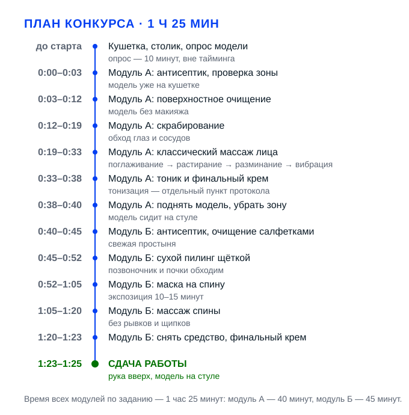
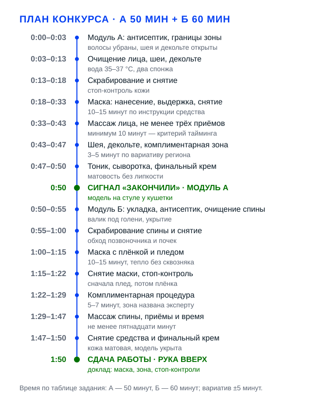
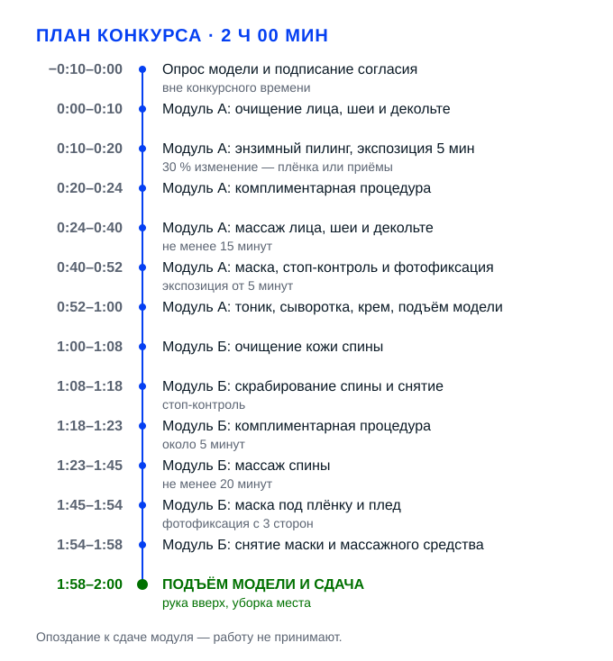

Косметик-эстетист (Р)
Задания ниже — официальные файлы «Абилимпикс» (источник: abilympics-russia.ru), разложенные по категориям. Решения написаны по тексту задания, регламенту и критериям оценки; в них указано, что именно проверяет эксперт.
Школьник
14–16 лет, базовый уровень заданияВыдержка из официального конкурсного задания: страницы, относящиеся к категории «Школьник» (стр. 11–12, 15–16 источника).
Пошаговое решение
На этой странице разобрано конкурсное задание категории «Школьники» по компетенции «Косметик-эстетист»: две комплексные процедуры условно здоровому человеку — уход за лицом (модуль А, 40 минут) и уход за телом (модуль Б, 45 минут), всего 1 час 25 минут чистого времени. Моделями выступают волонтёры старше 18 лет, согласие на процедуру подписывается до старта, а на опрос о противопоказаниях даётся 10 минут вне тайминга. Дальше решение разложено на четыре задачи: подготовка места и модели, модуль А по этапам протокола, модуль Б по этапам протокола и завершение работы. Внутри каждого шага — что именно делать руками, зачем это нужно по протоколу, как проверить результат, какая ошибка встречается чаще всего и что в этот момент смотрит эксперт. Читайте не как конспект, а как порядок действий: на площадке у вас будет ровно столько времени, сколько указано в модулях.

Задача 1. Подготовить место и модель до команды «начали»Подготовка · вне тайминга · 10 минут на опрос
Всё, что делается до старта, не входит в конкурсное время, но определяет, с чего вы начнёте: обработанная кушетка, разложенный столик, опрошенная модель и подписанное согласие. По заданию к команде «начали» модель уже лежит на кушетке, а на опрос о противопоказаниях отводится десять минут, причём и этот опрос в тайминг не входит. Здесь вы не зарабатываете баллы движением, зато именно здесь теряются первые минуты модуля А: пока вы ищете салфетки и поправляете простыню, сорок минут уже идут.
Действие 1.1. Подготовить кушетку и столик
Шаг 1.1.1
Берём дезинфицирующий раствор и протираем всё, к чему будет прикасаться модель: лежанку, подголовник, поручни, край столика. Затем натягиваем одноразовую простыню так, чтобы она свисала с трёх сторон и не подворачивалась под тело, а на подголовник кладём сложенное вдвое полотенце: лицо лежит на нём все сорок минут модуля А, а в модуле Б на подголовник ложится грудь и щека. Простыню берём за углы и опускаем на кушетку сверху, а не подсовываем под модель — так она ложится ровно и без складок.
Обработка и накрытие кушетки — первый пункт подготовительной части задания, и он вынесен за тайминг именно потому, что к команде «начали» модель обязана лежать. Полотенце на подголовнике нужно не для мягкости: без него простыня промокает от масла и тоника за первые десять минут, и модель чувствует себя неуютно, а вам приходится работать по мокрой ткани.
Простыня натянута без складок под спиной, углы не подвёрнуты, подголовник закрыт в два слоя, на полу вокруг кушетки сухо. Проведите ладонью по лежанке: под тканью не должно ощущаться швов и неровностей, а край простыни не должен касаться пола.
Обычная ошибка — закрыть только лежанку, оставив открытыми поручни и подголовник: модель берётся за них руками после массажного масла, и зона сразу читается как необработанная. Вторая — натянуть простыню слишком туго, тогда к середине процедуры она сбивается валиком под лопатками и давит на поясницу.
Эксперт обходит площадку до старта и смотрит ровно на это: обработана ли кушетка, лежит ли одноразовое покрытие, закрыт ли подголовник. Отдельно отмечает, закрыта ли кушетка на момент, когда модель уже легла.
Шаг 1.1.2
Регулируем высоту кушетки под свой рост: стоя у изголовья, вы должны работать с прямой спиной, а предплечья при массаже оставаться почти горизонтальными. Высоту стула косметолога подгоняем так, чтобы колени стояли под прямым углом, а стопы полностью касались пола; крутим винт до фиксации и проверяем, что стул не качается. Если кушетка на колёсах, сразу проверяем, что тормоза опущены.
Высота — это не удобство, а техника: на слишком низкой кушетке массаж лица превращается в работу за счёт плеча, движения становятся рваными, а к концу модуля Б, где нужно ещё сорок пять минут стоять над спиной, спина просто перестаёт держать амплитуду. Незаторможенная кушетка — отдельный риск: она отъезжает в момент, когда вы переносите вес на край.
Кушетка не шатается, стопор затянут, колёса зафиксированы, стул устойчив: надавите на него рукой. Встаньте у изголовья и опустите руки — кисти должны оказаться на уровне лежащей модели, без наклона корпуса и без поднятых плеч.
Часто регулируют только кушетку, а стул оставляют как есть: тогда в моменты, когда нужно сесть и подождать маску, участник садится боком и теряет из вида лицо модели. Ещё одна ошибка — не затянуть стопор, и кушетка проседает под весом человека, а вместе с ней уезжает вся зона.
Эксперт смотрит на позу участника в первой трети модуля: если он сутулится над кушеткой, это видно и засчитывается как нарушение эргономики. Во второй половине модуля Б смотрят то же самое ещё раз.
Шаг 1.1.3
Столик обрабатываем раствором и застилаем одноразовой салфеткой. Раскладываем по зонам, слева направо по ходу работы: очищающее средство, скраб, массажное масло, тоник, финальный крем для лица, маска, массажное средство для тела, финальный крем для тела. Рядом ставим ватные диски, спонжи, бумажные полотенца и мусорку так, чтобы до неё дотягиваться, не вставая; флаконы ставим крышками вверх и открываем их заранее, если конструкция позволяет.
Раскладка по порядку движений экономит те самые минуты, которых в модуле А всего сорок. По заданию порядок жёсткий: очищение, дополнительное очищение, массаж, тонизация, финальное средство, и если средства стоят в другом порядке, вы каждый раз ищете нужный флакон мокрыми руками, пачкая всё, к чему прикасаетесь.
На столике нет лишнего, все флаконы открываются одной рукой, колпачки не валяются, мусорка в пределах вытянутой руки. Пройдите взглядом по маршруту «флакон — рука — лицо»: ничего не должно стоять на пути, и ни один флакон не должен оказаться за спиной модели.
Типичная ошибка — выставить всю косметику в один ряд и разбираться с ней по ходу: на скрабе вы тянетесь через полстола и роняете диск. Вторая — поставить мусорку за спиной, тогда использованные салфетки копятся на столике и мешают работать в самый неудобный момент.
Эксперт фиксирует организацию столика как часть оценки рабочего места: хаос на столике виден с первого взгляда и снижает впечатление от всей процедуры, даже если техника массажа была чистой.
Действие 1.2. Опросить модель и получить согласие
Шаг 1.2.1
Задаём модели короткие, конкретные вопросы: есть ли аллергия на косметику и на эфирные масла, были ли реакции на массаж, нет ли повреждений и высыпаний на лице и спине, не проводились ли за последние дни пилинги, эпиляция или инъекции, всё ли в порядке с давлением. Слушаем ответы и сразу отмечаем для себя то, что меняет план: например, при куперозе скраб остаётся только на Т-зоне, а при свежей эпиляции спины сухой пилинг придётся исключить и заменить более мягкой обработкой.
Опрос — обязательная часть задания, на него отводят десять минут до начала работы, и он не входит в конкурсное время. Смысл не в формальности: противопоказания к процедуре проверяются до первого прикосновения, а не после, и любая реакция кожи во время работы останавливает время и требует замены модели.
Вы можете пересказать своими словами три вещи: на что у модели аллергия, какие зоны нельзя трогать и какие средства под вопросом. Если хоть один ответ не понят, переспросите сейчас, а не в середине массажа, когда руки уже в масле.
Самая частая ошибка — спросить «аллергии есть?» и услышать «вроде нет». Такой ответ ничего не значит: спрашивать надо про конкретные группы — эфирные масла, отдушки, кислоты, латекс. Вторая ошибка — не спросить про свежие косметологические процедуры и получить раздражение там, где кожа ещё восстанавливается после пилинга.
Эксперт может подойти во время опроса и послушать, как сформулированы вопросы: важно, что вы говорите с моделью, а не заполняете бумагу молча. Он же отмечает, задаёте ли вы вопросы до того, как модель легла.
Шаг 1.2.2
Берём бланк согласия, зачитываем вслух суть процедуры: очищение, скрабирование, массаж лица, тонизация и финальный крем, затем очищение спины, сухой пилинг, маска, массаж и финальное средство. Модель ставит подпись и дату. Если модель затрудняется заполнить анкету сама, по заданию помочь со слов может помощник, назначенный главным экспертом, — но не вы: свою руку под чужое согласие не подставляем.
Подписанное согласие — условие допуска к процедуре для всех категорий, включая школьников, и модели здесь волонтёры старше восемнадцати лет. Пока согласия нет, вы не имеете права начинать, даже если время уже пошло: это тот пункт, который проверяется документально, а не на глаз.
Бланк подписан, дата стоит, оба модуля названы, ваша подпись как исполнителя на месте. Проверьте, что в бланке отмечено отсутствие противопоказаний, а не оставлено пустое поле: пустая графа читается так, что опрос не проводился.
Ошибка новичков — подписать бланк «потом, после процедуры» или дать модели бланк, не объяснив, что именно она разрешает. Второе нарушение — вписать в согласие только уход за лицом, забыв, что в этом же задании идёт уход за телом, и тогда вторая процедура формально проходит без согласия.
Эксперт проверяет наличие согласия перед стартом обоих модулей, и это один из немногих пунктов, где нет снижения оценки — есть допуск или его отсутствие. Проверка идёт до команды «начали», а не в процессе.
Шаг 1.2.3
Садимся с моделью рядом и осматриваем кожу при дневном или боковом свете: смотрим расширенные сосуды на крыльях носа, воспаления, шелушение, родинки на спине, свежие царапины. Руками не трогаем, только смотрим и отмечаем границы зон, которые обойдём стороной. Отдельно просим модель повернуть голову, чтобы увидеть шею и линию челюсти, и наклон — чтобы оценить надплечья.
Осмотр определяет, где именно вы не будете скрабировать и массировать, и это напрямую связано с безопасностью: скраб по воспалениям и сосудистым звёздочкам — прямая дорога к раздражению, а массаж по повреждённой коже спины — к отёку и жалобе. План процедуры в этом задании не произвольный, он строится от состояния кожи.
У вас в голове есть три запретные зоны: круг вокруг глаз, участки с сосудистыми изменениями и всё, что повреждено. Спросите себя перед каждым этапом, не заходите ли вы на них, и держите границу на полсантиметра шире видимой: граница раздражения всегда выходит за пределы пятна.
Обычно осмотр пропускают, потому что «модель взрослая и здоровая». Именно так и получается скраб по свежему воспалению: внешне лицо чистое, а под определенным углом света видно, что трогать эту зону нельзя. Вторая ошибка — осмотреть лицо и не посмотреть спину, где родинки и царапины встречаются чаще.
Эксперт смотрит, осматриваете ли вы кожу вообще, и делает вывод по тому, обходите ли вы проблемные зоны в работе: одно без другого не считается, потому что план должен быть виден в действиях, а не в словах.
Действие 1.3. Уложить модель и проверить готовность зоны
Шаг 1.3.1
Перед командой «начали» помогаем модели лечь: подаём руку, придерживаем простыню, поправляем полотенце под головой так, чтобы шея не была запрокинута. Волосы убираем под одноразовую шапочку или полотенце, оставляя открытыми уши и линию роста волос. Спрашиваем, удобно ли, и ждём ответа, а не догадываемся по лицу: модель часто терпит неудобство из вежливости.
По заданию к старту модель уже лежит на кушетке, а к финишу её нужно поднять и посадить на стул — то есть контакт с моделью начинается и заканчивается вашими руками. Убранные волосы нужны и для работы: прядь, попавшая в скраб, тянет кожу и портит весь этап, а волос, попавший в массажное масло, потом видно на простыне.
Модель лежит ровно, голова на подголовнике, подбородок не задран, волосы убраны, уши открыты, руки вдоль тела. Спросите, не давит ли край полотенца на шею: это ощущение накапливается за сорок минут и мешает расслабиться к массажу.
Часто голову кладут слишком высоко, и подбородок оказывается прижат к груди: массировать по линиям в таком положении неудобно, кожа собирается складками. Вторая ошибка — убрать волосы «как получится», оставив височные пряди на коже, и потом работать вокруг них.
Эксперт смотрит на укладку модели до старта: это часть оценки этикета и работы с клиентом, и она видна сразу, без ожидания процедуры. Отдельно отмечает, предупредили ли модель о том, что сейчас произойдёт.
Шаг 1.3.2
Проверяем зону целиком, как перед выступлением: чистые руки, обработанная кушетка, салфетки и диски в пределах вытянутой руки, мусорка открыта, флаконы закрыты, освещение не бьёт модели в глаза, температура в помещении не ниже двадцати двух градусов. Если лампа светит в лицо, поворачиваем её или просим помочь — это минута, но она экономит сорок. Заодно убеждаемся, что бумажных полотенец хватает на оба модуля, а не только до первого массажа.
Свет и температура — не мелочи: при холодном воздухе кожа сжимается, массажное масло не распределяется, а при свете в глаза модель щурится, и вы не видите зону вокруг глаз. Порядок в зоне проверяют отдельно, потому что по ходу работы наводить его будет некогда, а эксперт проходит мимо несколько раз.
Пройдите по зоне глазами модели: что она увидит, открыв глаза? Стол, лампу, ваши руки. Ничего лишнего, ничего острого, ничего, что может упасть, в радиусе вытянутой руки. Заодно проверьте, хватает ли салфеток на две процедуры, а не только на первую.
Типичная ошибка — оставить мусорку закрытой или далеко: тогда использованные диски ложатся на столик и к моменту скрабирования там уже лежит гора. Вторая — не проверить, хватает ли салфеток, и тратить время модуля на поиск среди чужих столиков.
Эксперт оценивает организацию по ходу: чистая зона в начале и чистая зона в конце — это два разных наблюдения, и оба записываются в протокол. Он же отмечает, открыта ли мусорка и стоят ли флаконы на своих местах к моменту старта.
Шаг 1.3.3
Мысленно раскладываем сорок минут модуля А по этапам: около восьми минут на очищение, пять на скрабирование, двенадцать на массаж, три на тонизацию и финальное средство, остальное — на подъём модели и уборку зоны. Проговариваем себе порядок ещё раз, потому что переставлять этапы в этом задании нельзя, и запоминаем время, когда примерно должен закончиться массаж.
Порядок процедуры задан протоколом: поверхностное очищение, дополнительное очищение, массаж, тонизация, финальное средство. Если вы перепутаете местами скраб и массаж, кожа получит раздражение, а массаж пойдёт по неочищенной коже — это минус сразу по двум пунктам протокола.
У вас есть план по минутам и понимание, где заканчивается каждый этап. Проверьте себя вопросом: что я делаю в первые три минуты после «начали»? Ответ должен быть готов до команды, а не после, иначе первые минуты уходят на раздумья.
Самая дорогая ошибка — начать с массажа, «пока модель расслаблена», и оставить очищение на потом. Вторая — растянуть очищение на половину модуля и потом гнать массаж, теряя амплитуду и ритм: эксперту видно, что приёмы идут в спешке.
Эксперт отмечает, укладывается ли участник в окна этапов: резкие перескоки с одного этапа на другой видны и трактуются как потеря контроля над процедурой, даже если каждый отдельный приём выполнен верно.
Задача 2. Модуль А: косметический уход за лицомМодуль А · 40 минут · модель без макияжа
Сорок минут на одну процедуру, и внутри них жёсткая последовательность: очищение, дополнительное очищение, массаж лица, тонизация, финальное средство, подъём модели. Модель приходит без макияжа, поэтому демакияж как отдельный этап не нужен, но очищение от этого не становится формальностью. Каждый следующий этап опирается на предыдущий: скраб — на чистую кожу, массаж — на отшелушенную, крем — на тонизированную, и переставить их местами нельзя. Ниже разобраны пять действий по минутам, с указанием, что именно смотрит эксперт на каждом переходе.
Действие 2.1. Обработать руки и начать процедуру
Шаг 2.1.1
С началом времени наносим антисептик на сухие руки и втираем тридцать секунд, не забывая большие пальцы, промежутки между пальцами и ногтевые ложа. Не вытираем: средство должно высохнуть само, иначе оно не работает. Только после этого касаемся модели. Если на руках кольца или часы, они снимаются до старта, а не в процессе. Ногти коротко подстрижены и без покрытия, волосы убраны: это требование к внешнему виду участника, а не пожелание.
Обработка рук антисептиком — первая строка протокола и в модуле А, и в модуле Б. Логика простая: вы работаете на лице и на спине, то есть на большой площади кожи, и руки — единственный предмет, который контактирует с ней постоянно. Украшения в этой логике — не деталь: под ними антисептик не работает, а камень или звено цепляется за волосы.
Руки сухие, без липкости, без запаха, ладони тёплые. Если антисептик ещё не высох, подождите: на коже лица влажное средство даёт пощипывание, и модель вам об этом скажет. Проверьте заодно, что на руках нет крема — он мешает скрабу.
Частая ошибка — капнуть антисептик и сразу взяться за лицо, «пока не остыло». Вторая — обработать ладони и забыть про тыльную сторону кисти и ногти, которыми вы будете работать у линии роста волос, где кожа тоньше всего.
Эксперт наблюдает за началом процедуры: обработанные руки до первого касания — отдельно проверяемый пункт, а не подразумеваемый. Он же смотрит, сняты ли украшения и убраны ли волосы у самого участника.
Шаг 2.1.2
Подходим к изголовью, кладём руки на плечи модели на пару секунд и говорим, что сейчас будет очищение. Это не ритуал: так вы проверяете, что модель расслаблена, и заодно чувствуете температуру кожи — если она холодная, массажное средство потом ляжет хуже. Дальше работаем только кончиками пальцев, без нажима, и предупреждаем о каждом следующем этапе: «сейчас будет скраб», «теперь массаж».
Спокойное начало снижает тонус мышц лица, а расслабленное лицо — это условие массажа: по напряжённой коже движения получаются рывками, и оценка за технику падает. Кроме того, предупреждение о начале — часть этикета по отношению к модели, а этикет в этом задании проверяется отдельно от техники.
Плечи под руками опущены, дыхание ровное, модель не вздрагивает от первого касания. Если она напряглась, попросите сделать медленный выдох и начните с поглаживания лба: это самое безопасное место для первого контакта.
Ошибка — сразу наносить средство холодными руками на напряжённое лицо: модель вздрагивает, и первые минуты уходят на то, чтобы её успокоить. Вторая — начать молча, без единого слова, и потерять контакт, который потом не восстановится до самого массажа.
Эксперт смотрит на первые тридцать секунд: с какой руки начинается процедура, есть ли контакт с моделью, а не только с флаконом. Молчаливая работа с первого касания отмечается как слабая коммуникация.
Шаг 2.1.3
Перед нанесением средства проверяем зону ещё раз: нет ли слёзной жидкости, не намокло ли полотенце под головой, не сползла ли шапочка. Если что-то не так — поправляем сейчас, потому что после первого касания очищающим средством поправлять уже неудобно и негигиенично. Заодно убираем с лица модель всё, что могло остаться: очки, серьги-гвоздики, если модель не сняла их заранее.
Все сорок минут модуля А идут в одном положении, и любая мелочь, которую не поправили в начале, к середине превращается в проблему: мокрое полотенце давит на шею, шапочка съезжает на лоб, и вы работаете вокруг препятствия вместо того, чтобы работать по линиям. Серьги в мочках при массаже сдвигаются и мешают пройти линию челюсти.
Полотенце сухое, шапочка на месте, шея не запрокинута, простыня не подвёрнута под спину. Один короткий взгляд сверху вниз — и вы уверены, что следующие десять минут ни на что не отвлечётесь, а руки останутся чистыми.
Типичная ошибка — надеяться, что «и так нормально», и работать по сползшей шапочке, задевая волосы. Вторая — поправлять всё это мокрыми от крема руками на середине очищения, пачкая зону, модель и свою же работу.
Эксперт замечает такие детали, когда подходит к кушетке: сползшая шапочка и мокрое полотенце читаются как небрежность, которая тянется через весь модуль.
Действие 2.2. Провести поверхностное очищение кожи лица
Шаг 2.2.1
Набираем очищающее средство — молочко или мягкий гель — на подушечки пальцев и распределяем по лицу по массажным линиям: от середины лба к вискам, от спинки носа к вискам, от углов рта к козелку, от подбородка к мочкам ушей, затем шея сверху вниз. Работаем подушечками, а не ногтями, и не давим на глазницы. Средства берём столько, чтобы лицо блестело, но не текло: обычно это количество размером с крупную горошину на каждую зону.
Поверхностное очищение — вторая строка протокола, и модель на модуль А приходит без макияжа именно для того, чтобы вы работали с кожей, а не с тональным слоем. Движения по линиям нужны потому, что кожа растягивается по ним легко, а против них собирается в складки и быстрее теряет тонус — на конкурсе это видно на повторных проходах.
Средство распределено ровным тонким слоем, лицо блестит, но не течёт, граница — по линии роста волос и по краю нижней челюсти. Спросите модель, не щиплет ли: пощипывание вокруг глаз — сигнал смыть немедленно, не дожидаясь конца этапа.
Ошибка — нанести слишком много средства и устроить из очищения массаж: молочко высыхает и начинает тянуть кожу, и следующий этап идёт уже по раздражённой поверхности. Вторая — тереть глаза и крылья носа ногтями, оставляя микроцарапины, которые потом защиплет тоник.
Эксперт наблюдает за направлением движений: работа против массажных линий видна и оценивается как ошибка техники, а не как «свой способ». Его интересует и количество средства: слишком щедрое нанесение заметно по потёкам.
Шаг 2.2.2
Снимаем средство влажным спонжем или салфеткой, каждый раз по чистому участку: сначала лоб и щёки, потом носогубный треугольник, затем подбородок и шею. Салфетку не возвращаем на уже очищенную зону. Завершаем прохладной водой или влажным полотенцем, промакиваем насухо и только потом открываем следующий флакон. Движение идёт снизу вверх по щеке и от центра лба к виску, а не наоборот, иначе кожа тянется вниз.
Смена салфетки — это гигиена, а не экономия: вернув грязный диск на щёку, вы переносите загрязнение обратно, и очищение формально выполнено, а фактически нет. Прохладная вода сужает поры и снимает покраснение перед скрабированием, а насухо вытертое лицо не разбавляет скраб лишней влагой.
Кожа матовая, без блеска и липкости, при промокании полотенце остаётся чистым. Проведите ватным диском с тоником по линии роста волос: если диск чистый, очищение получилось. Если на диске серый след — вернитесь к крыльям носа и линии челюсти.
Частая ошибка — снимать средство одним и тем же диском по всему лицу, пока он не почернеет. Вторая — оставить мыльную плёнку у линии роста волос: там кожа потом шелушится, и это видно к моменту массажа, когда лицо разогреется.
Эксперт может проверить чистоту зоны ватным диском после очищения: остаток средства или загрязнения фиксируется как невыполненный пункт протокола, независимо от того, сколько времени вы потратили на этап.
Шаг 2.2.3
Проходим зону повторно, если видны следы: чаще всего остаются крылья носа, область вокруг рта и граница челюсти. На этих участках средство наносим ещё раз тонким слоем и снимаем отдельной салфеткой, после чего кожу обязательно промокаем насухо и оцениваем результат при боковом свете. Средства на эти участки берём меньше, чем на первый проход: кожа уже очищена, и лишнее останется плёнкой до скраба.
Дополнительный проход по проблемным участкам — это не перерасход времени, а именно то, что отличает очищение от имитации: на крыльях носа скапливается больше всего кожного сала, и скраб по неочищенной коже размазывает его по лицу вместо того, чтобы отшелушивать.
Кожа выглядит однородной, поры на крыльях носа не блестят, при боковом свете нет серого налёта. Если сомневаетесь, посмотрите на кожу под углом к лампе — налёт виден именно сбоку, а не спереди. Отдельно проверьте складку у крыла носа: там налёт держится дольше всего и снимается только повторным проходом.
Ошибка — решить, что «и так чисто», и перейти к скрабу: остатки сала смешиваются с абразивом, и вместо отшелушивания получается раздражение. Вторая — тереть проблемную зону жёстким диском до покраснения, после которого скраб уже нельзя.
Эксперт оценивает результат очищения по внешнему виду кожи и по тому, насколько аккуратно отработаны углы носа и линия челюсти — это те места, где небрежность видна даже на расстоянии.
Действие 2.3. Провести дополнительное очищение — скрабирование
Шаг 2.3.1
Набираем скраб на влажные подушечки пальцев — количество размером с горошину, потому что лишнее просто осыпается с лица. Наносим на Т-зону: лоб, нос, подбородок, — и распределяем по щекам тонким слоем, обходя круг вокруг глаз и зоны с видимыми сосудами. Следим, чтобы абразив не попал в глаза и на губы, а у бровей не остался комками. Скраб распределяем по коже влажными пальцами, не давая крупинкам осыпаться на столик.
Скрабирование — третья строка протокола, дополнительное очищение, и его цель — убрать омертвевшие клетки, а не отполировать лицо. Т-зона — участок с наибольшим количеством сальных желёз, поэтому там скраб нужен в первую очередь, а тонкая кожа вокруг глаз его просто не переносит: там нет такого слоя роговых клеток.
Пальцы влажные, но не скользят от избытка средства, крупинки распределены без комков. Вокруг глаз и на сосудистых участках абразива нет — проверьте, посмотрев на лицо прямо сверху и попросив модель посмотреть вверх.
Самая опасная ошибка — нанести скраб на всё лицо «для однородности»: вокруг глаз кожа истончена, и после такого прохода появляется раздражение, которое видно до конца процедуры. Вторая — взять скраб с крупными частицами и давить, растягивая щёки.
Эксперт смотрит именно на распределение: наличие абразива в орбитальной зоне фиксируется как нарушение техники и безопасности, а это уже вопрос допуска к процедуре, а не только оценки.
Шаг 2.3.2
Прорабатываем круговыми движениями по два-три прохода на каждую зону, всего около двух минут: лоб — от середины к вискам, нос — сверху вниз и по крыльям, подбородок — от центра к углам челюсти, щёки — по направлению к ушам. Сила нажатия такая, чтобы кожа не собиралась в складки под пальцами, а крупинки не впивались в кожу. У линии роста волос работаем осторожнее: там кожа тоньше и уже.
Два-три прохода дают отшелушивание, а не травму: при большем числе и сильном нажатии кожа краснеет, и к моменту массажа вы работаете по раздражённой поверхности, что видно и на фото, и на ощупь. Направление по линиям нужно, чтобы не растягивать кожу в местах, где она и без того подвижна.
Кожа чуть порозовела, стала гладкой на ощупь, скраб не скатывается в катышки. Красных полос и точек нет — если появились, немедленно смывайте и сокращайте работу до нуля: лучше потерять этап, чем испортить кожу перед массажем.
Ошибка — работать «до скрипа» и считать, что чем сильнее, тем чище: после такого скрабирования массаж делать нельзя, кожа горит, и участник вынужден его сокращать. Вторая — водить пальцами в разных направлениях, растягивая кожу под глазами и в носогубном треугольнике.
Эксперт оценивает длительность и интенсивность скрабирования, а также гладкость кожи до и после: это один из немногих этапов, результат которого видно сразу и без оборудования.
Шаг 2.3.3
Смываем скраб прохладной водой или снимаем влажным спонжем, тщательно убирая крупинки у линии роста волос, на бровях и в углах носа. Промокаем насухо, проверяем, что ни одна частица не осталась, и на этом очищение заканчиваем, оставляя кожу чистой и подготовленной к массажу. Полотенце для промокания берём отдельное, а не то, которым вытирали руки, иначе на кожу вернутся остатки средства.
Оставшиеся крупинки абразива под пальцами во время массажа работают как наждак по уже распаренной коже, а на бровях и у линии волос их не видно и не чувствуется до тех пор, пока они не начнут царапать. Чистая кожа перед массажем — условие того, что масло ляжет ровно.
Проведите ладонью по лицу: она должна скользить ровно, без песчинок. Отдельно пройдитесь пальцем по бровям и за ушами — там частицы остаются чаще всего, особенно если скраб был на масляной основе. Отдельно пройдитесь по шее: там крупинки заметны хуже всего и остаются до самого массажа.
Ошибка — смыть скраб только с середины лица, оставив его по краю: массаж собирает остатки, и к финалу у модели остаются следы, а на столике — грязные салфетки. Вторая — смывать горячей водой, которая усиливает покраснение после отшелушивания.
Эксперт проверяет чистоту кожи перед массажем, потому что этот этап граничит с предыдущим и переход должен быть чистым: следы скраба на коже он видит в момент, когда вы уже начали массаж.
Действие 2.4. Выполнить классический массаж лица
Шаг 2.4.1
Наносим массажное средство: масло или крем для массажа, немного, на подушечки пальцев, и распределяем по лицу и шее по тем же линиям, что и очищение. Средства должно быть столько, чтобы пальцы скользили, но лицо не блестело жирно — излишек промокаем салфеткой до начала движений. Шею промазываем до ключиц, потому что заканчивать массаж придётся именно там.
Массаж идёт четвёртой строкой протокола, сразу после скрабирования, и по сухой коже он невозможен: пальцы цепляются, кожа тянется, вместо расслабления получается растяжение. Излишек масла тоже мешает — рука едет, амплитуда теряется, и движения становятся нечитаемыми для эксперта.
Пальцы скользят без рывков, на коже нет капель и потёков, волосы не затронуты. Проверьте, что средство не затекло за уши, на воротник и на подголовник — это видно и портит впечатление от всей процедуры.
Частая ошибка — налить масло на ладонь и размазать по лицу, не распределяя по линиям: часть зон остаётся сухой, и там массаж превращается в растягивание. Вторая — не убрать излишек и потом «плыть» руками, теряя постановку кисти.
Эксперт оценивает подготовку к массажу отдельно: если средство нанесено небрежно, дальнейшая техника уже не спасёт, потому что оценивается вся процедура целиком.
Шаг 2.4.2
Начинаем с поглаживания: плоскостные движения всей ладонью и подушечками пальцев от середины лба к вискам, от носа к ушам, от подбородка вверх к скулам, шея — от подбородка вниз к ключицам. Темп спокойный, давление лёгкое, каждый участок проходим три-четыре раза, всего около двух минут. Кисти держим расслабленными, работает плечо, а не запястье. На одном участке не задерживаемся дольше десяти секунд, чтобы не перегреть кожу в одной точке.
Поглаживание — подготовительный приём: оно разогревает кожу, снимает тонус и готовит её к более глубоким движениям. Начинать сразу с разминания нельзя, потому что неподготовленные мышцы отвечают спазмом, и лицо остаётся напряжённым до конца процедуры, а все последующие приёмы идут хуже.
Кожа тёплая на ощупь, модель дышит ровно, плечи опущены. Если вы чувствуете под пальцами напряжение в области жевательных мышц, задержитесь там на несколько лишних движений — это самые зажатые зоны. Проверьте, не собирается ли кожа под пальцами в складку: при правильном поглаживании её быть не должно.
Ошибка — начать массаж с сильного растирания, «чтобы быстрее разогреть»: лицо краснеет, модель напрягается. Вторая — работать только по центру лица, забывая шею и линию челюсти, через которые массаж и должен заканчиваться.
Эксперт смотрит на последовательность приёмов: поглаживание первым — признак того, что участник знает классическую схему, а не импровизирует по ходу. Ему же видно, не перескакиваете ли вы с участка на участок: ритм поглаживания читается как метроном.
Шаг 2.4.3
Переходим к растиранию: круговые и спиралевидные движения подушечками пальцев по тем же линиям, с небольшим нажимом, особенно по линии челюсти, вокруг рта и в области лба. Держим кожу второй рукой, чтобы она не смещалась вслед за пальцами, и работаем примерно три минуты, продвигаясь от центра к периферии. Особое внимание носогубным складкам: там движения идут по кругу, но без растягивания кожи вниз.
Растирание прорабатывает более глубокие слои и снимает уплотнения, которые чувствуются как небольшие комочки в области жевательных мышц и на лбу. Фиксация кожи второй рукой нужна, чтобы не растягивать её: тот же приём без фиксации работает против вас, и кожа теряет упругость.
Под пальцами нет «катышков» и уплотнений, кожа двигается вместе с пальцами, а не отдельно от них. Нажим одинаковый с двух сторон — проверьте симметрию, она заметна и на ощупь, и с расстояния. Сравните ощущения от своих рук: они должны быть одинаково тёплыми, а нажим одинаковым по силе.
Ошибка — растирать без фиксации и тянуть кожу вниз: к концу массажа лицо выглядит уставшим, а не отдохнувшим. Вторая — работать ногтями, оставляя красные следы, которые потом защиплет тоник. И кожа под глазами краснеет уже к середине приёма, а тоник потом щиплет.
Эксперт обращает внимание на постановку рук и на симметрию: разные по силе движения справа и слева видны сразу и читаются как отсутствие контроля за собственными руками.
Шаг 2.4.4
Выполняем разминание — самый глубокий приём: захватываем кожу и мышцу подушечками пальцев, слегка сдвигаем, отпускаем, продвигаясь от центра к периферии. Работаем по щекам, линии челюсти, области вокруг рта; на лбу — только мягкое разминание, около двух-трёх минут, с паузами на поглаживание после каждого прохода. Захват делаем мягкий: кожа должна собираться в валик, а не щипаться в тонкую складку.
Разминание даёт основной эффект массажа: улучшает питание тканей и снимает мышечные зажимы, из-за которых лицо выглядит уставшим. Но именно этот приём легче всего сделать травматичным, поэтому на лбу и вокруг глаз его ослабляют, а после каждого прохода возвращаются к поглаживанию.
Кожа не краснеет пятнами, модель не хмурится и не просит ослабить нажим. После прохода мышцы под пальцами ощущаются мягче, чем до него, — это и есть критерий правильной глубины. Проверьте, не осталось ли участков, которые вы обошли: чаще всего это линия челюсти у ушей.
Ошибка — щипать кожу, считая, что «так глубже»: остаются синяки, и модель к следующему этапу чувствует боль вместо расслабления. Вторая — разминать область вокруг глаз, где захватывать просто нечего. И модель просит закончить раньше времени, а часть зон остаётся необработанной.
Эксперт оценивает силу и характер захвата: щипковый массаж виден по реакции кожи и по лицу модели, и это одно из самых частых замечаний на категории «Школьники».
Шаг 2.4.5
Завершаем массаж вибрацией: лёгкие частые постукивания и «пунктирные» движения подушечками пальцев по лбу, щекам, вокруг рта, затем финальное поглаживание в том же порядке, что и в начале, — около полутора минут, и останавливаемся, убирая руки медленно. Стучим подушечками, а не ногтями, и держим кисть расслабленной, чтобы звук был глухим, а не щёлкающим.
Вибрация тонизирует и одновременно снимает напряжение после глубоких приёмов, а финальное поглаживание возвращает ритм и оставляет у модели ощущение завершённости. Резко обрывать массаж нельзя: без выхода в поглаживание лицо остаётся «разогнанным», и кожа выглядит неровно покрасневшей.
Дыхание модели спокойное, лицо симметричное, кожа без пятен, вы сами заканчиваете движения, а не обрываете их. После финального поглаживания руки убираем медленно и говорим, что массаж закончен. Спросите модель, комфортно ли ей на этом приёме: вибрация переносится по-разному.
Ошибка — закончить на разминании и сразу перейти к тонику: кожа не успевает успокоиться, и тонизация щиплет. Вторая — убрать руки резко, от неожиданности модель вздрагивает, и весь эффект расслабления теряется.
Эксперт смотрит на завершение массажа: наличие выхода в поглаживание отличает законченную процедуру от прерванной, и по этому признаку видно, понимает ли участник структуру классического массажа.
Действие 2.5. Нанести тоник и финальное средство, поднять модель
Шаг 2.5.1
Снимаем остатки массажного средства: промакиваем лицо салфеткой, если масла много, или оставляем тонкий слой, если крем лёгкий. Затем наносим тоник на ватный диск и проходим по линиям — от центра к периферии, шею сверху вниз, не протирая кожу насухо и не задевая глаза. Диск меняем один раз, чтобы не развозить масло по лицу. Тоник наносим сразу после снятия масла, не давая коже остыть и впитать остатки средства.
Тонизация — отдельная строка протокола, и её нельзя заменить «просто водой». Тоник восстанавливает кислотно-щелочной баланс после очищения и скрабирования и подготавливает кожу к крему: на несбалансированной коже финальное средство ложится плёнкой и скатывается.
Кожа влажная от тоника, но не мокрая, покраснение после массажа спадает. Диск не должен быть грязным — если на нём следы средства, значит, массажное масло снято не полностью, и крем ляжет неровно. Если кожа под пальцами всё ещё скользит, масло снято не полностью — промокните ещё раз.
Ошибка — наносить тоник с спиртом на сухую кожу после скраба: щиплет, и модель морщится, а вы теряете контакт на самом финише. Вторая — промокнуть лицо насухо после тоника, обнулив весь смысл этапа. И крем после этого ложится неровно, полосами по краю челюсти.
Эксперт проверяет наличие тонизации как отдельного пункта: пропуск этапа не компенсируется хорошим массажем, потому что в протоколе он записан отдельной строкой.
Шаг 2.5.2
Наносим финальный крем по типу кожи: для сухой — плотнее, для комбинированной — лёгкий гель или флюид. Берём небольшое количество, распределяем по линиям лёгкими движениями, остатки промокаем салфеткой. Шею не забываем, она входит в зону ухода, и на неё крем наносим снизу вверх, до самой линии челюсти. Крем наносим по ещё влажной от тоника коже: так он распределяется ровнее и расходуется заметно меньше.
Финальное средство — последняя строка протокола модуля А, и оно должно закрыть процедуру: увлажнить, защитить и не оставить жирного блеска. Излишек крема — самая заметная ошибка финала, потому что лицо блестит и модель ощущает тяжесть, а на фотоотчёте это видно сразу.
Кожа матовая или слегка влажная, крема не видно, при промокании салфетка остаётся почти сухой. Проведите тыльной стороной пальца по щеке — он не должен блестеть. Осмотрите лицо при боковом свете: полосы крема видны как более блестящие участки на матовой коже.
Частая ошибка — нанести крем «побольше, чтобы хватило»: излишек скатывается и собирается по краю челюсти белыми катышками. Вторая — забыть шею, и зона выглядит завершённой наполовину, хотя протокол включает её в уход за лицом.
Эксперт оценивает финал процедуры визуально: ровный тон, отсутствие блеска и следов средства на волосах и у линии роста. Он же смотрит, насколько ровно распределён крем на шее: её чаще всего оставляют обработанной наполовину.
Шаг 2.5.3
Поднимаем модель по правилам этикета: предупреждаем, что сейчас поможем сесть, поворачиваем на бок, поддерживая за плечо и спину, помогаем сесть, даём пару секунд, затем подаём руку, помогаем встать и провожаем до стула рядом с кушеткой. Халат подаём на плечи, а не набрасываем на голову, и держим руку, пока модель не сядет. Стул подставляем заранее, чтобы модель не искала опору и не шла через всю зону после процедуры.
Подъём модели — отдельный пункт протокола, и он проверяется у обеих процедур. Резкий подъём после массажа опасен: давление перераспределяется, и человек может почувствовать головокружение. Кроме того, это последнее, что видит эксперт, и по нему судят об отношении к клиенту.
Модель сидит устойчиво, ноги на полу, халат на плечах, рядом есть куда опереться. Спросите, всё ли в порядке, и дождитесь ответа — это и есть этикет, а не формальность, и он занимает пять секунд. Вы держите модель за руку ровно столько, сколько нужно, и не тянете её на себя.
Ошибка — рывком поднять модель за руку, «чтобы быстрее»: это и небезопасно, и выглядит грубо. Вторая — оставить модель лежать и уйти убирать столик: пункт протокола остаётся невыполненным, а освободившееся время уже не поможет.
Эксперт фиксирует подъём модели в момент команды «закончили»: к этому времени модель должна сидеть на стуле, а не подниматься с кушетки. Отдельно он отмечает, помогли ли вы модели встать и дойти до стула, а не только подали руку.
Задача 3. Модуль Б: косметический уход за теломМодуль Б · 45 минут
Сорок пять минут на уход за спиной — самый длинный модуль задания. Здесь работают на большой площади кожи, и это меняет всё: салфеток нужно больше, средства расходуется больше, а следить за комфортом модели приходится постоянно, потому что спина открыта. Порядок протокола такой: очищение влажными салфетками, сухой пилинг щёткой или варежкой, маска, массаж, снятие массажного средства и финальный крем. Ошибка на любом этапе видна на следующем, а времени на переделку почти нет: маска уже нанесена, и начинать заново никто не будет.
Действие 3.1. Обработать руки и очистить спину салфетками
Шаг 3.1.1
Модуль Б начинается с того же, что и модуль А: антисептик на сухие руки, втираем тридцать секунд и даём высохнуть. Дальше проверяем зону: кушетка застелена свежей простыней, под головой и под тазом — полотенца, рядом лежит второе полотенце, которым модель прикроют после процедуры, и открытая мусорка для салфеток. Между модулями меняем простыню, а не разглаживаем старую.
На уход за телом по заданию отводится сорок пять минут, и это самый длинный модуль: если зона не подготовлена, вы будете искать полотенца мокрыми руками, а модель в это время лежит открытой. Обработка рук антисептиком — первая строка протокола и здесь, причём руки после модуля А придётся обработать заново.
Руки сухие, простыня свежая, полотенца под головой и тазом на месте, мусорка открыта. Проверьте, что модель не лежит на голой кушетке и что край простыни не подвёрнут под бок: на спине это ощущается как валик и мешает расслабиться.
Типичная ошибка — начать модуль Б с той же простыни, что была на лице: на ней остались масло и следы скраба, а спина — это большая открытая поверхность. Вторая — забыть про второе полотенце, и модель мёрзнет всю процедуру, особенно к экспозиции маски.
Эксперт осматривает зону перед стартом модуля Б отдельно от модуля А: это другая процедура и другое рабочее место по факту, и он смотрит, заменено ли бельё.
Шаг 3.1.2
Берём влажные салфетки и протираем спину по направлениям: от поясницы вверх к лопаткам, от позвоночника в стороны к бокам, каждым участком — по одной салфетке, без возврата на уже очищенную зону. Позвоночник проходим мягко, не надавливая на остистые отростки. Работаем две-три минуты, начиная с дальних участков и заканчивая теми, что ближе к вам. Каждой салфеткой работаем один раз и не возвращаемся ею на уже очищенный участок.
Очищение влажными салфетками — вторая строка протокола модуля Б, и направление движений здесь не случайно: от позвоночника к периферии вы идёте по ходу лимфы, а не против неё. Салфетка на каждый участок нужна потому, что спина — самая широкая зона и загрязнение распределяется по ней быстро.
Кожа чистая и слегка влажная, салфетки после прохода не оставляют серого следа. Проведите салфеткой по лопаткам в конце: если след остался, зону надо пройти ещё раз, начиная с дальних участков. Кожа не должна тянуться под салфеткой: движение идёт по поверхности, а не с нажимом.
Ошибка — тереть спину одной салфеткой от шеи до поясницы: грязь переносится по всей поверхности. Вторая — давить на позвоночник, что неприятно и не нужно на этапе очищения, а после массажа ещё и оставляет ощущение болезненности.
Эксперт смотрит на расход салфеток и на направление движений: одна салфетка на всю спину читается как нарушение гигиены, даже если кожа в итоге чистая.
Шаг 3.1.3
Проходим зону ещё раз, если нужно, и обязательно очищаем участки, о которых легко забыть: надплечья, лопатки, бока и область поясницы у края белья. После очищения кожу не вытираем насухо, а промакиваем полотенцем и сразу закрываем второй половиной полотенца, чтобы модель не мёрзла между этапами. Полотенце под головой меняем, если оно стало влажным: на нём лежит лицо, и мокрое бельё модель чувствует сразу.
Сорок пять минут модуля Б — это много для открытой спины, и если кожу оставить мокрой, она охлаждается, мышцы напрягаются, и массаж потом идёт по спазмированной спине. Граница белья и надплечья — зоны, где загрязнение остаётся чаще всего, потому что там кожа в складках.
Кожа тёплая, ровная на вид, без серого налёта в области лопаток и по краю белья. Модель не жалуется на холод — это тоже проверяемый признак, и его легко упустить, если не спрашивать. Полотенце под головой сухое, а не влажное от предыдущего этапа, и не пахнет средством.
Ошибка — оставить спину мокрой после салфеток и начать пилинг: щёлка по влажной коже скользит и не даёт отшелушивания. Вторая — не обработать надплечья, и при массаже там видна граница, которую замечает и эксперт, и модель.
Эксперт проверяет, закрыта ли модель между этапами: комфорт модели входит в оценку этикета наравне с техникой, и это видно без всяких измерений. Он же смотрит, меняется ли бельё после лица и остаётся ли простыня сухой к маске.
Действие 3.2. Провести сухой пилинг спины
Шаг 3.2.1
Берём щётку с натуральной щетиной или варежку для душа и массажа, проверяем, что она сухая и чистая. Начинаем с лёгких движений по направлению от поясницы вверх к лопаткам и от позвоночника к бокам, сначала одной рукой, затем, если удобно, двумя по симметричным зонам. Позвоночник и область почек обходим, работаем по обе стороны от середины спины. Движения короткие, по пять-семь сантиметров, чтобы щётка прорабатывала кожу, а не скользила по ней.
Сухой пилинг — отдельная строка протокола, и его задача — механически снять ороговевшие клетки и разогнать кровь перед маской и массажем. Направление к сердцу и от центра к периферии соответствует ходу лимфы, а область почек и остистые отростки — зоны, где давление не нужно ни при каких условиях.
Щётка идёт ровно, без пропусков, кожа под ней розовеет равномерно, без полос. Проверьте, что вы не задеваете позвоночник: движения должны обходить его с двух сторон, а не проходить по нему. Проверьте, нет ли красных точек там, где щетина жёстче: это признак слишком сильного нажима.
Ошибка — водить щёткой хаотично и с сильным нажимом: остаются красные полосы, и кожа болит к моменту нанесения маски. Вторая — работать по позвоночнику, что неприятно и травматично, а на конкурсе ещё и заметно по реакции модели.
Эксперт смотрит на положение щётки и на симметрию: работа только с одной стороны спины видна сразу, как и слишком сильное давление по краю розового пятна.
Шаг 3.2.2
Прорабатываем зону пять-семь минут, уделяя больше времени лопаткам, пояснице и бокам, где кожа плотнее всего. Нажим наращиваем постепенно: первые проходы лёгкие, дальше чуть сильнее, а на пояснице снова ослабляем. Следим за реакцией кожи и за лицом модели, спрашивая про ощущения через каждые пару минут. Щётку держим всей ладонью, а не кончиками пальцев: так нажим ровнее и не сбивается к краю спины.
Пять-семь минут — это рабочий отрезок для сухого пилинга: короче — эффекта нет, дольше — кожа становится слишком чувствительной, и маска начинает щипать. Постепенное наращивание нажима нужно, чтобы кожа адаптировалась, а не отвечала покраснением. Равномерность здесь важнее силы, потому что кожа должна быть готова к маске целиком.
Кожа тёплая, розовая, равномерно гладкая на ощупь, без шелушения и без ярких полос. Проведите ладонью: до и после разница должна ощущаться как «гладко против шершавого». Спросите модель, не слишком ли горячо: после щётки кожа ощущается теплее обычного.
Частая ошибка — «дотереть до скрипа», из-за чего кожа краснеет пятнами и маска жжёт. Вторая — пропустить поясницу и бока, хотя именно там кожа плотнее и грубее, и именно там сухой пилинг нужнее всего.
Эксперт оценивает длительность и распределение: равномерность проработки видна по цвету кожи без всяких прикосновений, а пятна от чрезмерного нажима остаются на весь модуль.
Шаг 3.2.3
Убираем с кожи отошедшие частицы: проходим влажной салфеткой или сухим полотенцем по тем же направлениям, стряхиваем щётку над мусоркой, а не над моделью. Затем накрываем спину полотенцем и проверяем, что простыня под моделью не сбилась и осталась сухой. Стряхиваем щётку в мусорку, отведя её в сторону от кушетки, а после модуля промываем и сушим: инструмент сдают чистым.
Отошедшие частицы на коже смешаются с маской и превратятся в катышки, которые потом придётся снимать вместе с маской. Стряхивать щётку над моделью нельзя: частицы летят на лицо и в глаза — это уже вопрос безопасности, а не аккуратности. Частицы кожи в воздухе — это ещё и вопрос гигиены дыхания модели, а не только чистоты спины.
На коже нет видимых частиц, простыня сухая, под спиной нет складок. Если модель лежит на мокром, замените простыню сейчас, потому что дальше идёт маска и лежать на влажном придётся ещё десять минут. Щётка после стряхивания сухая и чистая, а на простыне нет мелких светлых чешуек.
Ошибка — оставить частицы и нанести маску сверху: получаются комки, и маска ложится неравномерно. Вторая — не поправить простыню, и к концу модуля модель лежит на влажной ткани, а кушетка к финалу выглядит неопрятно.
Эксперт проверяет чистоту зоны перед маской: переход между этапами должен быть чистым, как и в модуле А, где после скраба кожу тоже проверяют. Он же замечает, куда именно вы стряхиваете щётку и далеко ли отодвигаете её от модели.
Действие 3.3. Нанести, выдержать и удалить маску
Шаг 3.3.1
Наносим косметическую маску для тела ровным слоем по массажным линиям: от поясницы вверх, от позвоночника в стороны, не заходя на остистые отростки. Толщина слоя — около двух миллиметров, чтобы маска не высохла раньше времени. Родинки, царапины и воспаления обходим, а кисть держим плоско, чтобы не давить на кожу после пилинга. Наносим маску от дальнего края спины к ближнему, чтобы не тянуться через уже намазанное.
Маска — третья строка протокола модуля Б, и она наносится на подготовленную кожу: после очищения и сухого пилинга поры открыты, и состав работает глубже. Ровный слой нужен не для красоты — там, где маски нет, кожа высохнет под ней неравномерно и начнёт тянуть.
Слой одинаковый по всей спине, границы ровные, у края белья и на надплечьях маска есть. Проведите пальцем в перчатке по контрольной линии: след должен быть одинаковым по толщине. Проверьте, что слой не сползает по бокам, когда модель делает глубокий вдох.
Ошибка — нанести маску толстым слоем «чтобы подействовало»: она не сохнет и не снимается целиком, оставаясь в складках. Вторая — зайти маской на родинки и повреждения, что даёт раздражение и жалобу модели.
Эксперт смотрит на распределение маски и на то, обойдены ли проблемные участки: это одновременно техника и безопасность, и обход родинок виден по ровному контуру.
Шаг 3.3.2
Выдерживаем маску по инструкции средства, обычно десять-пятнадцать минут, накрыв спину плёнкой или тёплым полотенцем. В это время не отходим от модели: спрашиваем про ощущения, следим за покраснением и жжением, проверяем тайминг у эксперта времени и держим руки занятыми уборкой столика рядом, а не в другом конце зоны. Плёнку или полотенце кладём так, чтобы модель могла дышать свободно и не потела под укрытием.
Время экспозиции — то, что нельзя ни сократить, ни растянуть: раньше снятая маска не сработала, позже снятая начинает сушить кожу и трескается при удалении. Молча стоять нельзя: если у модели жжение, её нужно освободить от маски немедленно, и это единственная причина прервать экспозицию.
Прошло ровно столько минут, сколько указано на упаковке, кожа под маской не ярко-красная, модель не жалуется на жжение и не просит снять. Всё это проверяется вопросами, а не догадками по выражению лица.
Ошибка — накрыть маску и уйти готовить столик к массажу далеко от кушетки: время теряется, маска пересыхает, а модель остаётся без внимания. Вторая — не спросить про ощущения и узнать о жжении, когда уже снимаете маску.
Эксперт проверяет, держите ли вы контакт с моделью во время экспозиции: это отдельное наблюдение, а не деталь, и молчаливое стояние в стороне он отмечает.
Шаг 3.3.3
Снимаем маску влажными салфетками или спонжем, двигаясь по тем же направлениям, меняя салфетку по мере загрязнения. Остатки убираем у края белья и на боках, затем промокаем кожу полотенцем и проверяем, что маски не осталось, особенно в складках у позвоночника. Работаем от шеи вниз, чтобы остатки маски не текли по уже очищенной коже, и не давим на позвоночник.
Маску нужно снять полностью, потому что массажное средство не ляжет на её остатки: получится скользкая плёнка, и руки будут ездить по спине без всякой техники. Кроме того, остатки маски под полотенцем дают раздражение к концу модуля. Вдобавок остатки маски мешают оценить цвет кожи перед массажем, а он подсказывает глубину нажима.
Кожа чистая, без липкости и белых разводов в складках у края белья, салфетки после контрольного прохода чистые. Проверьте бока и поясницу — там остатки заметны меньше всего, а проявляются уже под массажным средством.
Ошибка — снять маску одним движением «сверху вниз» и оставить её в складках по бокам. Вторая — тереть кожу сухой салфеткой, растягивая её после пилинга, когда она особенно чувствительна. И кожа под полотенцем остаётся липкой до самого конца модуля.
Эксперт может проверить зону салфеткой: остатки маски фиксируются как невыполненный пункт протокола, и это одна из самых частых потерь на модуле Б. Он же смотрит, как вы обходите складки по бокам и у позвоночника.
Действие 3.4. Провести массаж спины
Шаг 3.4.1
Наносим массажное средство на ладони, растираем между ладонями до тепла и распределяем по спине от поясницы вверх, затем по бокам и надплечьям. Средства берём немного: кожа должна блестеть, но масло не должно стекать по бокам на простыню. Начинаем с дальних участков, чтобы не тянуться через уже промасленную спину. Флакон держим в одной руке, а второй распределяем средство, так оно не проливается на простыню.
Массаж — четвёртая строка протокола модуля Б, и он идёт после маски, то есть по распаренной и очищенной коже. Тёплое средство нужно потому, что холодное масло вызывает сокращение мышц, и первые движения получаются скованными. Излишек масла — потеря техники: ладони скользят, и нажим не чувствуется.
Ладони двигаются по коже, а не над ней, средство распределено равномерно, на простыне нет капель. Проверьте бока: именно туда стекает лишнее масло, и именно там его потом приходится снимать дольше всего.
Ошибка — вылить масло на спину из флакона: часть попадёт на пол и на одежду модели. Вторая — работать по сухой коже, растягивая её и вызывая неприятные ощущения, после которых модель просит ослабить нажим на весь массаж.
Эксперт оценивает подготовку к массажу: количество средства и равномерность его распределения видны по блеску кожи, а пятна на простыне он замечает сразу.
Шаг 3.4.2
Начинаем с поглаживания: широкие движения ладонями от поясницы вверх к лопаткам, от позвоночника в стороны, по надплечьям — к плечевым суставам. Давление лёгкое, темп спокойный, каждый участок проходим три-четыре раза, около трёх минут, и следим, чтобы кисти были расслаблены. Двигаемся от поясницы вверх, не перескакивая через зоны, и каждый участок проходим целиком, прежде чем перейти к следующему.
Поглаживание разогревает мышцы и готовит спину к глубоким приёмам. Это важно физиологически: неподготовленные мышцы спины отвечают спазмом, и разминание в таком состоянии ощущается как боль, а не как массаж, и модель начинает напрягаться вместо того, чтобы расслабиться.
Кожа тёплая, мышцы под ладонями мягче, чем в начале, дыхание модели ровное. Если под рукой остаётся напряжённый валик, задержитесь на нём с поглаживанием, прежде чем идти дальше, и вернитесь к нему уже в растирании.
Ошибка — начать сразу с разминания, «чтобы не терять время»: модель напрягается, и дальше работать приходится через сопротивление мышц. Вторая — поглаживать в случайных направлениях, без движения к лопаткам и надплечьям.
Эксперт смотрит на последовательность приёмов: классическая схема массажа начинается с поглаживания, и это заметно с первых секунд, как и обратное — сразу глубокий приём.
Шаг 3.4.3
Переходим к растиранию: работаем основанием ладони и подушечками пальцев круговыми движениями вокруг лопаток, по длинным мышцам спины и по пояснице, обходя позвоночник и область почек. Около пяти минут, нажим заметно сильнее, чем при поглаживании, но кожа под ладонью не должна собираться в складку. Круговые движения ведём четырьмя пальцами, а большой палец работает по краю лопатки, где мышца плотнее всего.
Растирание прорабатывает уплотнения в длинных мышцах и вокруг лопаток, которые есть почти у всех, кто много сидит. Обход позвоночника и почек обязателен: давление на остистые отростки болезненно, а на область почек — просто недопустимо по нормам работы с телом.
Под ладонью нет «каменных» участков, кожа двигается вместе с рукой, покраснение равномерное. Симметрия проверяется сравнением ощущений справа и слева: разница в нажиме чувствуется сразу. Кожа не должна собираться под основанием ладони: при правильном нажиме она идёт вместе с рукой.
Ошибка — давить на позвоночник и на поясницу у самого края белья, где начинается зона почек. Вторая — работать только по одной стороне спины, где модель «просила сильнее», и оставить вторую необработанной.
Эксперт обращает внимание на границы зон: работа по позвоночнику фиксируется как ошибка техники и безопасности, а не как особенность исполнения. Он же отмечает, где именно проходит граница вашей обработки и совпадает ли она с зонами, которые можно трогать.
Шаг 3.4.4
Выполняем разминание: захватываем мышцу вместе с кожей, приподнимаем, сдвигаем и отпускаем, продвигаясь от поясницы вверх по длинным мышцам и по надплечьям. Работаем пять-шесть минут, на пояснице мягче, на надплечьях глубже, и после каждого прохода возвращаемся к поглаживанию на несколько движений. Захват ведём по направлению мышцы, а не поперёк: так волокно разминается, а не травмируется.
Разминание — основной приём по глубине воздействия, и именно оно снимает зажимы, из-за которых спина кажется «деревянной». На пояснице мышцы тоньше и ближе к внутренним органам, поэтому там сила другая, чем на надплечьях, где мышечный слой толще. Именно поэтому глубина на разных участках разная, и одинаковый нажим по всей спине — ошибка.
Мышца захватывается, а не выскальзывает, кожа не щиплется в складку до боли, модель дышит глубоко. После прохода спина под ладонью мягкая и тёплая, а не горячая и напряжённая. Проверьте симметрию: после прохода обе половины спины должны ощущаться одинаково мягкими.
Ошибка — щипать кожу и тянуть её вверх: остаются синяки, и к финалу модель чувствует боль, а вы теряете время на извинения. Вторая — разминать только надплечья, потому что там проще захватить, и оставить поясницу.
Эксперт оценивает характер захвата и распределение по зонам: однообразная работа по одному участку снижает оценку техники, даже если приём выполнен верно.
Шаг 3.4.5
Завершаем вибрацией: лёгкие постукивания и похлопывания ладошями и подушечками пальцев по всей спине, затем финальное поглаживание от поясницы к надплечьям и обратно. Заканчиваем ровно на том же ритме, с которого начинали, убираем руки и говорим модели, что массаж закончен. Постукивания идут в быстром темпе, но лёгкие: ладонь не отрывается высоко и работает как мяч.
Вибрация снимает напряжение после глубоких приёмов, а финальное поглаживание выравнивает тонус и оставляет ощущение завершённости. Резкое окончание массажа оставляет мышцы «разогнанными», и модель чувствует дискомфорт вместо расслабления. Иначе вместо расслабления получается встряска, и модель к финалу чувствует себя разбитой.
Спина тёплая, ровного розового цвета, модель расслаблена, дыхание спокойное. Вы сами заканчиваете приём, а не обрываете его на середине, и после ваших рук на коже не остаётся ярких полос. На спине не должно остаться красных пятен от ладоней: цвет должен быть ровным по всей поверхности.
Ошибка — закончить на разминании и сразу взяться за полотенце: спина остаётся напряжённой, и переход к финальному средству выглядит резким. Вторая — стучать слишком сильно, «чтобы проснулась». И кожа краснеет пятнами, а не ровно, что видно уже на финальном средстве.
Эксперт фиксирует наличие выхода из массажа: завершающее поглаживание — признак цельной техники, и по нему видно, довёл ли участник процедуру до конца.
Действие 3.5. Снять средство, нанести финальный крем, поднять модель
Шаг 3.5.1
Снимаем остатки массажного средства: промакиваем спину полотенцем или снимаем влажной салфеткой, если средство плотное, двигаясь по направлениям от позвоночника к бокам. Особое внимание — пояснице у края белья и бокам, где масла всегда больше всего, и надплечьям, до которых руки доходят в последнюю очередь. Полотенце держим развёрнутым и именно промокаем, а не трём: после массажа кожа особенно чувствительна.
Снять массажное средство — отдельная строка протокола модуля Б, и она стоит между массажем и финальным кремом не случайно: финальное средство не впитывается через слой масла, и кожа остаётся липкой под одеждой. Кроме того, на масляной плёнке не держится ни крем, ни полотенце, и модель уходит с ощущением липкости.
Кожа не блестит, полотенце после промокания влажное, но не жирное. Проведите ладонью по спине: она должна идти с усилием, а не скользить, как по маслу. Посмотрите на простыню под спиной: свежих масляных пятен там быть не должно, значит, средство снято.
Ошибка — промокнуть спину одним движением и оставить масло по бокам: там оно остаётся до конца процедуры и пачкает одежду модели. Вторая — тереть кожу насухо после массажа, что раздражает разогретые ткани.
Эксперт проверяет зону на липкость: остатки масла перед финальным средством читаются как пропущенный пункт протокола, а не как мелочь. Он же смотрит, насколько аккуратно обработаны бока, до которых дотянуться труднее всего.
Шаг 3.5.2
Наносим финальное средство — лосьон или крем для тела — лёгкими движениями по тем же направлениям, небольшим количеством, и распределяем ровно, не забывая надплечья и бока. Излишки промокаем салфеткой и накрываем спину полотенцем, чтобы модель не остыла, пока вы убираете столик. Крем растираем между ладонями и наносим по ещё тёплой коже: так он впитывается быстрее и не оставляет плёнки.
Финальное средство закрывает процедуру: оно увлажняет кожу после пилинга и маски и защищает её. Излишек здесь так же заметен, как и на лице: спина блестит, и модель ощущает липкость под одеждой уже после конкурса. На спине это заметнее, чем на лице: одежда прилегает, и липкость чувствуется сразу после процедуры.
Средство впиталось, кожа мягкая, блеска нет, полотенце, которым накрыли спину, остаётся сухим. Проверьте, что крем не попал на волосы у шеи и на край белья — там его потом заметно. Проверьте бока: средство должно быть распределено там так же, как на середине спины.
Ошибка — нанести крем толстым слоем, потому что «спина большая»: он не впитывается и остаётся на белье. Вторая — забыть надплечья, и зона выглядит обработанной наполовину, хотя протокол требует обработать всю спину.
Эксперт оценивает финал визуально и на ощупь, если это предусмотрено протоколом площадки: ровный тон и отсутствие блеска — тот результат, который он ищет.
Шаг 3.5.3
Поднимаем модель по правилам этикета: предупреждаем, поворачиваем на бок, помогаем сесть, придерживая за плечо, даём полотенце или халат на плечи, помогаем встать и провожаем до стула рядом с кушеткой. Держим руку на уровне её плеча, пока она не сядет, и только потом отпускаем. Полотенце подаём развёрнутым, чтобы модель могла сразу прикрыться, и не разглядываем её, пока она садится.
Подъём модели — последний пункт протокола обоих модулей, и к команде «закончили» модель должна сидеть на стуле. После массажа спины резкий подъём особенно неприятен: кровоток перераспределён, и человек может почувствовать головокружение, а падение в зоне — это уже травма.
Модель сидит на стуле устойчиво, укрыта, рядом есть опора, и вы спросили, всё ли в порядке, дождавшись ответа. Кушетка при этом свободна, зона вокруг не завалена использованными салфетками. Полотенце или халат лежит на плечах модели, а не на кушетке и не на полу.
Ошибка — поднять модель рывком за руку и уйти к столику: пункт протокола не выполнен, и модель остаётся одна после процедуры. Вторая — начать уборку, когда модель ещё лежит, и собирать салфетки рядом с её лицом.
Эксперт фиксирует положение модели в момент окончания времени: она должна быть на стуле, а не на кушетке, и это проверяется по факту, а не по вашим словам.
Задача 4. Завершить работу и сдать её экспертамМодули А–Б · финал · до 5 минут
После команды «закончили» работа не заканчивается: нужно привести зону в порядок, уведомить экспертов и уметь коротко объяснить, что и зачем вы делали. По заданию участник поднимает руку, когда завершил, а использованные материалы выбрасывает в процессе работы — то есть чистая зона к финалу складывается из мелких действий по ходу, а не из одной большой уборки в конце. Здесь уже нечего улучшить в технике, зато можно сохранить или потерять впечатление от всей процедуры.
Действие 4.1. Привести зону в порядок
Шаг 4.1.1
Собираем использованные материалы: салфетки, диски, спонжи, перчатки — в мусорку, не оставляя их на столике и на кушетке. Флаконы закрываем и протираем от потёков, инструменты убираем на поднос. Мусорку закрываем или уносим, если она переполнена, а пол под кушеткой проверяем на упавшие диски. Салфетки берём за сухой край и выбрасываем, не сворачивая в комок: так мусорка не переполняется раньше времени.
Порядок на рабочем месте — требование задания: использованные материалы выбрасываются в процессе работы, и к финалу зона должна выглядеть так, чтобы к ней было не стыдно подойти эксперту. Открытые флаконы и гора дисков читаются как незавершённая процедура.
Столик пустой или с ровным рядом закрытых флаконов, на кушетке нет салфеток, мусорка не переполнена. Проверьте пол под кушеткой: упавший диск видно сразу, а поднять его потом будет некому. Проверьте и пол под столиком: упавший колпачок заметен только тогда, когда вы специально смотрите вниз.
Ошибка — оставить всё «до конца конкурса, потом уберу»: времени на это не будет, а зона уже оценена. Вторая — свалить использованные салфетки в один угол столика, где они лежат на виду всю сдачу. И зона выглядит брошенной, хотя процедура была выполнена целиком.
Эксперт проходит по площадке после финиша и смотрит на зону целиком: это часть оценки организации работы, и она видна без вопросов. Он же отмечает, остались ли на столике открытые флаконы, которые должны быть закрыты.
Шаг 4.1.2
Обрабатываем кушетку: снимаем одноразовую простыню, протираем лежанку и подголовник дезинфицирующим раствором, складываем использованные полотенца в отведённое место. Стул косметолога и столик тоже протираем — они часть рабочего места, и на них остаются следы масла. Раствор наносим на салфетку, а не льём на кушетку, и протираем в одном направлении, чтобы не развозить загрязнение.
Обработка кушетки после процедуры — требование санитарно-гигиенических норм, и оно симметрично подготовке: то, что вы обработали до старта, нужно обработать и после. На мокрой кушетке следующий участник работать не сможет, а это уже нарушение организации площадки.
Кушетка чистая и сухая, одноразовое покрытие снято, полотенца убраны, столик протёрт. Проведите рукой по лежанке: она не должна быть липкой от масла, а подголовник — влажным. Заодно посмотрите на стык лежанки и подголовника: там собирается раствор и остаётся развод.
Частая ошибка — снять простыню и оставить кушетку с пятнами масла, «она же под простынёй». Вторая — забыть про подголовник, на котором остаётся больше всего средства после модуля А. В итоге следующий участник получает мокрую кушетку, а вы — замечание по санитарии.
Эксперт может проверить кушетку после сдачи: санитарное состояние зоны оценивается отдельно от техники процедуры. Отдельно он смотрит, снято ли одноразовое покрытие и убраны ли полотенца в отведённое место.
Шаг 4.1.3
Проверяем зону вокруг: пол сухой, рядом с кушеткой нет брошенных салфеток, мусорное ведро закрыто, ваши личные вещи не лежат на рабочем столике. Если что-то осталось от предыдущих этапов — убираем сейчас, одним проходом по зоне, начиная от кушетки и заканчивая столиком. Салфетки с пола поднимаем через бумажное полотенце, а не голой рукой, и после этого моем руки.
Кушетка, столик и пол — это одна зона, и эксперту не нужно объяснять, где заканчивается ваша ответственность: он смотрит на всё сразу. Полотенце или диск на полу в двух шагах от кушетки читаются так же, как беспорядок на столике. Порядок вокруг кушетки — это ещё и безопасность: на мокром полу легко поскользнуться с флаконом в руке.
Пройдите по зоне глазами модели и глазами эксперта: на полу сухо и чисто, мусорка закрыта, на столике только то, что должно там быть, кушетка застелена или обработана. Проверьте пространство между кушеткой и столиком: там чаще всего лежат упавшие диски и колпачки.
Ошибка — убрать столик и оставить пол: падающие диски и салфетки никто не замечает в процессе, а на сдаче они видны первыми. Вторая — закрыть мусорку, не проверив, что она не переполнена. И беспорядок эксперт видит первым делом, раньше, чем остатки вашей работы.
Эксперт при сдаче оглядывает площадку целиком, и порядок вокруг кушетки входит в общее впечатление от работы участника. Он же делает вывод, следил ли участник за зоной по ходу или начал убирать только в конце.
Действие 4.2. Уведомить экспертов и коротко отчитаться
Шаг 4.2.1
По завершении работы поднимаем руку вверх и держим, пока эксперт не подойдёт, — это предусмотренный заданием способ сообщить о готовности. Не выходим из зоны, не идём искать эксперта и не начинаем разговаривать с другими участниками, даже если у них всё уже закончилось. Если эксперт занят, держим руку поднятой и ждём, а не опускаем её через минуту: сигнал должен быть виден издалека.
Уведомление поднятой рукой — прямая инструкция задания, и она придумана для того, чтобы эксперт видел момент окончания работы, а не вычислял его по часам. Самостоятельный выход из зоны соревнования считается нарушением и может привести к дисквалификации.
Рука поднята, модель сидит на стуле, зона убрана, вы стоите у кушетки и ждёте. Всё это выполняется до того, как вы опустите руку: сигнал подаётся по готовности, а не заранее. Руки должны быть свободны: в них не должно оставаться флаконов и салфеток в момент сигнала.
Ошибка — закончить и молча сесть, ожидая, что заметят: финиш фиксируется по сигналу, и задержка с уведомлением работает против вас. Вторая — начать уборку после поднятия руки, и эксперт видит незакрытую работу.
Эксперт фиксирует время по вашему сигналу: именно этот момент записывается в протокол, и оспорить его потом нельзя. Он же отмечает, как участник реагировал на команду «закончили» до этого и не пришлось ли его окликать.
Шаг 4.2.2
Когда эксперт подошёл, коротко называем, что сделано, в порядке протокола: очищение лица, скрабирование, классический массаж, тонизация и финальный крем; затем очищение спины салфетками, сухой пилинг, маска, массаж и финальное средство. Три-четыре фразы, без пересказа всей процедуры и без оправданий. Говорим спокойным темпом и смотрим на эксперта, а не в пол: отчёт — это тоже часть коммуникации.
Короткий отчёт показывает, что участник понимает структуру собственной работы, а не выполнял движения по памяти. Кроме того, по заданию участник уведомляет экспертов о завершении — и это удобный момент, чтобы назвать результат, пока эксперт стоит рядом.
Вы называете все этапы обоих модулей в правильном порядке и не путаетесь в названиях средств. Если эксперт задаёт вопрос, вы отвечаете сразу, без паузы на воспоминания. На отчёт уходит не больше минуты, потому что время сдачи ограничено и его не продлевают.
Ошибка — начинать с оправданий («я не успел, потому что…»): это сбивает и звучит как неуверенность. Вторая — перечислять средства вперемешку, забывая про тонизацию или финальное средство. И эксперт не понимает, что именно сделано, а переспрашивать уже некогда.
Эксперт оценивает понимание процедуры по тому, насколько точно и уверенно участник называет этапы, и по тому, совпадает ли отчёт с тем, что он видел. Он же отмечает, названы ли оба модуля: доклад только про лицо читается как незаконченная работа.
Действие 4.3. Ответить на вопросы эксперта
Шаг 4.3.1
Если эксперт спрашивает, почему выбрано то или иное средство, отвечаем коротко и по делу: тип кожи, состояние после осмотра, отсутствие противопоказаний. Например: кожа комбинированная, поэтому скраб только по Т-зоне, а массаж — на лёгком масле, потому что крем впитывается слишком быстро и не даёт скольжения. Если средств было несколько, называем то, которое определило результат, а не перечисляем весь набор.
Вопросы задают не для того, чтобы поймать: им нужно увидеть, что решение было осознанным. Ответ «так принято» показывает, что участник повторяет заученную схему, а ответ через состояние кожи показывает, что он работал с конкретным человеком и его конкретной кожей.
Ответ содержит три элемента: что за кожа, какое средство, почему именно оно. Если чего-то не хватает, вы не ответили на вопрос, даже если говорили уверенно и долго. В ответе должна звучать кожа конкретной модели, а не общая теория про типы кожи из учебника.
Ошибка — путаться в названиях средств и говорить «ну, обычный крем». Вторая — начинать длинное объяснение с теории, забывая про модель, которая лежала перед вами все сорок минут. И эксперт делает вывод, что выбор средства был случайным.
Эксперт задаёт один-два вопроса и слушает именно связку «состояние кожи — средство — результат», а не заученные формулировки из учебника. Он же оценивает точность формулировок: общие слова он слышит от каждого второго участника.
Шаг 4.3.2
Отвечая на вопрос, что бы вы изменили, называем одну конкретную вещь и её причину: например, взяли бы скраб с более мелкими частицами, потому что кожа покраснела быстрее ожидаемого, или начали бы массаж раньше, потому что скрабирование заняло больше времени и массаж пришлось сократить. Формулируем так: «я бы сделал иначе, потому что…», без оправданий и без жалоб на нехватку времени.
Такой ответ показывает, что вы наблюдали за кожей по ходу работы, а не шли по плану вслепую. На конкурсе ценится именно способность подстроиться: модель каждый раз разная, и одинаковый шаблон не работает, как бы хорошо он ни был отработан дома. Именно по такому ответу видно, сколько вы заметили во время работы, а не после.
Вы называете конкретный этап, конкретное средство и конкретную причину, а не «в целом всё нормально». Ответ укладывается в три-четыре предложения и не превращается в рассказ о всей процедуре. Причина должна звучать как наблюдение, а не как отговорка вроде «не хватило времени».
Ошибка — говорить, что всё было идеально: эксперт видел, что замечания были, и такой ответ читается как отсутствие самоконтроля. Вторая — уходить в самообвинения и перечислять все промахи подряд, теряя время.
Эксперт делает вывод по способности участника к анализу: это отличает школьника, который понимает процедуру, от того, кто выучил последовательность движений.
Шаг 4.3.3
Если вопрос касается безопасности, отвечаем по факту: какие противопоказания вы выяснили при опросе, что сделали бы при покраснении или жжении, где подписанное согласие. При реакции у модели по заданию время останавливают и меняют модель, и это решение принимает главный эксперт, а ваша задача — немедленно сообщить и прекратить процедуру. Согласие держим на столике, чтобы показать его без поисков и не выходить из зоны.
Вопросы о безопасности задают чаще, чем кажется, потому что это единственная часть работы, где ошибка стоит не баллов, а здоровья модели. Участник, который знает порядок действий при реакции, воспринимается как готовый к самостоятельной работе. Это тот вопрос, который задают в первую очередь, когда процедура прошла без замечаний.
Ваш ответ содержит три шага: прекратить воздействие, сообщить эксперту, зафиксировать, что именно применялось. Согласие при этом лежит на месте, и вы можете его показать. Вы можете назвать средство, которое применяли последним, и момент, когда заметили реакцию кожи.
Ошибка — отвечать «не знаю, нам не говорили»: это самый заметный пробел, и он перекрывает впечатление от хорошей техники. Вторая — пытаться «дотянуть» процедуру при явном покраснении, чтобы не потерять время.
Эксперт оценивает готовность работать безопасно: именно этот вопрос он задаёт участникам, у которых процедура шла ровно и без замечаний. Он же смотрит, отвечает ли участник сам, без подсказок и без оглядки на соседей.
Студент
учащиеся колледжей и техникумовВыдержка из официального конкурсного задания: страницы, относящиеся к категории «Студент» (стр. 11–12, 16–17 источника).
Пошаговое решение
Решение разобрано по конкурсному заданию регионального чемпионата «Абилимпикс» 2026 для категории «Студенты» по компетенции «Косметик-эстетист». Задание — два модуля: А, профессиональный уход за лицом, шеей и декольте, 50 минут, и Б, профессиональный уход за телом с проработкой спины, 60 минут. В модуле А очищение, скрабирование, маска, массаж не менее 10 минут и не менее трёх приёмов, тоник, сыворотка и финальный крем; в модуле Б очищение спины, скраб, маска с укрытием плёнкой и пледом, комплиментарная процедура, массаж, снятие средства и финальное средство. Каждый модуль оценивается до 50 баллов, отдельно идут внешний вид, гигиена с разделением чистого и использованного, эргономика участника и модели, забота о клиенте и регламент. Вариативная часть — 30 процентов изменений: маска глиняная или грязевая, сдвиг времени на 5 минут и дополнительная зона массажа.

Задача 1. Принять модель и подготовить место до команды «начали»Подготовка · вне тайминга · модули А и Б
Всё, что делается до старта, в конкурсные 50 и 60 минут не входит, но именно здесь набирается или теряется часть оценки: внешний вид участника, гигиена, организация рабочего пространства, эргономика и забота о клиенте идут отдельными пунктами критериев в каждом модуле. Десять минут отводятся на осмотр и опрос модели с письменным согласием, и это единственное окно, когда можно выяснить противопоказания и отказаться от скраба или маски без потери баллов. Кушетка, столик и стул выставляются по своему росту заранее, потому что переставлять их в процессе — значит тратить конкурсное время и выглядеть неорганизованно.
Действие 1.1. Осмотреть модель и получить согласие
Шаг 1.1.1
Укладываем модель на кушетку и осматриваем кожу лица, шеи и зоны декольте при боковом свете, а не сверху: при верхнем освещении мелкие воспаления и сосудистые звёздочки почти не видны. Отмечаем про себя тип кожи на ощупь, жирный блеск в Т-зоне или стянутость на щеках, расширенные сосуды на крыльях носа, свежие и зажившие воспаления, родинки и шелушения. Отдельно смотрим линию роста волос, уши и границу нижней челюсти, потому что там чаще всего остаются следы косметики, и оттуда же начинают расползаться раздражения после скраба.
Осмотр — это не формальность, а основание для границ обработки: скраб и маска на повреждённую кожу дают стойкое раздражение, а родинку нельзя тереть даже по касательной. В критериях модуля отдельным пунктом стоит выполнение процедуры согласно технологическому процессу, и эксперт смотрит, учтено ли состояние кожи модели. Модуль А стоит до 50 баллов, модуль Б ещё до 50, и полминуты осмотра дешевле, чем сорванная процедура с заменой модели.
Назовите про себя четыре вещи до начала работы: тип кожи, зоны покраснения, количество воспалений, участки шелушения. Если сомневаетесь в типе кожи, проведите тыльной стороной пальца по щеке: сухая даёт шероховатость, жирная оставляет влажный след. Всё, что вызывает сомнение, показываем эксперту до старта.
Классическая ошибка — осматривать кожу при том же верхнем свете, при котором будете работать, и не заметить купероз: скраб по расширенным сосудам даёт покраснение, и модель уходит с площадки с реакцией вместо ухода. Вторая ошибка — начинать сразу с ватного диска и обнаружить воспаление уже под скрабом, когда менять что-то поздно.
Эксперт подходит к кушетке в первые минуты модуля и смотрит, осматривает ли участник кожу и проговаривает ли зоны обработки. Работа «сразу с диска» читается как отсутствие диагностики.
Шаг 1.1.2
Проводим короткий опрос по анкете и получаем письменное согласие. Спрашиваем про аллергию на косметику и травы, беременность и лактацию, онкологию в анамнезе, свежие инъекции, пилинги и шлифовки за последние две недели, герпес в активной стадии, повышенную температуру, приём антикоагулянтов и хронические кожные заболевания. На опрос отводится 10 минут, он идёт до старта и в конкурсное время не включается, поэтому торопиться не нужно: лучше переспросить дважды, чем столкнуться с реакцией на процедуре.
Подписанное согласие — обязательное условие: без него модель к процедуре не допускают ни в одном модуле. Практическая сторона важнее формальной, потому что аллергия на глину или эфирное масло даёт отёк за пять минут, а свежий пилинг делает кожу непригодной для скраба. По правилам конкурса при аллергической реакции время участника останавливают и меняют модель, и часть баллов вы уже не добираете.
Согласие подписано, анкета заполнена, спорные ответы вынесены эксперту. Отдельно проверьте, что модель старше 18 лет и пришла без макияжа: для модуля А это прямое требование задания, и с тональным кремом поверхность кожи не оценить.
Ошибка новичка — провести опрос формально, одним вопросом «аллергии есть?», и не спросить про инъекции или пилинги. Вторая — начать процедуру до подписания, рассчитывая оформить бумагу потом: это нарушение, за которое разговор идёт уже не о баллах, а о допуске.
Эксперт проверяет наличие подписанного согласия и анкеты до старта. Если анкету заполнял помощник, участник всё равно должен знать её содержание и уметь пересказать противопоказания своей модели.
Шаг 1.1.3
Проговариваем модели план процедуры и договариваемся о сигнале. Перечисляем последовательность: очищение, скраб, маска, массаж, тоник с сывороткой и финальный крем; называем примерную длительность каждого этапа. Предупреждаем о тех ощущениях, которые нормальны: покалывание скраба, тепло и лёгкое стягивание под маской, давление на шее. Просим поднимать руку при жжении, зуде или затруднённом дыхании и обещаем снять средство сразу. Здесь же уточняем вариативную часть, которую выбрали: какая маска, глиняная или грязевая, и какая дополнительная зона массажа.
Информирование — часть критерия о заботе о клиенте, и оно влияет на безопасность: человек, который знает, чего ждать, не сжимается и не задерживает дыхание, поэтому лицо расслабляется и массаж идёт ровнее. Вариативная часть — это 30 процентов изменений: если участник выбрал маску и зону, он должен уметь их назвать, а не «взять что дали». Молчаливая работа с моделью теряет баллы за коммуникацию.
Модель кивнула и подтвердила, что всё поняла, а вы услышали от неё хотя бы одну встречную фразу. Договорённость о сигнале должна быть озвучена словами, а не предполагаться: «если жжёт — поднимаете правую руку».
Ошибка — говорить план скороговоркой, глядя в столик, или заменять его фразой «сейчас всё сделаем». Вторая — не предупредить о покалывании, из-за чего модель дёргается во время скраба и участник теряет линию движения, а вместе с ней аккуратность.
Эксперт слушает первые полминуты общения: есть ли контакт с моделью, названы ли этапы и сигнал обратной связи. Именно этот фрагмент даёт баллы за заботу о клиенте.
Действие 1.2. Подготовить кушетку, столик и средства
Шаг 1.2.1
Обрабатываем кушетку дезсредством по инструкции и даём экспозиции выдержаться, затем застилаем одноразовой простынёй так, чтобы она закрывала всю поверхность и свисала по краям. Под голову кладём бумажное полотенце или одноразовую салфетку, под колени — валик, сверху плед, если по заданию предусмотрен антураж. Высоту кушетки выставляем примерно по своему локтю: около 75 сантиметров для сидячей работы у изголовья, и проверяем, что кушетка не качается и колёса зафиксированы. Рядом ставим стул для модели — к моменту команды «закончили» она должна сесть именно на него.
Кушетка, застланная по санитарным нормам, — прямой пункт критериев гигиены, и одноразовое бельё проверяют визуально. Валик под колени и полотенце под голову нужны не для красоты: без них поясница прогибается, шея напрягается, и на массаже мышцы не расслабляются. Неподвижная кушетка — вопрос безопасности: её сдвиг во время работы читается как грубое нарушение.
Простыня натянута без складок, кушетка не шатается при нажатии ладонью, валик и полотенце на месте, стул стоит рядом с изголовьем на расстоянии вытянутой руки. Проверьте край простыни со стороны модели: он не должен касаться пола.
Застелить кушетку в последнюю минуту и оставить складку под лопатками — модель жалуется на неудобство, а эксперт фиксирует нарушение организации пространства. Вторая ошибка — работать на кушетке стандартной высоты, при которой приходится наклоняться: к середине модуля спина устаёт, и амплитуда массажа падает.
Эксперт осматривает кушетку до старта: чистота, одноразовое бельё, отсутствие посторонних предметов на поверхности. Стул рядом с кушеткой тоже входит в осмотр, потому что он нужен для финала модуля.
Шаг 1.2.2
Расставляем на косметологическом столике две зоны. Справа, в порядке применения, ставим чистые средства: очищающее молочко или гель, скраб, маску, массажное средство, тоник, сыворотку, финальный крем. Слева или на отдельном лотке — зона для использованного: ватные диски, спонжи, салфетки, шпатели. Отдельно кладём антисептик, перчатки, пинцет, мисочку для воды, бумажные полотенца и мешок для отходов так, чтобы тянуться к нему, не вставая. Всё нужное должно попадать в радиус вытянутой руки: чем меньше вы наклоняетесь через лицо модели, тем чище работа.
Разделение чистых и использованных материалов — отдельный пункт критериев гигиены, и эксперт смотрит на логику раскладки, а не на красоту флаконов. Порядок применения экономит время: в модуле А всего 50 минут на все этапы, и поиск средства в общей куче съедает минуты, которых потом не хватит на обязательные 10 минут массажа. Рациональное использование средств тоже оценивается отдельно.
Чистая зона и зона отходов не пересекаются, использованные диски не лежат рядом с открытыми банками, антисептик и перчатки под рукой. Пройдите взглядом по столику по ходу процедуры: если рука тянется влево за чистым диском, раскладку надо поправить до старта.
Свалить всё в одну кучу и разбираться по ходу — самая частая потеря баллов за организацию, и её видно с первого взгляда. Вторая ошибка — поставить мешок для мусора далеко: использованные салфетки начинают складываться на столик, и чистая зона превращается в грязную за первые десять минут.
Эксперт обходит столики до старта и оценивает организацию пространства и гигиену. Позже он смотрит, поддерживается ли порядок в процессе, а не только восстановлен ли он к финалу.
Шаг 1.2.3
Проверяем средства и воду. Читаем этикетки и убеждаемся, что маска — та, которую мы заявили в вариативной части, а скраб подходит по типу кожи: для сухой берём мягкий с мелкими частицами, для жирной допустимее крупный. Открываем банки заранее, но не выкладываем средство на шпатель до начала работы: оно подсыхает. Наливаем в мисочку тёплую воду 35–37 градусов, проверяя температуру тыльной стороной запястья, и готовим рядом сухие салфетки. Смотрим, что сроки годности в порядке и что флаконы не протекают.
Температура воды — не мелочь: слишком горячая даёт стойкое покраснение и сводит на нет работу с сосудами, слишком холодная плохо смывает глину. Проверка средства до старта защищает от дорогой ошибки — нанести то, что не подходит по типу кожи. В критериях есть пункт о соблюдении технологического процесса, и несоответствие заявленной маски фактической читается как невыполнение вариативной части.
Вода тёплая на ощупь, но не горячая, средства подписаны и открыты, скраб однородный и не расслоился. Если маска заявлена как грязевая, на банке должно быть написано то же самое: расхождение с заявкой замечают.
Готовить воду «на глаз» из горячего крана — обычная история: 50–60 градусов мгновенно краснят кожу, и дальше вы работаете уже с сосудистой реакцией. Вторая ошибка — открыть банку со скрабом, не проверив, что это то же средство, которое заявлено, и обнаружить подмену на середине процедуры.
Эксперт может попросить назвать средство и его назначение. Уверенный ответ по этикетке и типу кожи даёт баллы за рациональное использование средств, путаница в собственных банках — снимает.
Действие 1.3. Подготовить себя: внешний вид, руки, эргономика
Шаг 1.3.1
Надеваем спецодежду по инфраструктурному листу: чистый халат или костюм, застёгнутый полностью, обувь спортивная или медицинская с фиксированной пяткой. Волосы убираем полностью, включая затылок, и закрепляем так, чтобы ни одна прядь не выбивалась при наклоне. Ногти коротко подстрижены, без покрытия и лака, допускается только гигиенический маникюр. Снимаем украшения с шеи, декольте, запястий и кистей, серьги оставляем только гвоздики, бейдж снимаем с верёвки и крепим на клипсе или убираем. Декоративной косметики минимум, парфюм не используем.
Внешний вид участника — первый пункт критериев в каждом модуле, и он оценивается не «в целом», а по конкретным признакам: чистая ли одежда, убраны ли волосы, короткие ли ногти. Украшения на руках — это ещё и прямой риск: камень из кольца попадает в массажное средство, а браслет царапает кожу модели при разминании. Сильный парфюм на площадке запрещён отдельным пунктом, потому что он перебивает запах средств и мешает работе соседних участников.
Проверьте себя по четырём признакам: волос нет ни спереди, ни сзади; халат застёгнут и не топорщится; на кистях и шее нет украшений; ногти короткие и без покрытия. Попросите волонтёра посмотреть со спины — затылок проверяют чаще всего именно там.
Оставить кольцо или браслет «он не мешает» — самая частая потеря баллов на входе, и объяснение «я привыкла» не принимается. Вторая ошибка — собрать волосы высоко, но не закрепить: при наклоне над кушеткой прядь падает на лицо модели, и работа останавливается на середине массажа.
Эксперт фиксирует внешний вид до старта и проверяет его повторно в процессе: пятна на халате и сползшая резинка на волосах к концу модуля тоже считаются.
Шаг 1.3.2
Моем руки с мылом до запястий не меньше 20 секунд, вытираем одноразовым полотенцем и наносим антисептик на сухие руки, втирая 30 секунд до полного высыхания. Обрабатываем антисептиком и в присутствии эксперта в начале каждого модуля — это отдельный пункт протокола. Перчатки надеваем там, где есть контакт с биологическими жидкостями и со слизистыми, а также при снятии маски и работе с отходами; между зонами лица, шеи и декольте перчатки меняем. После каждого перехода от грязной зоны к чистой руки обрабатываем заново.
Обработка рук антисептиком стоит первой строкой в протоколе обоих модулей, и эксперт смотрит её первым делом: пропущенный антисептик — нарушение санитарных норм, за которое снимают баллы независимо от качества процедуры. Перчатки защищают и вас: глина сушит кожу рук, а трещины на пальцах делают массаж болезненным и неточным. Смена перчаток между зонами входит в критерий разделения чистого и использованного.
Антисептик высох полностью, руки не липкие, перчатки сидят по размеру и не собраны в складки на пальцах. Складка на пальце при разминании ощущается моделью как скребущее движение — проверьте, разгладив перчатку от запястья к кончикам.
Нанести антисептик на влажные руки: он разбавляется и теряет концентрацию, поэтому сначала вытираем насухо. Вторая ошибка — работать весь модуль в одной паре перчаток, снимая ими же маску и поправляя волосы: руки формально защищены, а гигиена нарушена.
Эксперт стоит рядом в момент обработки рук в начале модуля и оценивает последовательность: мытьё, сушка, антисептик. Дальше он смотрит, меняются ли перчатки по ходу работы.
Шаг 1.3.3
Садимся и выставляем эргономику. Стул косметолога поднимаем так, чтобы плечи были опущены, локти свободно лежали на кушетке или были чуть ниже её уровня, стопы полностью стояли на полу. Спину держим прямой, корпус наклоняем от тазобедренного сустава, а не скругленной спиной. Лампу ставим сбоку под углом около 45 градусов и так, чтобы свет не бил модели в глаза. Проверяем, что столик стоит со стороны рабочей руки и всё нужное достаётся без наклона через лицо модели, а мешок для отходов — в пределах движения кисти.
Эргономика специалиста и эргономика клиента идут двумя отдельными пунктами критериев, и это не про осанку: при скруглённой спине амплитуда приёмов падает, движения становятся мелкими, и обязательные 10 минут массажа проходят впустую. Свет сбоку проявляет рельеф и остатки скраба, которых не видно при верхнем свете. Свет в глаза модели вызывает слезотечение и напряжение век, а расслабленного лица не получится.
Проверьте три вещи: плечи не подняты, стопы на полу, лампа не светит в лицо модели. Потянитесь за самым дальним предметом на столике, не вставая: если приходится наклоняться через изголовье, переставьте столик.
Сесть слишком низко и весь массаж проработать на вытянутых руках: к десятой минуте кисти деревенеют, давление становится неравномерным, и эксперт видит усталость раньше, чем вы её почувствуете. Вторая ошибка — поставить лампу прямо над лицом, получить блик и не увидеть остатки скраба у линии роста волос.
Эксперт смотрит посадку в первые минуты работы и возвращается к ней во время массажа: ровная спина и работа от корпуса дают баллы за эргономику специалиста, а подобранные плечи — нет.
Задача 2. Провести профессиональный уход за лицом (модуль А, 50 минут)Модуль А · 50 минут · до 50 баллов
Модуль А — это пять последовательных этапов, каждый со своим критерием: очищение лица, шеи и декольте, скрабирование, маска с выдержкой, массаж с обязательным минимумом 10 минут и не менее чем тремя приёмами, затем тонизация, сыворотка и финальный крем. Ошибка здесь стоит дорого, потому что этапы связаны: плохо снятый скраб испортит маску, передержанная маска съест время массажа, а массаж без скольжения растянет кожу. Пятьдесят минут распределяются примерно так: 12 минут на очищение и скраб, 13 на маску с выдержкой, 12 на массаж, остальное на финальный уход и переходы. Темп держится за счёт того, что всё подготовлено заранее и лежит в порядке применения.
Действие 2.1. Провести поверхностное очищение лица, шеи и декольте
Шаг 2.1.1
Убираем волосы модели под одноразовую шапочку или полотенце так, чтобы линия роста была открыта полностью, а сами волосы не касались зоны декольте. Халат спускаем с плеч, оставляя открытыми шею и верхнюю часть груди, и укрываем остальное полотенцем. На глазах у эксперта обрабатываем руки антисептиком и надеваем перчатки. Дальше работаем только чистыми спонжами и дисками, беря их пинцетом или из закрытой упаковки, и каждый диск используем один раз.
Границы обработки в модуле «Студенты» шире, чем у школьников: очищение, маска и массаж захватывают шею и зону декольте, и если волосы не убраны, средство ложится на них, а не на кожу. Открытая линия роста нужна для контроля: остатки косметики и скраба остаются именно там, и эксперт проверяет чистоту этой зоны отдельно. Обработка рук в начале модуля — первая строка протокола, её пропуск снимает баллы по гигиене сразу.
Волосы не касаются кожи, граница роста видна, шея и декольте открыты, перчатки сидят без складок. Проверьте, что использованные диски уходят в левую зону, а не остаются на простыне рядом с моделью. Отдельно проверьте, что полотенце под головой сухое.
Оставить волосы распущенными «они короткие»: прядь попадает в очищающее средство, и модель уходит с блестящим от молочка виском. Вторая ошибка — один диск на всё лицо и шею: грязь переносится обратно, и очищение превращается в размазывание.
Эксперт смотрит на подготовку зоны в первые секунды и на обработку рук. Дальше он проверяет, меняются ли диски по ходу очищения. Отдельно фиксируется, убраны ли волосы до начала очищения.
Шаг 2.1.2
Наносим очищающее средство на лицо, шею и декольте по массажным линиям: от середины лба к вискам, от спинки носа к ушам, от углов рта к середине уха, по передней и боковой поверхности шеи сверху вниз, по декольте от центра к ключицам. Работаем подушечками пальцев и всей ладонью, без нажима, две-три минуты, не растягивая кожу. Декольте проходим обязательно: там скапливается пыль от одежды, и при массаже она уходит в кожу.
Направление по массажным линиям — часть технологического процесса, и обратное движение растягивает кожу, а на шее вдоль сосудистого пучка ещё и неприятно. Молочко наносится до появления лёгкого скольжения: при сухом движении повреждается эпидермис, и дальше скраб ложится на микротравмы. Декольте и шея входят в зону модуля А, поэтому пропуск этих участков читается как неполная процедура.
Средство распределено ровно, кожа под пальцами скользит без натяжения, линии движений не пересекаются. Проверьте границу под нижней челюстью: там средство обычно остаётся сухим, если наносить только на лицо.
Тереть кожу в разные стороны и «по привычке» водить по щекам вверх-вниз: на щеке появляется стойкое покраснение, а вместе с ним уходят баллы за технику. Вторая ошибка — оставить шею сухой, а потом удивиться, что скраб на шее «дерётся».
Эксперт стоит у изголовья и смотрит направление движений и работу с шеей и декольте. Отдельно фиксируется, наносилось ли средство на зону декольте вообще.
Шаг 2.1.3
Снимаем средство тёплой водой 35–37 градусов или влажным спонжем, промывая каждый участок отдельным движением сверху вниз и меняя воду в мисочке, как только она мутнеет. Работаем двумя спонжами: один на лицо, второй на шею и декольте. После снятия промокаем кожу бумажным полотенцем насухо, не растирая, и убираем использованные материалы в мешок для отходов сразу, а не складываем на простыню.
Тёплая вода смывает средство полностью, а горячая даёт сосудистую реакцию, из-за которой лицо краснеет уже на первом этапе и дальше вы работаете с чужим покраснением. Отдельный спонж для шеи и декольте нужен потому, что грязь с этих зон не должна попадать на лицо. Уборка отходов по ходу работы — прямое требование задания, и оно же закрывает пункт о разделении чистого и использованного.
На коже не осталось скользкой плёнки, вода в мисочке светлая, простыня сухая. Проведите влажным диском по линии роста волос: след на диске означает, что очищение не доведено. Если кожа под пальцами «пищит», средство смыто полностью, а не частично.
Смывать холодной водой «чтобы сузить поры»: средство не смывается полностью, остаётся плёнка, и скраб начинает скатываться комками. Вторая ошибка — вытирать лицо тем же полотенцем, которым промокали шею, и разносить загрязнение обратно.
Эксперт проверяет кожу после снятия средства: отсутствие плёнки, отсутствие покраснения. Стоп-контроль именно на этом этапе отсекает ошибки, которые дальше уже не исправить.
Шаг 2.1.4
Проводим стоп-контроль: смотрим на кожу при боковом свете и оцениваем, нет ли покраснения, отёчности, слезотечения, шелушения, которого не было до начала. Спрашиваем модель об ощущениях словами, а не жестом: «жжение есть, тепло есть?» Если реакция есть, приостанавливаем работу, убираем остатки средства и зовём эксперта до того, как продолжите. Если всё спокойно, переходим к скрабу, не делая паузы больше минуты.
Стоп-контроль после каждого этапа — это и критерий технологического процесса, и страховка от аллергической реакции, при которой время участника останавливают и меняют модель. Раннее обнаружение реакции сохраняет баллы за остальные этапы: замеченное на очищении жжение позволяет отказаться от скраба и продолжить мягким уходом, а замеченное на маске — уже нет. Пропущенная реакция стоит всего модуля.
Кожа ровная по цвету, без новых пятен, модель отвечает, что жжения нет, глаза не слезятся. Если сомневаетесь, приложите тыльную сторону ладони к щеке: локальное тепло — первый признак начинающегося раздражения.
Пропустить стоп-контроль и нанести скраб на уже покрасневшую кожу: раздражение усиливается втрое, и эксперт останавливает модуль. Вторая ошибка — спрашивать «всё хорошо?» и принимать кивок за ответ, когда модель молчит из вежливости.
Эксперт ждёт паузы на осмотр после очищения и после скраба: она видна по тому, что участник отстраняется и смотрит на кожу, а не сразу тянется за следующей банкой.
Действие 2.2. Провести дополнительное очищение — скрабирование
Шаг 2.2.1
Берём скраб шпателем, чтобы не вносить пальцы в банку, и распределяем по влажной коже: лоб, нос, подбородок, щёки, затем шею и декольте. Обходим периорбитальную зону, губы, свежие воспаления и расширенные сосуды. Работаем лёгкими круговыми движениями по массажным линиям полторы-две минуты, не давя на кожу: частицы должны касаться поверхности, а не впиваться в неё. На шее движения идут сверху вниз без растяжения, на декольте — от центра к ключицам.
Скрабирование в этом модуле — обязательный этап, а не опция, и оценивается оно отдельным пунктом. Влажная кожа нужна для скольжения: по сухой скраб царапает, оставляя микроповреждения, которые потом щиплют под тоником. Обход зон вокруг глаз и воспалений — базовое правило безопасности, и эксперт смотрит именно на границы обработки, потому что ошибка там приводит к реакции и разговору о нарушении технологии.
Частицы распределены ровно, кожа под пальцами двигается вместе с рукой, а не растягивается. Обработка равномерная по всей площади: если на щеке скраб уже скатался, а на лбу ещё лежит, темп разный и результат будет пятнами.
Наносить скраб на сухую кожу и тереть с нажимом: появляются полосы и микротравмы, а на шее это даёт стойкое покраснение. Вторая ошибка — обработать только лицо, забыв про шею и декольте, хотя в категории «Студенты» они входят в зону.
Эксперт смотрит пальцы: работают ли подушечки или ногти, двигается ли кожа вместе с рукой. Нажим виден по тому, как смещается поверхность щеки. Ещё он отмечает, обходит ли участник зоны вокруг глаз.
Шаг 2.2.2
Снимаем скраб тёплой водой или влажным спонжем, промывая каждый участок несколько раз, пока на коже не останется ни одной крупинки. Особенно тщательно проходим линию роста волос, брови, крылья носа и границу нижней челюсти: там частицы задерживаются чаще всего. Затем промокаем насухо и убираем использованные спонжи в мешок. Остатки скраба на коже под маской дают раздражение через несколько минут, поэтому проверяем дважды.
Полное снятие скраба — отдельный пункт критериев, его так и называют: снятие скраба и стоп-контроль. Крупинка, оставшаяся у брови, при нанесении маски превращается в точку раздражения, а при массаже — в царапину. Промокание насухо нужно, чтобы проверить кожу: на влажной поверхности не видно ни покраснения, ни шелушения, и стоп-контроль проходит формально.
На коже нет крупинок, нет скользкой плёнки, вода прозрачная. Пальцами проведите по линии челюсти и над бровями: шероховатость под подушечками означает, что скраб остался. После снятия скраба ладонь должна проходить по щеке гладко, без «песка».
Смыть скраб «до визуальной чистоты» и не проверять брови: именно там остаются частицы, и дальше маска ложится на них неровно, а модель жалуется на покалывание. Вторая ошибка — растирать кожу полотенцем, чтобы убрать остатки: это то же механическое воздействие, но без контроля.
Эксперт подходит на этом этапе и смотрит на кожу при боковом свете. Остатки скраба видны как мелкие светлые точки, и это стоит баллов за снятие. Он же проверяет, не осталось ли частиц у линии роста волос.
Действие 2.3. Нанести, выдержать и снять косметическую маску
Шаг 2.3.1
Наносим маску шпателем ровным слоем полтора-два миллиметра по массажным линиям: от середины лба к вискам, от спинки носа к ушам, от подбородка к углам челюсти. Обходим глаза, губы и ноздри, оставляя вокруг них полосу чистой кожи около сантиметра. Нижнюю границу ведём по краю нижней челюсти или спускаем на шею и декольте, если так задан вариатив региона. Работаем быстро, но без разрывов слоя: толщина должна быть одинаковой, иначе маска сохнет пятнами и снимается кусками.
Равномерный слой — условие того, что маска снимется одним пластом; тонкий высыхает за пять минут и стягивает кожу, а слишком толстый не отдаёт активные компоненты. Обход глаз и губ связан с чувствительностью зон: глиняная маска там сушит и раздражает. Вариативная часть на то и вариативная: если регион определил границу по ключицу, а вы остановились на челюсти, изменение не выполнено и балл потерян.
Слой одинаковый по толщине, границы ровные, вокруг глаз и губ чистая кожа, укрытие зоны декольте соответствует объявленному вариативу. Посмотрите на лицо сбоку: там, где слой тоньше, маска начнёт светлеть первой.
Наносить маску пальцами и размазывать по краю роста волос: глина забивается в волосы, смывается плохо, и модель уходит с белым налётом у висков. Вторая ошибка — наложить маску на глаза, рассчитывая «попасть точнее»: получаете слёзотечение и реакцию, а не аккуратность.
Эксперт подходит в момент нанесения и смотрит на толщину слоя и границы. Отдельно фиксируется, совпадает ли фактическая граница с заявленной вариативной частью.
Шаг 2.3.2
Выдерживаем маску 10–15 минут по инструкции средства, сверяясь с таймингом модуля. Следим за состоянием: маска не должна высохнуть до трещин и начать «тянуть» кожу. Спрашиваем модель об ощущениях через пять минут после нанесения и ещё раз перед снятием. Если появляется сильное жжение, зуд, отёк или затруднение дыхания, снимаем маску немедленно, не дожидаясь регламентного времени, и зовём эксперта.
Время выдержки — указание производителя, и нарушение в обе стороны портит результат: передержанная глина вытягивает влагу и оставляет стянутость, недодержанная не даёт эффекта. Контроль ощущений входит в критерий заботы о клиенте, и именно на этом этапе чаще всего проявляется аллергия. Немедленное снятие при реакции оценивают выше, чем формально выдержанное время.
Маска осталась пластичной, не потрескалась по краям, модель не жалуется на стянутость. Держите руку на пульсе времени: 10–15 минут при общем бюджете модуля 50 минут — это заметная часть, и передержка съедает время массажа.
Увлечься и передержать маску до полного высыхания: снимается она с трудом, кожа после неё красная и стянутая, а модель запоминает процедуру как неприятную. Вторая ошибка — не спрашивать об ощущениях вообще и узнать о жжении, когда маска уже высохла.
Эксперт проходит мимо во время выдержки и слушает, общается ли участник с моделью, смотрит ли на её лицо, а не только на часы. Он же засекает время выдержки и сверяет его с инструкцией средства.
Шаг 2.3.3
Снимаем маску влажным спонжем или салфеткой от периферии к центру, постепенно размягчая слой, а не отдирая его одним движением. Каждый участок промываем тёплой водой, меняя спонж по мере загрязнения. Остатки у линии роста волос и на бровях убираем отдельной влажной салфеткой. Затем промокаем кожу насухо, оцениваем цвет и рельеф, спрашиваем про ощущения и только после этого переходим к массажу.
Правильное снятие сохраняет кожу целой: отдирание подсушенной глины тянет эпидермис и оставляет красные полосы, которые потом видны на массаже и в финале. Полное удаление маски важно и технологически: остатки под массажным средством скатываются в катышки, и руки перестают скользить. После снятия оценивается результат этапа, и это единственный момент, когда видно, как кожа перенесла глину.
Кожа чистая, без серого налёта, поры не забиты, покраснение равномерное и слабое. Проведите влажной салфеткой по линии роста волос: чистый след означает, что граница обработана. Остатки глины у висков заметны как серые точки, а на бровях — как налёт.
Смывать маску горячей водой: глина сходит быстрее, но кожа отвечает стойким покраснением, и дальше массаж идёт по раздражённой поверхности. Вторая ошибка — оставить глину у висков и на бровях, где её потом видно в финале модуля.
Эксперт смотрит на кожу после снятия маски и на то, продолжает ли участник спрашивать модель о самочувствии. Именно здесь видно, работает человек по протоколу или по памяти.
Действие 2.4. Провести массаж лица, шеи и зоны декольте
Шаг 2.4.1
Наносим массажное средство достаточным слоем на лицо, шею и декольте и растираем его между ладонями, чтобы руки были тёплыми. Проверяем скольжение: подушечки должны идти по коже без рывков и без натяжения. Средства должно быть столько, чтобы его хватало на все 10 минут, но кожа не блестела от избытка. Волосы окончательно убираем, на глаза модели кладём ватные диски, смоченные тоником, если так предусмотрено вашим антуражем.
Скольжение — техническая основа массажа: без него все приёмы превращаются в растягивание кожи, и вместо расслабления модель получает дискомфорт. Тёплые руки снимают первый мышечный зажим, без которого глубокие приёмы не работают. Обязательный минимум по критериям — не менее трёх приёмов и не менее 10 минут чистого времени массажа, и тайминг фиксируется отдельно, поэтому подготовка не должна съедать минуты из этих десяти.
Средство распределено ровно, руки скользят мягко, кожа не тянется за пальцами. Одна ладонь должна свободно проходить по щеке от скулы к уху без ощущения трения. Если кожа блестит, средство в избытке, и разминание будет проскальзывать.
Нанести слишком мало средства и работать «на сухую»: кожа краснеет, появляются мелкие морщинки-заломы, и эксперт видит натяжение. Вторая ошибка — вылить половину флакона: лицо блестит, руки проскальзывают, и точность приёмов теряется.
Эксперт смотрит на объём средства и на то, растирает ли участник его в ладонях. Холодные руки на первом приёме модель ощущает как неприятный контакт. Отдельно он отмечает, хватает ли средства на всю процедуру.
Шаг 2.4.2
Выполняем основные приёмы по массажным линиям: поглаживание, растирание, разминание и лёгкую вибрацию, то есть не менее трёх разных приёмов, как требует задание. Начинаем с поглаживания от центра к периферии, затем переходим к растиранию мелкими круговыми движениями по щекам и лбу, разминание делаем по мышцам щёк и подбородка, заканчиваем вибрацией и поглаживанием. Каждый приём повторяем по 3–5 раз, темп спокойный, дыхание модели не сбивается.
Количество приёмов и время — измеримые критерии: в таблице прямо сказано про использование не менее трёх приёмов и про массаж не менее 10 минут, и это проверяется по часам. Однообразное поглаживание на всю процедуру читается как неумение, даже если оно приятно модели. Последовательность от поверхностных приёмов к глубоким и обратно к поглаживанию — это и есть классическая схема, по которой оценивают технику.
Приёмы различаются по движению и по звуку: растирание даёт лёгкий шорох, разминание ощущается как захват мышцы. Засеките время от начала первого приёма и следите, чтобы к десяти минутам вы прошли все три.
Сделать весь массаж одним приёмом поглаживания: время формально закрыто, а баллы за технику теряются, потому что эксперт считает именно разные приёмы. Вторая ошибка — разминать кожу без захвата мышцы, щипком, от чего остаются красные пятна.
Эксперт стоит рядом в течение нескольких минут и считает приёмы. Он же смотрит, работает ли участник от корпуса или только кистями. Считает он и время: меньше 10 минут фиксируется как нарушение.
Шаг 2.4.3
Прорабатываем шею и зону декольте: поглаживание от подбородка вниз по боковой поверхности шеи, затем от центра декольте к ключицам и дальше к подмышечным впадинам, всегда по направлению лимфотока. Обходим переднюю поверхность шеи с сосудистым пучком и щитовидной железой, не надавливаем на надключичные и подчелюстные лимфоузлы. Движения медленнее, чем на лице, нажим мягче, количество повторов 3–4 на каждую зону.
Шея и декольте входят в зону профессионального модуля, и их отсутствие — это неполная процедура по протоколу. Направление по лимфотоку не формальность: движение против него даёт отёчность и ощущение тяжести, а давление на лимфоузлы и щитовидную железу может навредить, и это уже вопрос безопасности, за который предусмотрен разговор о грубых нарушениях. Мягкий нажим на шее нужен потому, что кожа там тонкая и лишена подкожной жировой клетчатки.
Кожа после проработки не красная, отёка нет, модель дышит ровно. Движения идут строго сверху вниз и к ключицам, ни одно не направлено вверх по шее. Проверьте ключицы: после проработки они не должны быть отёчными на ощупь.
Растирать шею круговыми движениями против лимфотока и давить на надключичную область: к концу массажа лицо выглядит отёчным, а это видно в финале модуля. Вторая ошибка — вообще пропустить шею, потому что «там неудобно».
Эксперт наблюдает за направлением движений на шее и декольте отдельно от лица: это самая частая зона ошибок по безопасности. Давление на надключичную область видно по реакции модели.
Шаг 2.4.4
Если регион добавил комплиментарную зону, отрабатываем её в отведённые 3–5 минут: кисти рук массируем от кончиков пальцев к запястью и предплечью, каждый палец отдельно, с поглаживанием и разминанием; волосистую часть головы — от линии роста волос к макушке подушечками пальцев, без сдвигания кожи; стопы — от пальцев к пятке и к голени. Зону выбираем заранее и называем её вслух, чтобы эксперт видел, что изменение выполнено осознанно.
Дополнительная зона массажа — это прописанные в задании 30 процентов изменений для категории «Студенты», и за их выполнение есть отдельный критерий. Если регион определил кисти рук, а участник делает голову, изменение считается невыполненным. Комплиментарная процедура вдобавок даёт баллы по пункту о проявлении заботы о клиенте, потому что это то, что клиент не заказывал, но получает как знак внимания.
Зона названа вслух, время уложилось в 3–5 минут, модель расслаблена. Проверьте, что после дополнительной зоны у вас остаётся не меньше двух минут на финальный уход с тоником и сывороткой. Если зона проработана, дыхание модели становится глубже и ровнее.
Увлечься массажем кистей и съесть время у финального ухода: тоник, сыворотка и крем наносятся в спешке, и вся процедура заканчивается скомканно. Вторая ошибка — сделать дополнительную зону, но не назвать её, и эксперт не засчитывает изменение.
Эксперт уточняет, какая зона добавлена, и сверяет с вариативной частью региона. Ответ должен быть точным и без пауз. Время на зону он тоже засекает: 5–7 минут, не больше.
Шаг 2.4.5
Завершаем массаж: убираем остатки средства салфеткой, не оставляя блеска, проверяем, что на волосах и у линии роста ничего не осталось. Даём модели полежать спокойно 30–60 секунд, не торопя её подняться. Фиксируем для себя время окончания массажа, чтобы понимать, сколько осталось до конца модуля: на тоник, сыворотку и крем нужно не меньше трёх минут.
Пауза после массажа нужна физиологически: давление и ритм движений меняют тонус сосудов, и резкий подъём сразу после работы даёт головокружение. Снятие остатков средства — условие того, что сыворотка и крем лягут на кожу, а не поверх масляной плёнки. Контроль времени здесь решает исход модуля: регламент 50 минут жёсткий, и финальный уход, сделанный в спешке, читается как незавершённая процедура.
Кожа матовая, без плёнки, модель спокойна, до конца модуля остаётся не меньше трёх минут. Если времени меньше, сокращайте паузу, но не финальный уход. Остатки средства проверяются тыльной стороной ладони: матовость без липкости.
Оставить массажное средство на коже и наносить сыворотку поверх: она не впитывается и скатывается, а финальный крем ложится пятнами. Вторая ошибка — сразу поднимать модель, не дав ей прийти в себя. Ещё одна ошибка — не поправить волосы и халат перед подъёмом.
Эксперт смотрит на состояние кожи перед финальным уходом: матовость и отсутствие лишнего средства говорят о точной работе. Отдельно он смотрит, не осталось ли средства на волосах у линии роста.
Действие 2.5. Нанести тоник, сыворотку и финальное средство
Шаг 2.5.1
Наносим тоник на ватный диск и проходим лицо по массажным линиям, затем шею и декольте отдельным диском. Не трём, а промакиваем и ведём мягко, без нажима. Тоник нужен для восстановления pH после глины и скраба и для удаления остатков средства из пор. Если тоник в спрее, распыляем на расстоянии 20 сантиметров, закрыв глаза модели салфеткой. Диск держим пинцетом или в перчатке.
Тонизация стоит в протоколе отдельной строкой и оценивается отдельным пунктом, поэтому её нельзя пропустить или заменить водой. После щелочного очищения и глины кожа нуждается в восстановлении кислотного баланса, иначе сыворотка с кислотами или витамином C даёт покалывание. Отдельный диск для шеи и декольте нужен по той же логике разделения зон, что и на очищении.
Кожа прохладная, свежая, без липкости, глаза не слезятся. Проверьте, что тоник не попал в глаза и на губы, а на шее дошёл до линии ключиц. Тоник должен высохнуть за 20–30 секунд, липкая кожа говорит об избытке.
Пропустить тоник и сразу нанести сыворотку: активные компоненты ложатся на изменённый pH и дают раздражение, а кожа остаётся стянутой. Вторая ошибка — растирать лицо диском с тоником, сводя на нет всю работу массажа.
Эксперт проверяет последовательность этапов: тоник после маски и перед сывороткой. Нарушение порядка читается как незнание протокола. Он же смотрит, отдельный ли диск использован для шеи и декольте.
Шаг 2.5.2
Наносим сыворотку: две-три капли на ладонь или пипеткой на лоб, щёки и подбородок, распределяем по массажным линиям лёгкими похлопывающими движениями и даём впитаться одну-две минуты. На шею и декольте добавляем ещё каплю, растирая снизу вверх мягкими движениями. Сыворотку выбираем по состоянию кожи, которое видели на осмотре: увлажняющую для сухой, себорегулирующую для жирной с блеском.
Сыворотка — обязательный этап профессионального модуля, отличающий его от школьного задания, и её отсутствие сразу заметно в перечне выполненных действий. Похлопывание вместо растирания нужно потому, что концентрат втирается в кожу быстрее и не растягивает её. Пауза на впитывание входит в технологию: если нанести крем сразу, два средства смешаются и оба потеряют эффект.
Сыворотка впиталась, кожа не липнет, блеска нет. Проверьте тыльной стороной пальца: если палец прилипает, дайте ещё полминуты, прежде чем наносить крем. На шее и декольте сыворотка должна впитаться так же, как на лице.
Вылить полпипетки на лицо: избыток не впитывается, крем поверх него скатывается катышками, и финал выглядит неопрятно. Вторая ошибка — растереть сыворотку по шее движениями вверх, против лимфотока. Третья ошибка — наносить сыворотку на непросохший тоник.
Эксперт обращает внимание на дозировку и на то, назвал ли участник назначение сыворотки. Осознанный выбор по типу кожи даёт баллы за рациональное использование средств.
Шаг 2.5.3
Наносим финальный крем по типу кожи: небольшое количество на ладони, распределяем по лицу по массажным линиям, затем по шее и декольте, заканчивая лёгкими похлопываниями. Крем должен впитаться за минуту, не оставляя блеска. Проверяем зону вокруг глаз отдельно: там слой тоньше, и избыток крема даёт отёк. В самом конце собираем волосы модели, поправляем халат и только после этого завершаем модуль.
Финальное средство закрывает процедуру и удерживает влагу после глины и скраба, без него кожа через полчаса стянется, и общее впечатление от ухода будет испорчено. Распределение по шее и декольте важно потому, что эти зоны входят в зону модуля, а уход только за лицом читается как незаконченная работа. Аккуратный финал, когда волосы убраны, а халат поправлен, входит в критерий заботы о клиенте и влияет на общее впечатление эксперта.
Кожа матовая, увлажнённая, без блеска и липкости, волосы убраны, халат на месте. Проведите пальцем по щеке: след не должен оставаться. До конца модуля остаётся время на то, чтобы помочь модели подняться.
Нанести крем толстым слоем «чтобы точно хватило»: лицо блестит, и на фотографии модуля это видно. Вторая ошибка — закончить нанесением крема и забыть про модель, оставив её лежать до команды «закончили».
Эксперт осматривает лицо и шею в финале модуля: матовость, отсутствие лишнего средства и завершённость образа складываются в общее впечатление. Отдельно оценивается, обработаны ли шея и декольте.
Задача 3. Провести профессиональный уход за телом (модуль Б, 60 минут)Модуль Б · 60 минут · до 50 баллов
Модуль Б длится 60 минут и включает шесть этапов: очищение спины, дополнительное очищение скрабом, маску с укрытием плёнкой и пледом, комплиментарную процедуру, массаж и финальное средство. Спина — большая площадь, поэтому расход средства и время на каждый этап здесь больше, чем на лице, и выигрывает тот, кто не дробит работу на мелкие подходы. Комплиментарная зона — это и есть вариативная часть для студентов: регион выбирает кисти рук, волосистую часть головы или стопы, и её нужно не только выполнить, но и назвать. Отдельно оцениваются укрытие маски плёнкой с пледом и снятие массажного средства, потому что именно на этих переходах чаще всего теряют и время, и баллы.
Действие 3.1. Провести поверхностное очищение кожи спины
Шаг 3.1.1
Помогаем модели лечь на живот: она переворачивается через бок, а вы придерживаете кушетку и подаёте руку. Под грудь кладём небольшую подушку или валик, под голени — второй, чтобы поясница не прогибалась, и укрываем ноги пледом, оставляя открытой только спину. Халат спускаем ниже поясницы, трусы оставляем на месте и прикрываем полотенцем. Обрабатываем руки антисептиком в присутствии эксперта и надеваем перчатки.
Правильная укладка — это эргономика клиента, отдельный пункт критериев: без валика под голенями поясница прогибается, и массаж идёт по напряжённой спине, а модель быстро начинает жаловаться на неудобство. Укрытие ног и области таза — вопрос достоинства клиента, который прямо прописан в задании. Антисептик в начале модуля проверяется так же строго, как и в модуле А, и его отсутствие снимает баллы по гигиене.
Модель лежит ровно, плечи не задраны, поясница не провисает, спина открыта от лопаток до поясницы, остальное укрыто. Проверьте, что лицо модели не упирается в кушетку и дышать ей удобно. Проверьте, что простыня под моделью не собралась в складку у бёдер.
Оставить модель лежать на животе без подушки под грудью: шея вытянута, дыхание затруднено, и через десять минут модель начинает ворочаться. Вторая ошибка — оголить спину до самого крестца: это нарушение правил этикета, за которое снимают баллы за заботу о клиенте.
Эксперт подходит к кушетке в начале модуля и оценивает укладку и укрытие. Открытая поясница и снятое бельё фиксируются как нарушение этикета. Он же проверяет, стоит ли рядом стул для финала модуля.
Шаг 3.1.2
Проводим очищение влажными салфетками или очищающим средством: начинаем от поясницы и ведём вверх к лопаткам, каждую зону проходим отдельной салфеткой, не возвращаясь по уже очищенному участку. Двигаемся полосами от позвоночника к бокам, чтобы не размазывать загрязнение по центру. На шейно-воротниковую зону берём отдельную салфетку. Работаем в перчатках, использованные салфетки сразу убираем в мешок, а не складываем на кушетку.
Поверхностное очищение влажными салфетками прописано в протоколе модуля Б первой строкой после антисептика, и пропуск этапа виден сразу: скраб по неочищенной коже втирает загрязнение. Движение от поясницы вверх и от центра к бокам повторяет направление лимфотока и подготавливает кожу к массажу. Отдельная салфетка на каждую зону — это и есть разделение чистого и использованного, за которое дают баллы по гигиене.
Кожа спины чистая, ворс от салфеток не остался, между лопатками и у позвоночника нет следов. Проведите салфеткой по коже в конце: она должна остаться светлой. У позвоночника не должно остаться ворса: он заметен как серый след.
Протереть спину одной салфеткой по всей площади: загрязнение переносится с поясницы на плечи, и очищение превращается в его распределение. Вторая ошибка — тереть кожу с нажимом, оставляя красные полосы, которые потом видны под маской.
Эксперт смотрит на количество салфеток и на направление движений. Одна салфетка на всю спину — типичная ошибка, которую он отмечает. Ещё он отмечает, сразу ли убираются использованные салфетки.
Шаг 3.1.3
Промокаем кожу насухо бумажным полотенцем и осматриваем спину при боковом свете: ищем воспаления, родинки, свежие царапины, следы от бюстгальтера, участки шелушения. Всё, что нашли, обходим при скрабе и массаже, а крупные образования показываем эксперту до начала работы. Проверяем температуру кожи тыльной стороной ладони: локальный жар может говорить о воспалении.
Осмотр спины — такая же база, как осмотр лица в модуле А: скраб по воспалённому участку даёт раздражение, а массаж по родинке опасен. Следы от белья и шелушение показывают зоны, где кожа тоньше и требует более мягкой обработки. Температурная проверка занимает секунды, но именно она позволяет вовремя заметить воспаление и изменить план, не теряя баллы за технику.
На коже нет влаги, границы проблемных участков вы для себя отметили, температура ровная. Если воспаление есть, оно либо обойдено, либо показано эксперту. Кожа на ощупь тёплая и ровная, локального жара над воспалением нет.
Начать скраб, не осмотрев спину, и попасть именно на воспаление: модель чувствует боль, а участник теряет время на уговоры. Вторая ошибка — заметить проблему и промолчать, не сообщив эксперту. Если воспаление крупное, его нужно показать эксперту до скраба.
Эксперт наблюдает осмотр и ждёт, что участник сообщит о найденных изменениях кожи. Молчание в такой ситуации читается как невнимательность. Отдельно фиксируется, показаны ли найденные изменения кожи.
Действие 3.2. Провести дополнительное очищение кожи спины
Шаг 3.2.1
Наносим скраб или пилинг на влажную кожу спины шпателем или рукой в перчатке, распределяя от поясницы к лопаткам ровным слоем. Затем полторы-две минуты работаем круговыми движениями, обходя позвоночник, область почек и найденные воспаления. Нажим умеренный: на спине кожа толще, чем на лице, но частицы не должны царапать. Плечи и шейно-воротниковую зону прорабатываем мягче, там кожа тоньше.
Дополнительное очищение скрабом — обязательный этап профессионального модуля Б, и у него есть отдельный критерий. Обход позвоночника и области почек связан с анатомией: там нет мышечной подушки, и давление ощущается как боль, а не как уход. Разная интенсивность на спине и плечах нужна потому, что толщина кожи отличается почти вдвое, и один и тот же нажим в двух зонах даёт разный результат.
Скраб распределён ровно, кожа под рукой двигается, красных полос нет. Проверьте лопатки и бока: там слой чаще всего остаётся сухим, если наносить только по центру. Крупинки должны ощущаться по всей площади спины, а не только по центру.
Тереть спину с силой, «чтобы лучше очистилось»: появляются полосы и микротравмы, и под маску попадает раздражённая кожа. Вторая ошибка — обработать только середину спины, оставив бока и плечи нетронутыми.
Эксперт смотрит на равномерность обработки и на нажим. Полосы на коже он замечает сразу и фиксирует как нарушение техники. Отдельно он смотрит, обойдены ли позвоночник и область почек.
Шаг 3.2.2
Снимаем скраб тёплыми влажными салфетками или полотенцем, промывая каждый участок и меняя салфетку по мере загрязнения. Крупинки задерживаются у позвоночника, под лопатками и на боках, поэтому эти зоны проходим дважды. Воду в мисочке меняем, как только она становится мутной. После снятия промокаем кожу насухо и убираем использованные материалы в мешок.
Полное снятие скраба — условие того, что маска ляжет ровно, а массаж пойдёт по гладкой коже: оставшиеся частицы под плёнкой дают раздражение, а под руками — царапины. Смена воды нужна по гигиеническим причинам, и это видно эксперту. Промокание насухо перед маской обязательно, иначе глина разбавится влагой и не схватится.
Кожа чистая, крупинок нет, вода прозрачная, полотенце сухое. Проведите ладонью по спине: шероховатость под рукой означает, что скраб остался. Вода в мисочке после последнего промывания остаётся прозрачной.
Смыть скраб «на глаз» и оставить крупинки у позвоночника: под плёнкой они превращаются в раздражающие точки, и модель жалуется на жжение. Вторая ошибка — растирать кожу полотенцем, чтобы убрать остатки.
Эксперт проверяет кожу после снятия скраба при боковом свете. Оставшиеся частицы видны как светлые точки, и это стоит баллов за снятие. Он же проверяет, менялась ли вода в мисочке по ходу работы.
Шаг 3.2.3
Оцениваем состояние кожи после скраба: цвет, отсутствие полос, реакцию на прикосновение. Спрашиваем модель о самочувствии и фиксируем ответ. Меняем воду, готовим чистые салфетки и шпатель для маски, убираем использованное. Проверяем, что плед и полотенца не намокли: мокрое бельё под маской охлаждает модель и портит тепловой эффект, ради которого маску укрывают.
Стоп-контроль между этапами — часть технологического процесса, и он же защищает от аллергической реакции: заметив её сейчас, вы можете отказаться от маски и продолжить массажем. Сухие полотенца нужны для теплового эффекта: укрытие плёнкой и пледом работает только на сухой коже и сухом белье. Подготовка чистой зоны экономит время, которого в модуле Б 60 минут при шести этапах.
Кожа спокойная, полос нет, модель говорит, что жжения нет, бельё сухое. Если появилось стойкое покраснение, покажите его эксперту до нанесения маски. Плед и полотенца сухие на ощупь, простыня под моделью не намокла.
Начать маску на влажном от скраба белье: модель мёрзнет, тепловой эффект не работает, и вместо прогревания получается охлаждение. Вторая ошибка — не спросить об ощущениях и узнать о жжении уже под плёнкой.
Эксперт обращает внимание на реакцию кожи и на состояние белья. Мокрые полотенца на кушетке он отмечает как нарушение организации. Отдельно он оценивает, сухие ли полотенца и плед на кушетке.
Действие 3.3. Нанести, выдержать и снять маску с укрытием плёнкой
Шаг 3.3.1
Наносим маску шпателем на кожу спины от поясницы до лопаток слоем два-три миллиметра, ровно и без просветов, обходя позвоночник и найденные воспаления. Движения идут снизу вверх, шпатель держим под небольшим углом, чтобы слой ложился плотно. Маску берём из банки чистым шпателем, не касаясь кожи, чтобы не вносить загрязнение в оставшееся средство. На плечи слой делаем чуть тоньше, на поясницу плотнее.
Маска на область спины — обязательный этап с отдельным критерием, и толщина слоя здесь больше, чем на лице, потому что площадь большая и глина сохнет быстрее. Обход позвоночника нужен для комфорта: там кожа лежит на кости и любое средство ощущается резче. Чистый шпатель без контакта с кожей — правило гигиены, которое эксперт проверяет визуально, глядя, куда опускается инструмент.
Слой ровный, просветов и комков нет, границы аккуратные, средство не стекает на простыню. Проверьте поясницу: там слой чаще всего тоньше, и именно оттуда маска начинает сохнуть первой. Шпатель должен идти с одинаковым усилием: где проваливается, там тонко.
Наносить маску руками в перчатках и размазывать неровно: глина сохнет пятнами, и снимается она кусками, оставляя следы. Вторая ошибка — зачерпывать средство тем же шпателем, которым касались кожи, и портить остаток в банке.
Эксперт подходит в момент нанесения и смотрит на толщину слоя и на работу шпателем. Комки и просветы отмечаются как нарушение технологии. Отдельно он отмечает, берётся ли средство чистым шпателем.
Шаг 3.3.2
Укрываем маску плёнкой: берём отрез по площади обработки, кладём от поясницы к лопаткам, разглаживаем ладонями от центра к краям, чтобы вышел воздух и плёнка легла без пузырей. Сверху укладываем плед или большое полотенце, подтыкая края по бокам, но не закрывая лицо модели. Проверяем, что плёнка не заходит на волосы и не свисает с кушетки. Всё это делается быстро, чтобы не выпустить тепло.
Укрытие плёнкой и пледом прописано в задании как условие достижения нужного эффекта, и его отсутствие читается как невыполненный этап. Плёнка удерживает влагу и тепло, не давая глине высохнуть коркой, а плед создаёт прогрев, ради которого процедуру и делают. Пузыри под плёнкой дают неравномерный прогрев: где воздух, там тепла меньше, и эффект получается пятнами.
Плёнка лежит без пузырей и складок, края пледа подоткнуты, лицо открыто, модель говорит, что тепло приятное. Проверьте, что под плёнкой нет воздуха у поясницы. Края плёнки не должны свисать с кушетки: за них цепляется рука.
Укрыть маску только пледом, без плёнки: плед впитывает часть средства, и маска сохнет неровно. Вторая ошибка — натянуть плёнку с пузырями, из-за чего модель чувствует сквозняк и просит поправить. Не подоткнуть края пледа — модель почувствует сквозняк.
Эксперт проверяет наличие плёнки и пледа и качество укрытия. Пузыри и открытые края он отмечает как небрежность. Ещё он смотрит, открыто ли лицо модели под укрытием.
Шаг 3.3.3
Выдерживаем маску 10–15 минут по инструкции средства, следя за временем и за состоянием модели. Спрашиваем об ощущениях через пять минут: тепло должно быть комфортным, жжение и зуд — сигнал снимать. Проверяем, не сползла ли плёнка и не открылась ли поясница. Если модель замерзает, поправляем плед, не снимая маску полностью. Ставим таймер или запоминаем время начала, чтобы не считать в уме.
Время выдержки задано производителем, и передержка сушит кожу, а недодержка не даёт эффекта. Контроль ощущений под плёнкой особенно важен: тепловой эффект усиливает действие глины, и реакция развивается быстрее, чем на лице. По правилам конкурса при патологической реакции время останавливают и меняют модель, но оценивают и то, как быстро участник среагировал.
Маска под плёнкой остаётся влажной, модель расслаблена, время в рамках 10–15 минут. Держите в голове общий бюджет: в модуле Б 60 минут, и на массаж нужно не меньше пятнадцати. Через пять минут маска не должна начать светлеть по краям.
Передержать маску до высыхания: снимается она тяжело, кожа после неё стянута, и модель уходит с ощущением сухости. Вторая ошибка — не проверять плёнку и работать дальше, пока поясница открыта. Не проверить время начала выдержки — легко потерять счёт минутам.
Эксперт проходит мимо во время выдержки и слушает, общается ли участник с моделью. Молчаливое ожидание у столика читается как безразличие. Он же сверяет время выдержки с инструкцией средства.
Шаг 3.3.4
Снимаем плед, затем плёнку, поднимая её от поясницы вверх и собирая вместе с частью маски. Остатки убираем влажными салфетками, двигаясь в том же направлении, меняя салфетку по мере загрязнения. Затем промываем кожу тёплой водой или протираем влажным полотенцем и промокаем насухо. Проверяем, что глина не осталась у позвоночника и под лопатками, и оцениваем цвет кожи.
Снятие маски — отдельный этап технологии, и порядок «сначала плед, потом плёнка» нужен для того, чтобы не стянуть плёнкой тепло резко и не рассыпать глину по кушетке. Полное удаление важно перед массажем: остатки средства смешиваются с массажным маслом и превращаются в катышки. Влажное снятие сохраняет кожу целой, сухое тянет её и оставляет красные полосы.
Кожа чистая, без серого налёта, цвет ровный, порозовение лёгкое. Проведите влажной салфеткой по позвоночнику: чистый след означает, что маска снята полностью. Салфетка после последнего прохода по позвоночнику остаётся светлой.
Сдирать подсушенную маску сухой салфеткой: кожа краснеет, и на массаж уходит уже раздражённая спина. Вторая ошибка — оставить глину под лопатками, где её не видно, и получить скатывание под руками. Снимать маску, не убрав плед, — глина летит на пол и на бельё.
Эксперт осматривает спину после снятия маски. Остатки средства он замечает при боковом свете и фиксирует как нарушение. Отдельно он проверяет, снята ли плёнка до влажных салфеток.
Действие 3.4. Провести комплиментарную процедуру
Шаг 3.4.1
Уточняем у модели и у себя, какая зона выбрана по вариативу региона: кисти рук, волосистая часть головы или стопы. Готовим всё заранее: одноразовую пелёнку под зону, средство для массажа, тёплые влажные салфетки, при работе с головой — одноразовую шапочку или полотенце. Руки обрабатываем антисептиком и меняем перчатки после работы со спиной. Зону называем вслух, чтобы эксперт понял выбор.
Комплиментарная процедура — это и есть 30 процентов изменений для категории «Студенты», поэтому зона должна совпадать с той, что определена в региональной части задания. Назвать её вслух нужно для того, чтобы изменение было засчитано: эксперт оценивает не только результат, но и осознанность выбора. Подготовленное заранее место экономит время, которого после маски остаётся немного.
Зона названа, материалы разложены, перчатки свежие. Проверьте, что пелёнка закрывает зону полностью и не сползает при движении. Средство для зоны должно быть открыто заранее, чтобы не искать его. Руки должны быть обработаны антисептиком до контакта с зоной.
Начать комплиментарную процедуру, не сняв перчатки после спины: гигиена нарушена, и эксперт это видит. Вторая ошибка — выбрать зону «по настроению», не сверившись с вариативом региона. Взять средство, не подходящее для зоны, — тоже ошибка выбора.
Эксперт уточняет зону и сверяет её с заданием. Несовпадение снимает баллы за выполнение 30-процентного изменения. Он же проверяет, сменил ли участник перчатки после спины.
Шаг 3.4.2
Выполняем процедуру 5–7 минут. Для кистей работаем каждый палец отдельно: поглаживание от кончиков к запястью, растирание основания пальца, разминание ладонной поверхности, затем предплечье. Для головы двигаемся подушечками пальцев от линии роста волос к макушке, без сдвигания кожи и без резких движений. Для стоп идём от пальцев к пятке и выше к голени, с поглаживанием и разминанием свода. Темп спокойный, давление нарастает постепенно.
Комплиментарная зона даёт баллы по критерию заботы о клиенте и должна выглядеть как самостоятельная маленькая процедура, а не как формальность на две минуты. Направление движений важно: по конечностям работают к центру, по голове — от линии роста, и обратное движение даёт неприятные ощущения. Постепенное нарастание давления нужно для того, чтобы модель успела расслабиться, а не напряглась в ответ на первый же приём.
Модель расслаблена, дыхание ровное, время в пределах 5–7 минут, все пальцы или вся зона проработаны. Проверьте, что не осталось участков, которые вы «перескочили». Проверьте, что кожа под пальцами не собирается в складку: это щипок.
Погладить зону пару раз и перейти к следующему этапу: эксперт видит формальность и не засчитывает процедуру. Вторая ошибка — увлечься и потратить на кисти десять минут, оставив массаж спины без времени.
Эксперт наблюдает за процедурой целиком: длительность и полнота проработки зоны для него измеримые признаки. Ещё он отмечает, названа ли зона до начала процедуры.
Шаг 3.4.3
Завершаем процедуру: убираем остатки средства салфеткой, при работе с головой поправляем волосы и надеваем шапочку, кисти укрываем полотенцем, стопы — пледом. Убираем использованные материалы в мешок, пелёнку складываем грязной стороной внутрь. Проверяем, что модель удобно лежит и не замёрзла. Только после этого переходим к массажу спины. Полотенце для кистей берём чистое, а не то, которым снимали маску.
Аккуратный переход между зонами — часть критерия эргономики клиента: человек должен оставаться в тепле и в удобной позе всё время процедуры. Уборка материалов по ходу работы прямо требуется заданием, и использованные салфетки на кушетке читаются как беспорядок. Проверка комфорта перед массажем нужна и технически: расслабленная модель лучше переносит глубокие приёмы.
Материалы убраны, модель укрыта, рабочая зона чистая. Проверьте, что под рукой осталось только то, что нужно для массажа спины. Плед не должен сползти с плеч, а простыня под моделью остаться мокрой. Плед должен закрывать ноги, а не только спину.
Оставить использованные салфетки рядом с кушеткой и начать массаж: они попадают под руку, и работать приходится вокруг них. Вторая ошибка — не укрыть модель после кистей, и к началу массажа она уже замёрзла.
Эксперт смотрит на порядок в зоне и на то, укрыта ли модель. Мелочь, но она входит в критерии организации и заботы. Он же смотрит, убраны ли материалы до начала массажа.
Действие 3.5. Провести массаж спины, снять средство и нанести финальный крем
Шаг 3.5.1
Наносим массажное средство на ладони, растираем между ними до тепла и распределяем по спине от поясницы к лопаткам и по бокам. Слой должен давать скольжение, но не стекать. Начинаем с поглаживания всей ладонью, чтобы модель привыкла к контакту: несколько проходов от поясницы вверх и от позвоночника к бокам. Затем переходим к основным приёмам. Ладони ставим плашмя, а не ребром, чтобы контакт был мягким.
Поглаживание в начале массажа — не «разогрев для галочки»: оно готовит кожу и мышцы к более глубоким приёмам и даёт модели привыкнуть к рукам. Направление от поясницы к лопаткам и к бокам повторяет направление лимфотока, и обратное движение даёт ощущение тяжести. Достаточное количество средства — условие ровного скольжения на всей площади спины, которая втрое больше лица.
Ладони идут по коже без рывков, средство не скатывается, модель дышит ровно. Проверьте бока и поясницу: там средство чаще всего распределено хуже всего. На боках кожа должна быть такой же скользкой, как на пояснице.
Начать сразу с глубокого разминания: мышцы не готовы, модель напрягается, и проработка получается поверхностной. Вторая ошибка — нанести слишком мало средства и растягивать кожу на боках. Не прогреть средство в ладонях — модель чувствует холод.
Эксперт смотрит на первый приём: мягкое начало и постепенное нарастание читаются как владение техникой. Ещё он отмечает, распределено ли средство по бокам, а не по центру.
Шаг 3.5.2
Отрабатываем основные приёмы: поглаживание, выжимание, разминание и вибрацию, двигаясь от поясницы к лопаткам и от позвоночника к бокам. Разминание делаем с захватом мышцы, а не щипком, работая по длинным мышцам спины вдоль позвоночника с обеих сторон. Вибрацию — подушечками пальцев или ребром ладони, короткими сериями. Каждый приём повторяем по 3–5 раз, общее время массажа не меньше пятнадцати минут при бюджете модуля 60 минут.
Измеримые критерии модуля Б — набор приёмов и общее время массажа, поэтому однообразные движения стоят баллов. Захват мышцы вместо щипка нужен потому, что при щипке кожа собирается в складку и краснеет, а мышца не прорабатывается. Работа по длинным мышцам вдоль позвоночника с двух сторон даёт равномерную проработку и не создаёт давления на сами остистые отростки.
Приёмы сменяют друг друга, на коже нет красных пятен, модель расслаблена. Считайте приёмы: если вы третий раз подряд делаете поглаживание, набор не выполнен. Проверьте дыхание модели: при верном давлении оно остаётся глубоким.
Работать только поглаживанием и выжиманием: набор приёмов не набран, и баллы за технику теряются. Вторая ошибка — давить на позвоночник, от чего модель просит смягчить. Слишком сильное давление в начале — модель напрягается обратно.
Эксперт стоит рядом несколько минут и считает приёмы и их разнообразие. Он же отмечает, работает ли участник корпусом или только руками. Отдельно он считает время массажа: меньше пятнадцати минут — минус.
Шаг 3.5.3
Прорабатываем лопаточную и шейно-воротниковую зону мягче: поглаживание от шеи к плечам, растирание вокруг лопатки по её краю, разминание верхней части трапеции с захватом. Не давим на остистые отростки и надплечье у самой шеи, не тянем голову и не делаем резких движений. Если модель говорит о напряжении, добавляем несколько поглаживаний и только потом возвращаемся к разминанию.
Шейно-воротниковая зона — самая напряжённая у любого человека, и её проработка даёт заметный эффект, который эксперт видит по лицу модели после процедуры. При этом зона рискованная: давление на остистые отростки и резкие движения могут навредить, а по правилам конкурса грубые нарушения, способные навредить здоровью модели, ведут к дисквалификации. Разница между «мягче» и «слабее» здесь принципиальна.
Модель не жалуется на боль, плечи опустились, шея подвижна. Проверьте, что после проработки этой зоны вы возвращаетесь к общей схеме, а не заканчиваете массаж только на плечах. Кожа над лопаткой не должна быть краснее остальной спины.
Разминать трапецию щипком у самой шеи: кожа краснеет, модель напрягается обратно, и эффект теряется. Вторая ошибка — тянуть голову модели вверх или в сторону, чтобы «растянуть»: это опасно и запрещено.
Эксперт внимательно смотрит именно на эту зону: техника здесь либо есть, либо её нет, а ошибки видны сразу. Он же фиксирует, не тянет ли участник голову модели.
Шаг 3.5.4
Снимаем массажное средство: берём тёплое влажное полотенце или влажные салфетки и проходим спину от поясницы к лопаткам, меняя салфетку по мере загрязнения. Затем промокаем кожу насухо бумажным полотенцем. Проверяем, что средство не осталось на боках и в складке у позвоночника, и убираем использованное в мешок. Салфетки берём тёплые: холодная ткань на разогретой спине ощущается резко.
Снятие массажного средства — отдельная строка протокола модуля Б, и её пропуск виден сразу: кожа блестит, модель чувствует липкость, а финальный крем ложится пятнами. Влажное снятие с последующим промоканием насухо нужно для того, чтобы финальное средство впиталось, а не скользило по масляной плёнке. Смена салфеток входит в критерий разделения чистого и использованного.
Кожа матовая, без липкости, полотенце сухое. Проведите тыльной стороной ладони по спине: если рука скользит, средство осталось. Полотенце после последнего прохода должно остаться без масляных пятен. На боках проверьте отдельно: там средство остаётся чаще.
Пропустить снятие и сразу нанести крем: он не впитывается, кожа блестит, и финал модуля выглядит незаконченным. Вторая ошибка — тереть кожу сухим полотенцем, оставляя красные полосы после массажа. Тереть кожу сухим полотенцем — красные полосы после массажа.
Эксперт проверяет кожу перед нанесением финального средства. Блеск и липкость фиксируются как невыполненный этап. Отдельно он смотрит, снято ли средство с боков и у позвоночника.
Шаг 3.5.5
Наносим финальное средство: крем или лосьон для тела распределяем по спине лёгкими движениями от поясницы вверх, затем укрываем модель пледом и поправляем халат. Спрашиваем о самочувствии, интересуемся, комфортно ли лежать. Убираем столик и использованные материалы, оставляя при этом всё нужное для того, чтобы помочь модели подняться. Фиксируем время до конца модуля.
Финальное средство закрывает процедуру и удерживает влагу после скраба и глины, без него кожа через полчаса стянется. Укрытие после крема — вопрос комфорта, и он входит в критерий заботы о клиенте. Уборка по ходу работы требуется заданием, но важно не убрать то, что понадобится через минуту: помочь модели сесть нужно до команды «закончили».
Кожа увлажнённая, без блеска, модель укрыта, столик убран, до конца модуля остаётся не меньше минуты. Проверьте, что рядом стоит стул, на который вы посадите модель. Укрытие должно закрывать спину полностью, до линии плеч.
Нанести крем и оставить модель лежать открытой: она мёрзнет, а эксперт фиксирует невнимание к клиенту. Вторая ошибка — убрать стул или отодвинуть его, и в финале приходится суетиться. Не укрыть модель после крема — она мёрзнет до подъёма.
Эксперт осматривает спину и общее состояние зоны в финале модуля: увлажнённость, отсутствие блеска и порядок вокруг кушетки складываются в общую оценку.
Задача 4. Завершить модули по этикету и сдать работуМодули А и Б · этикет, порядок, тайминг
Финальная часть обоих модулей длится меньше двух минут, но оценивается отдельно: умение поднять модель по правилам этикета, сохранив её достоинство, привести зону в порядок и доложить о выполненной работе. По заданию к моменту команды «закончили» модель должна сидеть на стуле рядом с кушеткой, а не лежать и не вставать самой. Здесь же проверяется соблюдение регламента: 50 минут в модуле А и 60 минут в модуле Б, при вариативной части время может сдвигаться на 5 минут, но не больше. Порядок и разделение отходов входят в критерии гигиены и организации, поэтому уборка — это тоже баллы, а не уборка «за сценой».
Действие 4.1. Поднять модель и посадить её на стул
Шаг 4.1.1
Подходим к изголовью и говорим модели, что процедура закончена, спокойным голосом и по имени. Придерживаем кушетку и предлагаем повернуться на бок, подавая руку на уровне предплечья, а не тянем за кисть. Даём посидеть несколько секунд на краю кушетки, чтобы не было головокружения после массажа. Накидываем халат или полотенце на плечи до того, как модель встанет: достоинство клиента сохраняется в любой момент процедуры.
Регламент прямо требует, чтобы к команде «закончили» участник помог модели подняться по правилам этикета и посадил её на стул рядом с кушеткой. Резкий подъём после массажа даёт головокружение, и если модель пошатнулась, это уже вопрос безопасности, а не этикета. Укрыть плечи до подъёма нужно потому, что человек после процедуры чувствует холод, а на площадке работают кондиционеры и открытые окна.
Модель села через бок, опираясь на вашу руку, а не встала рывком. Проверьте, что халат или полотенце уже на плечах до момента подъёма. Если после подъёма модель покачивается, дайте ей посидеть ещё полминуты.
Потянуть модель за руку вверх или позволить ей встать самой: и то и другое читается как нарушение этикета, а падение у кушетки — как нарушение безопасности. Вторая ошибка — поднимать модель до того, как убрано массажное средство: она встаёт с блестящей спиной и липкими руками.
Эксперт находится рядом в момент команды «закончили» и смотрит именно на подъём: опора, темп, укрытие. Этот фрагмент оценивается отдельным пунктом. Он же отмечает, накрыта ли модель до подъёма.
Шаг 4.1.2
Помогаем модели перейти на стул, который стоит рядом с изголовьем, и подаём тапочки. Спрашиваем о самочувствии: не кружится ли голова, комфортно ли, нет ли жжения или стянутости. Проговариваем короткое послепроцедурное наставление: не выходить сразу на холод, не наносить декоративную косметику в ближайший час, не мочить зону скраба в первые часы. Благодарим модель за процедуру и передаём её волонтёру.
Забота о клиенте после процедуры — часть того же критерия, что и встреча: короткий разговор и наставление показывают, что работа доведена до конца, а не оборвана на последнем движении. Вопрос о самочувствии помогает заметить отложенную реакцию, которая иногда проявляется через несколько минут после маски. Передача модели волонтёру нужна по организации: участник не должен покидать зону, а модель не должна оставаться без сопровождения.
Модель сидит на стуле, обута, укрыта, вопрос о самочувствии задан, наставление проговорено. Убедитесь, что она не осталась одна в зоне, пока вы убираете место. Проверьте, что тапочки стоят у стула, а не остались под кушеткой.
Посадить модель и сразу уйти к столику: она остаётся без внимания, а эксперт фиксирует, что контакт оборван. Вторая ошибка — давать длинные рекомендации вместо короткого наставления, теряя время на уборку.
Эксперт слышит финальный диалог с моделью. Спокойный тон и конкретные рекомендации дают баллы за заботу о клиенте. Он же фиксирует, передан ли участник модели волонтёру.
Действие 4.2. Убрать рабочее место и разделить отходы
Шаг 4.2.1
Снимаем одноразовую простыню вместе с бумажным полотенцем, складывая грязной стороной внутрь, и отправляем в мешок для отходов. Обрабатываем кушетку дезсредством из распылителя или салфеткой, даём экспозиции выдержаться по инструкции средства, а не вытираем сразу насухо. Пока идёт экспозиция, обрабатываем столик и подлокотники стула. Чистую простыню не стелим: модуль закончен, кушетка сдаётся в обработанном виде.
Санитарная обработка кушетки после процедуры — требование задания и пункт критериев гигиены: поверхность контактировала с кожей и косметическими средствами, и без обработки её нельзя передавать дальше. Выдержка экспозиции нужна потому, что дезсредство работает во времени, а не в момент нанесения, и мгновенное вытирание сводит обработку к нулю. Пока идёт экспозиция, полезно занять руки столиком — это экономит минуты.
Кушетка обработана по всей поверхности, экспозиция выдержана, простыня в мешке. Проверьте углы кушетки и изголовье: там остаются следы массажного средства. Салфетка после обработки не должна оставлять липких разводов.
Снять простыню и сразу застелить новую, пропустив обработку: поверхность остаётся загрязнённой, и это фиксируется как нарушение санитарии. Вторая ошибка — побрызгать средством и тут же вытереть насухо.
Эксперт проверяет кушетку после модуля. Наличие следов средства и отсутствие обработки он отмечает в протоколе. Отдельно он проверяет, выдержана ли экспозиция средства.
Шаг 4.2.2
Разделяем отходы по видам: одноразовые салфетки, диски, спонжи, простыни и перчатки — в мешок для обычных отходов; использованные шпатели и мисочки — в отдельную ёмкость, если по инфраструктурному листу предусмотрена мойка; инструменты многоразового использования — в дезраствор с полным погружением. Твёрдые и жидкие остатки средств не сливаем в раковину с водой, если рядом есть ёмкость для утилизации. Мешок завязываем и убираем в отведённое место.
Разделение чистых и использованных материалов, включая утилизацию, прямо прописано в критериях гигиены для обоих модулей, и эксперт смотрит не только на процесс, но и на то, что осталось после. Глину и масляные остатки нельзя сливать в раковину: они забивают слив, и это уже проблема для площадки. Полное погружение инструментов в дезраствор — обязательное условие дезинфекции, частичное погружение её не обеспечивает.
Отходы разделены, мешок завязан, инструменты погружены полностью, раковина пустая. Проверьте, что на столике не осталось ни одного использованного диска. Ёмкости с дезраствором должны быть подписаны, как требует инфраструктурный лист.
Сложить всё в один мешок «потом разберут»: разделение не выполнено, и баллы за гигиену снимаются. Вторая ошибка — оставить использованные шпатели на столике рядом с чистыми банками. Вылить остатки глины в раковину — засор и замечание эксперта.
Эксперт осматривает зону после завершения: мешок, ёмкости с дезраствором, раковину. Беспорядок виден без измерений и стоит баллов. Он же смотрит, погружены ли инструменты полностью, а не наполовину.
Действие 4.3. Соблюсти тайминг и сдать работу
Шаг 4.3.1
Держим в голове два числа: модуль А — 50 минут, модуль Б — 60 минут, всего по заданию на оба модуля отводится 1 час 10 минут конкурсного времени по строке «время выполнения всех модулей», при этом в таблице указано 50 и 60 минут соответственно, и на площадке ориентируйтесь на объявление эксперта времени. Вариативная часть допускает изменение времени на 5 минут в ту или иную сторону, поэтому уточните до старта, добавлены эти минуты или сняты. Следите за табличками: эксперта времени видно из любой точки зоны, а поднятая рука означает, что вы закончили.
Регламент времени — отдельный критерий в каждом модуле, и его нарушение фиксируется по факту. На модуль А нужно очищение, скраб, маска на 10–15 минут, массаж не меньше 10 минут, тоник, сыворотка и крем, и всё это укладывается в 50 минут только при плотном графике. Знание вариативной части по времени нужно потому, что 5 минут — это ровно тот запас, которого не хватает на финальный уход.
Вы знаете, сколько минут осталось, какой этап идёт и что успеете. Проверьте себя за 10 минут до конца: если не начат массаж, сокращайте выдержку маски до нижней границы инструкции, но не жертвуйте массажем.
Потерять счёт времени и узнать о финале по команде «закончили»: часть этапов оказывается невыполненной, и баллы уходят сразу по нескольким критериям. Вторая ошибка — игнорировать таблички эксперта времени.
Эксперт времени объявляет остаток, и эксперт-наблюдатель смотрит, реагирует ли участник на эти объявления и перестраивает ли темп. Отдельно фиксируется, уложился ли участник в 50 и 60 минут.
Шаг 4.3.2
По завершении поднимаем руку вверх и ждём эксперта, не начиная новых действий. Докладываем коротко и по делу: какие этапы выполнены в каждом модуле, какая маска использовалась, какая дополнительная зона массажа добавлена, какие стоп-контроли пройдены и какие реакции кожи отмечены. Если что-то не выполнено по объективной причине, говорим об этом сразу, а не ждём вопроса. После доклада остаёмся у своего места до разрешения покинуть зону.
Поднятая рука — установленный сигнал окончания работы: без него эксперты не начинают оценивать модуль. Доклад проверяет понимание собственной процедуры и закрывает критерий вариативной части: участник должен назвать маску и зону, а не искать ответ в записях. Честный отчёт о пропуске стоит меньше, чем пропуск, найденный экспертом.
Рука поднята, доклад занял 20–30 секунд, все вопросы эксперта закрыты. Проверьте, что модель сидит на стуле, а зона убрана до того, как вы подняли руку. Если эксперт задаёт вопрос, отвечайте по существу и без оправданий.
Начать убирать зону после сигнала или, наоборот, поднять руку и продолжить работу: время фиксируется по сигналу, и лишние движения читаются как попытка продлить модуль. Вторая ошибка — отвечать на вопросы про маску «какая-то глиняная», не зная названия.
Эксперт подходит по сигналу и задаёт два-три вопроса по процедуре. Уверенные ответы по этапам, средству и зоне дают баллы за технологический процесс и вариативную часть.
Специалист
работающие профессионалыВыдержка из официального конкурсного задания: страницы, относящиеся к категории «Специалист» (стр. 11–18 источника).
Пошаговое решение
Конкурсное задание категории «Специалисты» состоит из двух модулей по шестьдесят минут: в модуле А участник проводит профессиональный косметический уход за лицом, шеей и зоной декольте, в модуле Б — профессиональный уход за кожей спины. Каждый модуль весит по пятьдесят баллов, общая сумма — сто, и внутри модуля двадцать два критерия: внешний вид, гигиена, организация места, антураж, эргономика, каждая операция протокола, два стоп-контроля с фотофиксацией и тридцатипроцентное изменение задания. Требования жёсткие и проверяемые: массаж лица, шеи и декольте — не меньше пятнадцати минут, массаж тела — не меньше двадцати, экспозиция энзимного пилинга и маски — по пять минут, модель старше восемнадцати лет приходит без макияжа, а опрос и согласие проводятся в отдельные десять минут до старта. Ниже — весь ход работы по шагам: от допуска и укладки модели до подъёма её со стула после процедуры, с указанием, что смотрит эксперт в каждый момент.

Задача 1. Пройти допуск, принять модель и собрать рабочее место под свадебную тематикуМодуль А · внешний вид, гигиена, организация, антураж и эргономика
Первые критерии обоих модулей — внешний вид участника, соблюдение гигиенических норм, организация рабочего пространства, антураж и эргономика — оцениваются не в конце, а прямо по ходу работы, поэтому к команде «начали» место должно быть уже собрано, а модель лежать на кушетке. Опрос модели и подписание согласия идут отдельно, на них даётся десять минут до старта, и в конкурсное время они не входят, то есть тратить их на раскладку салфеток нельзя. Ниже — как пройти допуск и собрать место, не нарушив ни одного пункта санитарных требований.
Действие 1.1. Пройти допуск по внешнему виду
Шаг 1.1.1
Надеваем костюм для массажа свободного кроя, чтобы ткань не тянула в поясе, когда вы стоите в наклоне над кушеткой по двадцать минут подряд. Волосы убираем полностью: длинные собираем в низкий пучок и закрываем сеточкой, чёлку уводим под ободок, потому что именно она падает на лицо модели в момент нанесения маски. Ногти стрижём коротко, до миллиметра свободного края, без покрытия и без геля; украшения снимаем все — кольца, браслеты, цепочки, длинные серьги, оставляем только «гвоздики». Обувь надеваем медицинскую с фиксированной пяткой, бейдж снимаем с шеи и крепим булавкой к карману.
Внешний вид участника — первый критерий в обоих модулях, и проверяется он по перечню из конкурсного задания: специализированная форма, убранные волосы, короткие ногти без покрытия, минимальная косметика, обувь с фиксированной пяткой. Отдельно оговорены запреты: украшения в области шеи, декольте и запястий, серьги кроме «гвоздиков», бейдж на верёвке. Логика здесь санитарная: под кольцом остаются загрязнения, которые антисептиком не снимаются.
Проверьте себя у зеркала и попросите волонтёра посмотреть со спины, потому что сзади всегда видны выбившиеся пряди. Наклонитесь вперёд, как будто наносите крем: волосы не должны упасть на лоб или щёки, а рукава не должны свисать ниже запястья. Осмотрите кисти: пластина чистая, свободный край короткий, следа от кольца нет.
Самая частая ошибка — оставить обручальное кольцо или часы, рассуждая, что они не мешают: эксперт видит их сразу, и балл идёт минус вместе с замечанием по гигиене. Вторая — гелевое покрытие ногтей: часть покрытия может отслоиться и попасть в скраб или маску. Третья — бейдж на шнурке, он прямо назван в списке нарушений.
Эксперт осматривает участника до команды «начали», сверяясь с чек-листом внешнего вида, а затем возвращается к этому критерию в середине модуля — смотрит, остались ли волосы убранными, а костюм чистым после работы с глиной и маслом.
Шаг 1.1.2
Моем руки с мылом до локтя, тщательно проходя межпальцевые промежутки и большие пальцы, вытираем одноразовым полотенцем и закрываем кран через него же. Сразу после этого наносим на сухие руки антисептик и растираем до полного высыхания, не вытирая, потому что полотенцем снимается действующее вещество. Флакон с антисептиком ставим на столик в чистую зону так, чтобы к нему можно было дотянуться локтем, не пересекая рабочую поверхность мокрыми руками.
Обработка рук антисептиком открывает протокол обеих процедур: это первая строка перечня, по которому оценивают модуль А и модуль Б. Кроме того, гигиенические нормы идут отдельной строкой критериев и учитывают разделение чистых и использованных материалов, то есть руки — часть той же системы, что и лотки. Если вы трогаете лицо, волосы или телефон, обработку нужно повторить: эксперт смотрит на процесс, а не на стартовое состояние.
Руки сухие, антисептик впитался, полотенце уже в мусоре, а не лежит на столике. Проверьте, что на столе нет открытого флакона без крышки и что рядом с антисептиком не стоят средства, которые вы будете брать мокрыми руками. Между обработкой и первым касанием модели не должно быть ничего, кроме натягивания перчаток или непосредственной работы.
Типичная ошибка — обработать руки и тут же поправить волосы или протереть столик тряпкой: обработку придётся повторять, а эксперт фиксирует нарушение порядка действий. Вторая — вытирать антисептик полотенцем «чтобы быстрее», из-за чего кожа остаётся необработанной, и это уже вопрос безопасности модели.
Эксперт стоит рядом в первые минуты и смотрит именно на последовательность: мытьё, сушка, антисептик, работа. Нарушение последовательности отмечается в листе отдельной строкой.
Действие 1.2. Провести опрос модели и получить согласие
Шаг 1.2.1
Садимся напротив модели на уровне её глаз, а не стоя над лежащим человеком, и задаём вопросы по анкете спокойным ровным голосом: аллергии на косметику и эфирные масла, кожные заболевания в обострении, недавние пилинги или инъекции, приём антибиотиков и ретиноидов, беременность, повышенное давление, эпилепсия, повреждения кожи и свежий загар. Каждый ответ проговариваем вслух и записываем в анкету, а не отмечаем про себя, потому что письменная фиксация — единственное доказательство, что опрос проведён. На опрос отводится десять минут, и он идёт вне конкурсного времени.
Опрос и письменное согласие — обязательное условие допуска модели к процедуре: модели старше восемнадцати лет проходят её только при отсутствии противопоказаний и после подписания согласия. Если противопоказание выявлено, модель обязаны заменить до старта, а не в середине массажа, потому что реакция на средство останавливает время участника. Аккуратный опрос — ещё и часть критерия заботы о клиенте.
Проверьте три вещи: анкета заполнена по всем строкам без пропусков, согласие подписано моделью и вами, а все выявленные ограничения названы вслух и учтены в плане процедуры. Если модель говорит про чувствительность к отдушкам, уберите из работы средства с выраженным запахом и замените их нейтральными до начала, а не по ходу.
Частая ошибка — провести опрос формально, одним вопросом «аллергии есть?», и получить «вроде нет». Вторая — услышать про недавний пилинг и всё равно сделать энзимный пилинг: это риск реакции, за которую отвечает участник. Третья — заполнить анкету после процедуры, когда она уже не имеет смысла.
Эксперт наблюдает за опросом со стороны и отмечает, заданы ли вопросы по обязательному перечню, записаны ли ответы и подписано ли согласие до того, как модель легла на кушетку.
Шаг 1.2.2
Проводим визуальный осмотр кожи при дневном или нейтральном свете: смотрим толщину рогового слоя, расширенные поры в Т-зоне, сосудистый рисунок на крыльях носа, шелушение, следы постакне, родинки и родимые пятна, которые нужно обходить. Одновременно оцениваем тонус кожи и тургор, легко сдвигая кожу подушечками пальцев на щеке. Всё, что увидели, коротко озвучиваем модели: это и диагностика, и элемент доверия.
Осмотр определяет выбор средств и техники: при тонкой коже с сосудистым рисунком скраб и интенсивное разминание запрещены, а при плотной, жирной коже, наоборот, нужен более активный энзимный пилинг. Критерий «сложность и физиологичность выполненной программы в соответствии с индивидуальными особенностями модели» есть в модуле Б, и логика та же в модуле А: программа должна подходить этой коже, а не быть универсальной.
Сформулируйте для себя вывод в три слова: тип кожи, её состояние, ограничения. Например, «комбинированная, обезвоженная, купероз по крыльям носа — без скраба и без горячих компрессов». Если сомневаетесь между двумя вариантами, выбирайте более щадящий: мягкая процедура не испортит кожу, агрессивная — испортит.
Ошибка — наносить скраб на куперозную кожу, потому что «так делают все»: сосуды отвечают стойким покраснением, и модель выходит с площадки с раздражением. Вторая — не заметить родинку и работать по ней массажным приёмом: это и медицинский риск, и грубое нарушение.
Эксперт может подойти и спросить, что вы увидели и почему выбрали это средство: ответ показывает, работаете вы по протоколу или по памяти. Он же сверяет выбранный уход с тем, что видно на коже, — расхождение заметно сразу.
Шаг 1.2.3
Помогаем модели лечь на кушетку до команды «начали»: подаём руку, придерживаем халат у ворота, чтобы он не распахнулся, и накрываем полотенцем от ключиц до пояса в модуле А или до бёдер в модуле Б. Голову укладываем на подголовник так, чтобы подбородок не был прижат к груди, под колени подкладываем валик — тогда поясница расслаблена, и модель не будет подтягивать ноги в течение часа. Волосы модели убираем под одноразовую шапочку или полотенце, чтобы средство не попало на них.
К моменту команды «начали» модель уже должна лежать на кушетке — это требование конкурсного задания отдельно прописано для специалистов, и на укладку после старта время уходит из модуля. Положение клиента — отдельный критерий, эргономика клиента: оценивают, расслаблена ли модель и не приходится ли ей напрягать шею. Валик под колени и верный подголовник — самая дешёвая часть этого балла.
Проверьте положение тела модели по трём точкам: голова лежит без наклона, плечи на одном уровне с кушеткой, руки лежат вдоль тела и не свисают. Спросите модель, удобно ли ей, и попросите сказать сразу, если что-то затечёт, — так вы снимете половину проблем, которые всплывут на двадцатой минуте массажа.
Ошибка — уложить модель и накрыть полотенцем, не поправив подголовник: шея напряжена, и все приёмы в зоне декольте идут по напряжённой мышце, а модель морщится. Вторая — оставить волосы модели распущенными, и тогда крем или глина оказываются в волосах, что портит и результат, и впечатление.
Эксперт обходит кушетки перед стартом и смотрит на укладку: ровно ли лежит модель, закрыта ли она полотенцем, убраны ли волосы. Это фиксируется до первой минуты работы.
Действие 1.3. Обработать кушетку, столик и развести зоны
Шаг 1.3.1
Протираем кушетку дезинфицирующим раствором из пульверизатора и даём поверхности высохнуть, не вытирая насухо: экспозиция раствора и есть дезинфекция. Затем застилаем одноразовой простынёй или пелёнкой размером не меньше 100 на 180 сантиметров, подгибая края под матрас так, чтобы простыня не сдвигалась, когда модель будет переворачиваться. Под голову кладём отдельную салфетку или одноразовую накидку, потому что именно там остаются следы масла и глины. Высоту кушетки выставляем на уровне гребня подвздошной кости, для большинства это 75–80 сантиметров от пола.
Обработка и накрытие кушетки по санитарным нормам — прямое требование подготовительного этапа конкурсного задания, и она же питает критерий соблюдения гигиенических норм. Высота важнее, чем кажется: при слишком низкой кушетке вы работаете с наклоном больше тридцати градусов, и к пятнадцатой минуте массажа поясница начинает тянуть, а движения теряют точность. Это уже эргономика специалиста — отдельная строка в листе оценки.
Проведите ладонью по простыне: она не должна собираться в складки и не должна съезжать при нажатии. Встаньте у кушетки, положите руки на её поверхность: если при этом приходится наклоняться больше чем на тридцать градусов или, наоборот, тянуться вверх, высоту надо менять сейчас, а не в процессе.
Частая ошибка — застелить кушетку, не обработав поверхность раствором: дезинфекция тогда формальная, и эксперт это отмечает. Вторая — оставить незаправленные края простыни: при повороте модели на живот в модуле Б простыня сбивается в комок, и работать приходится по голому матрасу.
Эксперт проверяет кушетку до старта модуля: чистоту поверхности, заправленную простыню, наличие салфетки под головой и высоту, соответствующую росту участника.
Шаг 1.3.2
Протираем косметологический столик дезинфицирующим раствором и делим его на две зоны: чистую, где стоят закрытые средства, салфетки, шпатели, кисти и перчатки, и грязную, где лежит лоток для использованных дисков, ватных палочек и остатков средства. Лоток ставим справа от себя, если вы правша, на расстоянии вытянутой руки, чтобы бросать в него использованный диск, не поворачиваясь корпусом. Мусорное ведро ставим так, чтобы крышка открывалась ногой, а не рукой, занятой средством.
Соблюдение гигиенических норм прямо включает разделение чистых и использованных инструментов и расходных материалов — это отдельная оговорка в критериях, и проверяется она в движении: эксперт смотрит, куда уходит использованный диск. Организация рабочего пространства тоже оценивается, и оценивается по логике маршрута рук: всё, что берут в первую очередь, должно лежать ближе, а всё грязное — вне зоны, куда вы тянетесь за чистым.
Проверьте маршрут: от кушетки до столика вы должны дотягиваться, не отходя ни шага, а лоток с использованными дисками не должен стоять между вами и чистыми средствами. На столике не остаётся ничего лишнего — ни сумки, ни телефона, ни кофейного стакана: посторонние предметы в рабочей зоне считаются нарушением организации.
Типичная ошибка — держать использованные диски в общей куче на столике «до конца процедуры»: это нарушение санитарных норм, и балл снимается сразу. Вторая — поставить лоток слева, а работать правой рукой: приходится тянуться через всё рабочее поле, и капли средства летят на чистые салфетки.
Эксперт подходит к столику в начале модуля и оценивает разведение зон, наличие лотка и отсутствие лишних предметов, а затем наблюдает, поддерживается ли порядок до конца.
Действие 1.4. Собрать антураж и разложить средства по порядку работы
Шаг 1.4.1
Собираем антураж в свадебной тематике — она названа в критерии модуля А прямо: лёгкая драпировка из белой или пудровой ткани по краю столика, две-три искусственные розы или веточка гипсофилы в низкой вазе, карточка с именем модели, сложенная салфетка. Всё это ставим так, чтобы декор не попадал в рабочую зону: ткань не свисает на кушетку, ваза стоит выше локтя и не мешает брать шпатель. Живые цветы, продукты питания, огонь, колющие и режущие предметы и сильнопахнущие средства в антураже запрещены прямым перечнем конкурсного задания.
Антураж процедуры выполнен в заявленной тематике — отдельный критерий модуля А с формулировкой про свадебную тематику. Это те баллы, которые набираются до старта и не требуют ни одного касания кожи, но при этом они видны эксперту с первого взгляда: на площадке из восьми рабочих мест оформленное место читается сразу. Одновременно антураж не должен противоречить санитарным требованиям, поэтому декор не заходит в чистую зону.
Отойдите на два шага и посмотрите на место целиком: тема читается без объяснений, декор не задевает кушетку, все предметы устойчивы и не мешают движению рук. Проверьте, что ткань не касается пола и не попадёт под ноги, а ваза не окажется на пути, когда вы будете наклоняться за средством.
Самая частая ошибка — увлечься декором и заставить столик так, что некуда положить шпатель: антураж даёт баллы, но организация рабочего пространства с него же и снимается. Вторая — принести живые цветы или ароматическую свечу: и то и другое прямо запрещено в перечне материалов для антуража, и это уже нарушение правил, а не потеря балла.
Эксперт оценивает антураж в начале модуля А, обычно вместе с организацией места: смотрит на соответствие свадебной теме, на устойчивость предметов и на то, не мешает ли декор работе. Фотографирует он место тоже до старта.
Шаг 1.4.2
Раскладываем средства в порядке их применения слева направо или сверху вниз, как вам удобно, но так, чтобы порядок совпадал с протоколом: очищающее средство, тоник для снятия, энзимная пудра и активатор, скраб, массажное масло, маска, тоник, сыворотка, финальный крем. Каждое средство открываем и проверяем: срок годности, количество, исправность дозатора. Шпатели, кисти и миску для маски ставим отдельно, на чистую салфетку, а нужное количество расходников — ватные диски, салфетки, палочки — кладём рядом с зоной очищения.
Рациональное использование косметических средств и инструментов — отдельный критерий в обоих модулях, и он про то, налили вы лишнего или работали аккуратно. Порядок раскладки прямо влияет на темп: если средство нужно искать, вы теряете секунды, а на часах модуля А их всего шестьдесят минут, из которых пятнадцать уходит на массаж и пять на экспозицию маски. Плюс средства, разложенные по протоколу, не дают перепутать скраб с энзимной пудрой.
Проверьте раскладку, пройдя по протоколу глазами: рука должна находить каждое следующее средство, не перебирая флаконы. Все крышки сняты или откинуты, дозаторы работают, шпатель лежит в миске, а не на голой столешнице. Порции средства хватает на процедуру: если флакон почти пуст, меняйте его сейчас.
Ошибка — поставить вперёд финальный крем, потому что он красивый: в спешке рука тянется к знакомому флакону, и крем оказывается под маской. Вторая — налить массажное масло в открытую баночку «чтобы удобнее»: оно окисляется и пачкает столик, а критерий рационального использования снимается.
Эксперт смотрит на раскладку в первые минуты и потом отслеживает, сколько средства уходит на одну процедуру: излишки на салфетках читаются как нерациональный расход.
Задача 2. Модуль А: очистить кожу лица, шеи и декольте и провести энзимный пилингМодуль А · 50 баллов, критерии 8–10 и 21
Модуль А идёт шестьдесят минут и стоит пятьдесят баллов, и начинается он с двух самых ответственных операций: поверхностного очищения кожи лица, шеи и зоны декольте и дополнительного очищения энзимным пилингом с экспозицией пять минут. Именно здесь закладывается результат: на неправильно очищенной коже ни массаж, ни маска не дают того эффекта, который оценивают, а остатки косметики под глиной дают раздражение. Дальше в этой задаче идёт комплиментарная процедура — короткий приятный блок, который тоже входит в критерии, и его нельзя оставлять «на потом, если останется время».
Действие 2.1. Провести поверхностное очищение лица, шеи и декольте
Шаг 2.1.1
Наносим очищающее средство — молочко или гидрофильное масло — на сухую кожу, порцией размером с лесной орех, и распределяем по массажным линиям: от середины лба к вискам, от спинки носа к ушам, от углов рта к козелку, по передней поверхности шеи сверху вниз и по декольте от центра к подмышечным впадинам. Работаем подушечками двух пальцев, без нажима, по три-четыре прохода на каждую зону, и обязательно снимаем средство с губ, потому что модель пришла без макияжа, но гигиеническая помада остаётся у всех.
Поверхностное очищение кожи лица — первый пункт протокола модуля А и отдельная строка критериев; отдельно оговорено, что модель приходит без макияжа, поэтому задача не в снятии тона, а в снятии физиологических загрязнений. Массажные линии — не формальность: движение против них растягивает кожу. Захват шеи и декольте обязателен, потому что специалистам зоной работы названы лицо, шея и декольте.
Проведите ватным диском, смоченным тоником, по линии челюсти и по боковой поверхности шеи: диск остаётся чистым, без серого или бежевого следа. Кожа на ощупь не скользит от остатков средства, поры в Т-зоне не блестят. Граница обработки доходит до ключиц, а не заканчивается на подбородке.
Самая частая ошибка — тереть кожу как при умывании, с нажимом и круговыми движениями: появляется стойкое покраснение, и дальше энзимный пилинг ложится на раздражённую кожу, что даёт жжение. Вторая — забыть про шею и декольте, ограничившись лицом: это минус по критерию очищения и заметная разница в цвете кожи на границе.
Эксперт подходит в первые пять минут и смотрит технику: направление движений, нажим, охват зон лица, шеи и декольте. Оценивается чистота работы, а не скорость: быстрый проход с трением здесь минусует сразу по двум строкам.
Шаг 2.1.2
Снимаем средство одноразовыми ватными дисками или мягкими салфетками, меняя диск после каждого прохода, и каждый использованный диск сразу отправляем в лоток для грязного, а не кладём на столик. Движения те же, что при нанесении: от центра к периферии, по шее сверху вниз. Остатки масла снимаем вторым проходом, потому что масляная плёнка мешает энзимному пилингу работать и не даёт маске схватиться.
Снятие средства — часть критерия очищения и одновременно проверка гигиены: одноразовый диск используется один раз, и это то самое разделение чистого и использованного, которое прописано в критериях. Остатки масла на коже — скрытая причина двух ошибок сразу: пилинг скользит и не отшелушивает, а маска ложится неровно и потом снимается кусками.
Проверьте кожу пальцами: она не скользит, нет ощущения плёнки, вода на тыльной стороне кисти не собирается каплями. Диск, которым вы провели по щеке в конце, должен быть чистым. Если остался блеск — нужен ещё один проход, но уже с тоником, а не с молочком.
Ошибка — снимать всё одним диском, поворачивая его: грязь возвращается на кожу, и эксперт видит это по цвету диска. Вторая — оставить масло «как базу под массаж»: между очищением и массажем стоит энзимный пилинг, который на масляной плёнке не работает.
Эксперт смотрит на смену дисков и на то, куда они уходят. Одноразовость здесь проверяется буквально по количеству дисков в лотке, а остатки масла на коже он проверяет, проводя пальцем по линии челюсти.
Действие 2.2. Провести дополнительное очищение энзимным пилингом
Шаг 2.2.1
Готовим энзимную пудру прямо перед нанесением: высыпаем в миску порцию размером с половину чайной ложки и добавляем активатор — тёплую воду или гель — до состояния густой сметаны, размешивая шпателем до однородности без комков. Готовим на один раз, потому что активированный энзим теряет силу за десять-пятнадцать минут. Наносим шпателем или кистью по массажным линиям слоем около миллиметра, обходя периорбитальную область, губы и крылья носа при выраженном куперозе.
Дополнительное очищение кожи лица энзимным пилингом названо в протоколе модуля А прямо, с уточнением экспозиции пять минут — это отдельный критерий оценки наряду с техникой нанесения. Энзимы работают по роговому слою избирательно, поэтому слой важен: слишком толстый не отдаст активность коже, слишком тонкий высохнет за минуту и начнёт стягивать. Обход периорбитальной области — требование безопасности, кожа вокруг глаз в три раза тоньше щеки.
Слой должен просвечивать и лежать ровно, без проплешин и наплывов. Проведите шпателем по краю: толщина одинаковая по всей зоне. Проверьте, что средство не затекло в складку у крыла носа и не касается линии роста ресниц.
Частая ошибка — развести пудру жидко, как лосьон: она стекает на шею, и там получается пятно активного пилинга, которое жжёт. Вторая — нанести на кожу после масляного очищения без промежуточного тонизирования: энзим не сработает, а вы потратите пять минут экспозиции впустую.
Эксперт оценивает консистенцию и слой в момент нанесения: смотрит, готовите вы состав на один раз или развели весь флакон заранее. Ему же видно, обошли ли вы периорбитальную область и губы.
Шаг 2.2.2
Выдерживаем состав пять минут по часам, а не «на глаз», и в это время не оставляем модель без внимания: спрашиваем про ощущения — лёгкое покалывание нормально, жжение и пульсация нет. Если появилось жжение, состав снимаем немедленно, не дожидаясь конца экспозиции, и промываем кожу прохладной водой. На пятой минуте снимаем состав влажной салфеткой или смываем тёплой водой, двигаясь по тем же массажным линиям.
Экспозиция пять минут названа в критерии отдельной строкой наряду с самим выполнением энзимного пилинга, и тайминг здесь проверяется по часам. Пять минут для энзимов — рабочий интервал: меньше — ферменты не успевают отработать роговый слой, больше — начинается раздражение, особенно на тонкой коже. Контроль ощущений входит в критерий заботы о клиенте: реакция кожи останавливает время участника, а замену модели решает главный эксперт.
Проверьте часы в начале и в конце: между нанесением и снятием должно пройти пять минут плюс-минус тридцать секунд. Кожа после снятия тёплая, но не красная, шелушение в зоне скопления рогового слоя размягчилось. Спросите модель, не жгло ли: её ответ — часть вашей проверки.
Ошибка — нанести состав и уйти к столику готовить маску: время выходит за пять минут, и на тонкой коже появляется стойкая эритема. Вторая — снять состав сухой салфеткой, растирая кожу: энзимная крошка работает как абразив, и вместо мягкого пилинга получается микротравма.
Эксперт фиксирует время экспозиции по своим часам и в эти пять минут обходит площадку: участник должен быть у кушетки, а не у столика. Он же слушает, о чём вы говорите с моделью.
Шаг 2.2.3
Отрабатываем тридцатипроцентное изменение: в этой категории оно касается именно энзимного пилинга, и по конкурсному заданию возможны два варианта — под плёнку или с применением массажных приёмов. Если выбран вариант с плёнкой, после нанесения состава накрываем лицо пищевой плёнкой, вырезав отверстия для носа и рта, и разглаживаем её от центра к периферии, чтобы под ней не осталось воздуха. Если выбран вариант с массажными приёмами, работаем подушечками пальцев круговыми движениями по массажным линиям по тридцать секунд на зону, не сдвигая состав.
Выполнение тридцати процентов изменения задания — отдельный критерий в каждом модуле, и для специалистов варианты названы прямо: плёнка либо массажные приёмы, плюс возможная замена маски и дополнительная зона массажа. Эксперт должен увидеть изменение в работе, поэтому вариант называют вслух до начала. Плёнка усиливает проникновение за счёт окклюзии, приёмы — за счёт механического ускорения отшелушивания.
При варианте с плёнкой она лежит ровно, без пузырей, края не заходят на волосы; при варианте с приёмами — состав остаётся на коже, а не скатывается в комки. Проверьте, что вы не нарушили экспозицию: при работе с плёнкой она обычно сокращается до трёх минут, и об этом нужно сказать вслух.
Ошибка — накрыть плёнкой всё лицо вместе с носом и ртом: модель начинает дышать ртом, плёнка запотевает, и процедура превращается в пытку. Вторая — выполнить массажные приёмы слишком интенсивно и получить стойкое покраснение перед массажем, который идёт следующим этапом.
Эксперт подходит именно на этом этапе, потому что изменение — самый заметный критерий: он спрашивает, какой вариант выбран, и смотрит технику исполнения.
Действие 2.3. Провести комплиментарную процедуру
Шаг 2.3.1
Проводим короткий приятный блок, который в модуле А назван комплиментарной процедурой: чаще всего это массаж кистей рук или волосистой части головы, реже стоп — конкретную зону регион может изменить, поэтому уточняем её у эксперта до старта. Работаем две-три минуты: наносим каплю массажного масла, разминаем каждую фалангу, растираем ладонь от центра к периферии, проходим по тыльной стороне и заканчиваем поглаживанием от кисти к предплечью. Движения медленные, в темпе дыхания модели.
Комплиментарная процедура — отдельная строка критериев модуля А, и идёт она в блоке заботы о клиенте. Смысл этого блока не в технике, а в том, что модель чувствует внимание: пока кожа отдыхает после пилинга, участник работает с ней, а не с телефоном. Две-три минуты здесь ещё и выгодны по таймингу: они закрывают паузу, которая иначе уходит на ожидание перед массажем.
Проверьте, что процедура действительно состоялась: модель расслабила кисть, плечи опустились, дыхание стало ровнее. Руки не должны остаться липкими — в конце промокните их салфеткой или смойте остатки масла тёплой водой.
Ошибка — растереть кисти сухими руками «для галочки»: без средства движения тянут кожу, и модель вместо расслабления чувствует дискомфорт. Вторая — увлечься и потратить на кисти семь минут, съев время массажа лица, за который дают пятнадцать минут регламента.
Эксперт наблюдает за этим блоком со стороны и отмечает, была ли процедура выполнена вообще и с каким качеством: по реакции модели видно, работали вы с кистями или просто подержали их.
Шаг 2.3.2
Заканчиваем комплиментарную процедуру и переходим к следующему этапу без паузы: снимаем остатки масла с рук, обрабатываем их антисептиком, если между блоками было что-то ещё, и проверяем готовность зоны лица к массажу. Кожа после пилинга должна отдохнуть две-три минуты, поэтому порядок такой: сначала пилинг, потом кисти, потом массаж лица — так пауза используется, а не теряется.
Такой порядок задан технологией: сразу после энзимного пилинга кожа более чувствительна, и интенсивные приёмы массажа на ней дают раздражение. Используя паузу под комплиментарную процедуру, вы одновременно выполняете критерий заботы о клиенте и соблюдаете технологический процесс, а он в модуле А оценивается отдельной строкой. Никакого выигрыша по времени тут нет — есть выигрыш по качеству кожи к моменту массажа.
Проверьте кожу перед массажем: покраснение от пилинга ушло, на ощупь она прохладная и влажная после тоника. Если краснота держится, дайте ещё минуту и начните с поглаживания, а не с разминания, и проверьте, что руки после масла вытерты.
Ошибка — начать массаж сразу после снятия энзимного состава: кожа горит, и все приёмы воспринимаются как неприятные, модель напрягается, и массаж не даёт нужного эффекта. Вторая — забыть обработать руки после масла и работать по лицу жирными пальцами.
Эксперт следит за последовательностью этапов по ходу модуля и сверяет её с протоколом в листе оценки. Разрыв между пилингом и массажем он замечает по времени, а не по словам участника.
Задача 3. Модуль А: провести массаж лица, шеи и декольте, поставить маску и закрыть процедуруМодуль А · 50 баллов, критерии 11–18
Сердце модуля А — массаж лица, области шеи и зоны декольте, и на него отведено не меньше пятнадцати минут по таймингу критериев. Дальше идёт маска с экспозицией не меньше пяти минут, стоп-контролем и фотофиксацией с трёх сторон, а закрывают процедуру тоник, сыворотка и финальное средство. Здесь важно не растерять время: пятнадцать минут массажа плюс пять минут экспозиции — это уже двадцать минут из шестидесяти, и если вы придёте к маске на сороковой минуте, финал придётся делать в спешке, а регламент модуля проверяется по часам.
Действие 3.1. Подготовить модель и себя к массажу
Шаг 3.1.1
Наносим массажное средство: для классического массажа это масло или плотный крем, порция размером с чайную ложку на лицо, отдельно на шею и декольте. Распределяем по массажным линиям лёгкими движениями, чтобы средство легло тонким скользящим слоем, а не лужицей. Проверяем, что под волосами и за ушами средство не собралось в комки, а на веках его нет совсем — туда масло не наносят, кожу вокруг глаз обрабатываем последними остатками с пальцев.
Скольжение — техническая основа массажа: без средства кожа тянется, и вместо работы по мышцам получается растягивание эпидермиса. Критерий выполнения массажа лица, шеи и декольте оценивается вместе с критерием рационального расхода средств, поэтому лужица масла на щеке минусует по двум строкам. Зона вокруг глаз исключена потому, что там нет подкожной клетчатки и надавливание вредит.
Проведите подушечкой пальца по щеке: палец скользит, но кожа под ним не едет за рукой. Если средство впиталось и появилось ощущение сухости — добавьте каплю, но не лейте заново. Посмотрите на салфетку, которой промокнули лоб: на ней не должно оставаться толстого жирного пятна.
Ошибка — налить масло на ладонь и размазать по лицу «как крем»: излишек стекает на шею, пачкает полотенце и волосы, а руки всё равно скользят неравномерно. Вторая — работать по сухой коже после пилинга: она обезвожена, и трение даёт покраснение за две минуты.
Эксперт смотрит на количество средства на коже в момент начала массажа: блестящая маска из масла читается как перерасход, сухая кожа — как нарушение техники.
Шаг 3.1.2
Встаём у изголовья кушетки, а не сбоку: ноги на ширине плеч, стопы параллельно, колени чуть мягкие, спина прямая, плечи опущены. Высоту стула или свою позицию подбираем так, чтобы кисти лежали на лице модели без наклона корпуса, а локти были чуть согнуты и прижаты к корпусу. Работаем корпусом и предплечьем, а не только пальцами: усилие идёт от плечевого пояса, кисть остаётся мягкой. Волосы модели окончательно убираем под шапочку, если они ещё открыты.
Эргономика специалиста — отдельная строка в обоих модулях, и её видно с первого взгляда: участник, который стоит сгорбившись и работает одной рукой на весу, теряет и по этому критерию, и по качеству массажа, потому что к десятой минуте пальцы устают и приёмы становятся рваными. Положение у изголовья даёт симметричный доступ к обеим половинам лица и к шее, что важно для критерия сочетания нескольких техник.
Проверьте себя: спина не наклонена вперёд больше чем на десять градусов, плечи не подняты к ушам, дыхание свободное. Руки должны свободно доставать до ключиц модели, не заставляя вас тянуться. Если приходится тянуться — переставьте стул, это десять секунд.
Типичная ошибка — работать стоя сбоку, с наклоном через кушетку: одна рука удлиняется, вторая укорачивается, и симметрия приёмов теряется. Вторая — держать плечи поднятыми: к середине массажа появляется дрожь в кистях, и вибрационные приёмы выходят смазанными.
Эксперт обходит площадку во время массажа и оценивает позу участника: положение спины, ног, локтей, свободу плечевого пояса. Это фиксируется отдельной строкой как эргономика специалиста.
Действие 3.2. Отработать массаж лица, шеи и декольте не менее 15 минут
Шаг 3.2.1
Переходим к растиранию и работаем им три-четыре минуты: подушечками двух-трёх пальцев делаем небольшие круговые движения по лбу, вокруг глаз по костной орбите, по крыльям носа, по линии челюсти. Круговое движение идёт с нарастанием нажима на первой половине круга и с ослаблением на второй, диаметр круга не больше сантиметра. На шее растираем боковые поверхности, на декольте — по межрёберным промежуткам от грудины к периферии.
Растирание — вторая техника в наборе, и именно оно даёт тот эффект, за который массаж и ценится: разогрев тканей и усиление кровотока. Критерий сочетания нескольких техник предполагает, что участник владеет как минимум тремя приёмами осознанно, а не повторяет одно движение под разными названиями. Костная орбита при этом остаётся границей: внутрь, к глазному яблоку, давить нельзя ни при каком нажиме.
Проверьте нажим по реакции кожи: после растирания остаётся лёгкое равномерное порозовение, а не пятна. Круговые движения не смещают кожу в складку. Спросите модель про ощущения: должно быть тепло и приятно, а не больно.
Ошибка — растирать с силой, «чтобы был эффект»: на тонкой коже остаются микротравмы и стойкое покраснение, которое испортит вид перед маской. Вторая — работать только по щекам, забыв про шею и декольте, которые в этой категории входят в зону массажа.
Эксперт оценивает разнообразие приёмов и технику: смотрит на положение пальцев, нажим и на то, не перескакивает ли участник с зоны на зону. По этому критерию видно, есть ли у него схема массажа.
Шаг 3.2.2
Работаем разминанием четыре-пять минут — это самая длинная часть массажа. Захватываем мышцу вместе с кожей: на щеке — между большим и указательным пальцами, на линии челюсти — подушечками четырёх пальцев, на шее — боковыми поверхностями осторожно, без давления на сосудистый пучок. Движение идёт от подбородка вверх к скуловой кости, от угла рта к уху, от центра лба к вискам. На декольте разминаем крупными захватами, по направлению к подмышке.
Разминание работает с мышцей, а не с кожей, и именно за него дают основную часть баллов по критерию выполнения массажа: оно требует точной постановки руки и понимания, где мышца, а где кость. Сосудистый пучок на шее и щитовидная железа — зоны, которые обходят: давление там опасно, и это прямо относится к безопасности модели, за которую участника могут дисквалифицировать при грубом нарушении.
Захват должен ощущаться как мягкое вытягивание ткани, без щипка и без боли. Проверьте симметрию: количество движений справа и слева одинаковое, иначе одна сторона лица выглядит разгорячённой, а вторая нет. Следите за часами: разминание не должно съесть всё время массажа.
Ошибка — щипать кожу, захватывая только эпидермис: остаются синяки, и модель чувствует боль, а эксперт видит грубую технику. Вторая — давить на шею по центру, где проходят сонная артерия и щитовидная железа.
Эксперт смотрит на постановку руки при разминании: это самый показательный приём, по нему видно уровень подготовки. Он же проверяет, не работаете ли вы по кости и по сосудистому пучку на шее.
Шаг 3.2.3
Закрываем массаж вибрацией и поглаживанием: две-три минуты лёгких прерывистых постукиваний подушечками пальцев по лбу, щекам и подбородку, затем вибрация на точку между бровями и на виски по пять-семь секунд, и в конце — спокойное поглаживание по всем зонам в том же направлении, что и в начале. Заканчиваем на шее и декольте, чтобы снять напряжение сверху вниз. Суммарно массаж должен идти не меньше пятнадцати минут, и это время проверяется по часам.
Регламент массажа лица, шеи и зоны декольте — не меньше пятнадцати минут, и это отдельный критерий с жёсткой проверкой тайминга: четырнадцать минут уже фиксируются как нарушение. Завершающее поглаживание нужно, чтобы вывести модель из процедуры и выровнять тонус кожи после разминания. Вибрация в конце — технический приём, который завершает набор техник и показывает, что участник работает по схеме, а не импровизирует.
Посмотрите на часы до начала финального поглаживания: если прошло меньше четырнадцати минут, добавьте ещё круг по декольте и шее. После массажа кожа тёплая, розовая равномерно, модель расслаблена и не жалуется на боль ни в одной точке.
Ошибка — закончить массаж на десяти минутах и перейти к маске: тайминг не выполнен, балл снят, а кожа не получила полной проработки. Вторая — завершить резко, убрав руки и сразу взявшись за шпатель: модель «выпадает» из процедуры, и это читается как отсутствие заботы.
Эксперт смотрит на часы вместе с участником и фиксирует фактическую длительность массажа. Оценивается и то, прозвучало ли завершение: последнее поглаживание, а не обрыв.
Действие 3.3. Нанести маску, провести стоп-контроль и фотофиксацию
Шаг 3.3.1
Снимаем остатки массажного средства салфеткой, если маска глиняная или грязевая, и оставляем тонкий слой, если работаем с альгинатной: на жирной плёнке маска ложится пятнами. Готовим маску в миске шпателем до однородного состояния без комков — глиняную разводим водой до консистенции густой сметаны, грязевую подогреваем на водяной бане до температуры тела и размешиваем, альгинатную готовим строго по инструкции и наносим быстро, потому что она схватывается за две-три минуты.
Нанесение косметической маски — отдельный критерий с конкретными требованиями: маска покрывает всё лицо, кроме периорбитальной области и губ, контуры ровные, слой равномерный. В категории специалистов вариантов три — глиняная, грязевая и альгинатная, и выбор должен соответствовать коже: глина подсушивает, грязь работает на тонус и микроциркуляцию, альгинат даёт пластифицирующий эффект и снимается пластом.
Проверьте консистенцию шпателем: маска держится на нём и медленно сползает, не стекая струёй. Комков нет, температура комфортная — приложите миску тыльной стороной кисти к своей щеке, должно быть тепло, а не горячо. Альгинатная маска должна быть однородной и без крупинок, иначе пласт порвётся при снятии.
Частая ошибка — развести глину жидко: маска стекает на шею и в волосы, контуры расплываются, и критерий ровных контуров не выполняется. Вторая — взять грязевую маску холодной: она ложится плотно и плохо снимается, а модель мёрзнет все пять минут экспозиции.
Эксперт подходит в момент приготовления и смотрит консистенцию: жидкая маска — самый частый повод для снижения балла по этому критерию. Он же проверяет, соответствуют ли температура и тип маски состоянию кожи модели.
Шаг 3.3.2
Наносим маску шпателем или кистью от центра к периферии, двигаясь по массажным линиям: сначала лоб от середины к вискам, потом щёки от носа к ушам, подбородок и линию челюсти, затем нос и остатки на шею. Слой около полутора-двух миллиметров, ровный, без проплешин и наплывов. Периорбитальную область и губы оставляем открытыми, границу проводим ровно по костному краю орбиты и по контуру губ. Работаем быстро: на всё нанесение уходит две-три минуты, иначе маска начнёт подсыхать с краёв.
Критерий прямо перечисляет признаки: маска покрывает всё лицо, кроме периорбитальной области и губ; контуры ровные; слой равномерный. Это тот редкий случай, когда оценка почти измеримая: эксперт видит границу и толщину без инструментов. Ровный слой нужен ещё и технологически — тонкий участок высохнет и будет стягивать кожу, толстый не отдаст активные вещества за пять минут.
Проведите взглядом по границе: линия вокруг глаз идёт по кости, не заходя на подвижное веко, контур губ повторяет их форму, на шее слой продолжается до ключиц или обрывается ровной линией. Проплешин нет — при боковом свете поверхность маски должна выглядеть одинаково матовой по всей площади.
Ошибка — нанести маску на веки «для эффекта»: кожа вокруг глаз не переносит глину, появляется сухость и раздражение, а критерий нарушен прямо. Вторая — оставить наплыв у крыльев носа и в складке у губ: там маска не снимается полностью, и остатки приходится выковыривать ватной палочкой на глазах эксперта.
Эксперт подходит на стоп-контроль и оценивает именно границы и толщину слоя, а также то, открыты ли веки и губы. Фотофиксация с трёх сторон делается в этот же момент, до снятия.
Шаг 3.3.3
Останавливаемся, поднимаем руку и ждём эксперта: стоп-контроль означает, что работу нельзя продолжать до осмотра. Пока эксперт идёт, готовим площадку для фотофиксации: поправляем шапочку и полотенце модели, убираем лишние предметы с края кадра, встаём так, чтобы свет падал на лицо ровно. Фотофиксация выполняется с трёх сторон — фронтально, слева и справа, с одинакового расстояния; снимаем после того, как эксперт зафиксировал нанесение.
Стоп-контроль и фотофиксация с трёх сторон названы в критерии нанесения маски прямо, и пропуск стоп-контроля означает, что этап не оценивался вовсе. Смысл фиксации в том, что снимок остаётся доказательством качества нанесения: по нему потом разбирают спорные моменты, поэтому кадр должен быть ровным и читаемым. Пока эксперт не подошёл, продолжать нельзя: снятая раньше времени маска не даёт экспозиции, а это следующий критерий.
Проверьте кадр на экране: лицо целиком в границах, граница маски видна, нет бликов от лампы и тени от вашей руки. Три кадра должны быть сделаны с одной точки и одного расстояния, иначе сравнивать их бессмысленно.
Ошибка — «сфотографировать потом» и снять маску, не дождавшись эксперта: этап остаётся без оценки, и оспорить это невозможно. Вторая — сделать кадр сверху, когда лицо искажено перспективой: на снимке не видно ни границы, ни толщины слоя.
Эксперт приходит на стоп-контроль, оценивает нанесение и фиксирует результат фотосъёмкой сам или разрешает снять участнику. Три кадра он сверяет между собой: границы должны читаться на всех.
Действие 3.4. Выдержать и снять маску
Шаг 3.4.1
Засекаем экспозицию по часам: не меньше пяти минут с момента окончания нанесения, при альгинатной маске — по инструкции производителя, обычно пятнадцать-двадцать минут, и тогда об этом предупреждаем эксперта заранее. Всё время экспозиции находимся рядом: проверяем, не подсохла ли маска по краю, не появилось ли покалывание, не затекла ли модель. Разговариваем спокойно, голос не повышаем, резких движений у кушетки не делаем.
Экспозиция маски не меньше пяти минут — отдельный критерий с проверкой тайминга, и сокращать её нельзя даже при отставании: недодержанная маска не даёт эффекта, а снятая через две минуты работа выглядит как формальность. Постоянное присутствие рядом относится к критерию заботы о клиенте: модель лежит с закрытыми глазами и не может сама ни поправить полотенце, ни сообщить о дискомфорте иначе как голосом.
Посмотрите на часы: от окончания нанесения прошло пять минут. Маска по краю подсохла, но не растрескалась, модель не жалуется на стягивание или жжение. Если маска начала трескаться раньше пятой минуты, значит слой был тонким — это запомните для следующего раза.
Ошибка — накрыть модель и уйти убирать столик: пять минут проходят незаметно, и возвращаетесь вы к пересохшей маске, которую трудно снять. Вторая — прервать экспозицию на третьей минуте из-за отставания по времени: тайминг маски проверяется, и балл снимается.
Эксперт проверяет время экспозиции по своим часам, обычно проходя мимо кушетки, и отмечает, находится ли участник рядом. Отсутствие у кушетки в эти пять минут фиксируется отдельно.
Шаг 3.4.2
Снимаем маску по правилам для её типа: глиняную и грязевую — влажным спонжем или салфеткой, смоченной тёплой водой, размягчая слой и снимая его по массажным линиям, без растирания; альгинатную — поддеваем шпателем у линии челюсти и снимаем цельным пластом, поддерживая его двумя руками, от подбородка вверх ко лбу. Остатки в складках у крыльев носа и у губ убираем ватной палочкой, не растягивая кожу. Каждый использованный спонж или пласт уходит в лоток для грязного.
Техника и качество снятия маски — отдельный критерий со стоп-контролем: эксперту показывают кожу после снятия, и он видит, остались ли частицы. Альгинат снимают пластом потому, что он держится как единая плёнка, и соскабливать его по частям означает травмировать кожу. Чистота снятия влияет на следующий этап: остатки глины под тоником скатываются в катышки и мешают сыворотке впитаться.
Проведите ватным диском с тоником по линии челюсти и по крыльям носа: диск чистый, без серого или зелёного налёта. Кожа однородная, без красных пятен от трения, складки чистые. Полотенце под головой модели сухое, вода не затекла за уши.
Частая ошибка — смывать глину горячей водой с сильным трением: кожа после массажа разогрета, и трение даёт стойкое покраснение. Вторая — тянуть альгинатный пласт вверх резко, без поддержки: он рвётся, и половина остаётся на щеке.
Эксперт подходит на второй стоп-контроль после снятия маски и оценивает чистоту кожи и технику. Именно здесь видно, работали вы спонжем или просто стёрли маску полотенцем.
Действие 3.5. Нанести тоник, сыворотку и финальное средство, поднять модель
Шаг 3.5.1
Наносим тоник на ватный диск и проходим лицо, шею и декольте по массажным линиям, не смывая. Тонер после маски восстанавливает pH и снимает остатки минералов, поэтому диски меняем дважды: первый снимает налёт, второй уже тонизирует. Даём коже тридцать секунд, чтобы тоник впитался, но не высох полностью: сыворотку наносят на слегка влажную кожу, так она распределяется ровнее и не липнет.
Нанесение тоника — отдельный критерий модуля А, и стоит он дешевле массажа, но теряют его чаще всего: в спешке финальную часть делают одним движением. Технологически тоник нужен потому, что после глины или грязи кожа имеет сдвинутый pH, и сыворотка на такой коже работает хуже. Влажная кожа — условие равномерного распределения, а не рекомендация.
Проверьте, что диск не окрасился: чистый диск означает, что маска снята полностью. Кожа прохладная, поры сузились, нет липкости. Граница обработки — до ключиц, поэтому шею и декольте проходим отдельно, не ограничиваясь лицом.
Ошибка — налить тоник на ладонь и похлопать по лицу: часть средства уходит мимо, и критерий рационального использования фиксирует перерасход. Вторая — нанести тоник и сразу сыворотку, не дав впитаться: сыворотка разбавляется и работает слабее.
Эксперт смотрит на последовательность финальных этапов: тоник, сыворотка, крем. Пропуск любого из них виден по перечню операций в листе, а остатки маски на коже он проверяет визуально.
Шаг 3.5.2
Наносим сыворотку: три-пять капель на ладонь или прямо на кожу, распределяем подушечками пальцев по массажным линиям лица, шеи и декольте, затем аккуратно вбиваем лёгкими похлопываниями до впитывания. Сыворотку подбираем по задаче — увлажняющую при обезвоженности, с витамином C при тусклости, с пептидами при сниженном тонусе, — и выбор озвучиваем, потому что он должен соответствовать тому, что вы увидели при осмотре. На веки остатки переносим безымянным пальцем, без нажима.
Нанесение сыворотки — отдельная строка критериев категории специалистов, и она отличает этот уровень от студенческого: сыворотка это активный концентрат, и её выбор должен быть осмысленным. Критерий сложности и физиологичности программы оценивает как раз соответствие средств состоянию кожи модели. Похлопывания вместо растирания нужны потому, что активные компоненты не любят трения, а кожа после процедуры особенно восприимчива.
Проверьте: сыворотка впиталась за минуту, кожа не липнет, нет ощущения стянутости. Количество соответствует инструкции — три-пять капель, а не половина флакона. На шее и декольте сыворотка нанесена так же, как на лицо, иначе зоны будут отличаться по виду.
Типичная ошибка — вылить сыворотку щедро, считая, что «больше значит лучше»: излишек не впитывается, скатывается под кремом и блестит, а критерий рационального использования снимается. Вторая — растереть сыворотку с нажимом, создав трение сразу после массажа.
Эксперт может спросить, почему выбрана именно эта сыворотка: ответ должен опираться на осмотр кожи, а не на «так принято». Смотрит он и на количество: три-пять капель, а не половина флакона.
Шаг 3.5.3
Наносим финальное средство — крем по типу кожи — порцией около горошины на лицо и отдельно на шею с декольте, распределяя по массажным линиям мягкими движениями до полного впитывания. Крем закрывает процедуру и удерживает всё, что нанесли до него. Затем помогаем модели подняться по правилам этикета: сначала приподнимаем изголовье или поворачиваем модель на бок, даём посидеть несколько секунд, придерживая за плечо, и только потом помогаем встать и доводим до стула рядом с кушеткой, поддерживая под локоть. Халат придерживаем у ворота, чтобы он не распахнулся.
Нанесение финального средства и подъём модели — две отдельные строки критериев, и вторая относится к этикету и сохранению достоинства клиента. К моменту команды «закончили» модель должна сидеть на стуле рядом с кушеткой, а не лежать и не вставать самостоятельно: резкий подъём после часа лежания даёт головокружение, и если модель пошатнётся, ответственность за это на участнике.
Проверьте финал по трём признакам: крем впитался и не блестит, границы обработки нет — лицо, шея и декольте выглядят одинаково, модель сидит на стуле и чувствует себя нормально. Спросите, не кружится ли голова, прежде чем отпустить её.
Ошибка — поднять модель рывком, взяв за руку и потянув вверх: это и риск падения, и прямое нарушение этикета, за которое снимают балл. Вторая — оставить модель лежать и заняться уборкой, а потом вспомнить про подъём, когда эксперт уже зафиксировал окончание модуля.
Эксперт стоит рядом в последние минуты модуля А и смотрит именно на подъём модели: как участник поддерживает, что говорит, куда провожает. Финал он фиксирует по часам, до команды «закончили».
Задача 4. Модуль Б: очистить и отскрабировать кожу спиныМодуль Б · 50 баллов, критерии 8–10 и 14
Модуль Б идёт шестьдесят минут и стоит ещё пятьдесят баллов, и начинается он с очищения и скрабирования спины. Порядок здесь жёсткий: сначала поверхностное очищение, потом скраб, потом снятие скраба со стоп-контролем, и только затем комплиментарная процедура и массаж, на который отведено не меньше двадцати минут. Ошибка в начале модуля стоит дороже, чем кажется: остатки скраба под массажным маслом превращаются в абразивную пасту, и весь массаж идёт с раздражением, а модель терпит и молчит.
Действие 4.1. Перевести модель в положение на животе и провести очищение спины
Шаг 4.1.1
Меняем зону работы: помогаем модели повернуться на живот, придерживая полотенце так, чтобы грудь оставалась закрытой, и подкладываем под голову подголовник или сложенное полотенце так, чтобы лицо не упиралось в кушетку. Руки укладываем вдоль тела ладонями вверх, под щиколотки подкладываем валик или маленькое полотенце. Полотенцем закрываем ягодицы и бёдра, открывая спину от линии плеч до поясницы. Затем обрабатываем руки антисептиком, потому что пришлось касаться полотенца и кушетки.
Положение клиента — отдельный критерий в обоих модулях, и в модуле Б оно особенно заметно: если лицо упирается в кушетку, модель через пять минут начинает поворачивать голову и напрягать шею. Повторная обработка рук после смены положения — требование гигиенических норм, которые проверяются в течение всего модуля, а не только на входе. Закрытые ягодицы и бёдра — вопрос достоинства клиента, прямо названный в критериях этикета.
Проверьте три точки: дыхание модели свободное и не затруднено подушкой, плечи лежат ровно без перекоса, поясница не провисает. Полотенце закрывает всё, что не входит в зону работы. Спросите, удобно ли лежать, и поправьте валик, если модель говорит про напряжение в стопах.
Ошибка — оставить модель лежать на животе с повёрнутой в сторону головой: шея находится в напряжении весь час, и к массажу голова начинает болеть. Вторая — открыть больше, чем нужно для работы: это нарушение достоинства клиента, и эксперт реагирует на это сразу.
Эксперт обходит кушетки в начале модуля Б и смотрит на положение модели: правильно ли лежит голова, закрыта ли зона, которая не входит в работу, не провисает ли поясница. Это он фиксирует до первого касания.
Шаг 4.1.2
Проводим поверхностное очищение кожи спины влажными салфетками или очищающим средством на спонже: работаем от поясницы вверх к лопаткам и от позвоночника в стороны, каждый участок проходим один раз, использованную салфетку сразу убираем в лоток для грязного. Обращаем внимание на зоны, где кожа обычно жирнее — межлопаточная область и поясница, — и проходим их вторым диском. Волосы модели убираем так, чтобы они не попали под средство.
Поверхностное очищение спины — первый пункт протокола модуля Б и отдельная строка критериев. Смысл тот же, что на лице: на коже с остатками пота и кожного сала скраб работает неравномерно, а массажное масло смешивается с загрязнениями. Направление от поясницы вверх и от центра в стороны задано анатомией: лимфа от спины уходит в подмышечные и паховые узлы, и работать против тока значит застаивать жидкость.
Проведите влажной салфеткой по межлопаточной зоне в конце: она должна остаться чистой, без серого следа. Кожа на ощупь не липнет, нет блеска от пота. Границы обработки — от шеи до поясницы и до боковых поверхностей, а не только по центру.
Частая ошибка — протереть спину одной салфеткой «по площади»: загрязнения развозятся по коже, и салфетка в лотке выглядит грязной, что эксперт замечает. Вторая — начать очищение с плеч и закончить поясницей, оставив самую жирную зону напоследок без второго прохода.
Эксперт смотрит на технику и на смену салфеток: количество использованных салфеток в лотке прямо показывает, чистили вы или обозначали. Направление движений от поясницы вверх он тоже отслеживает.
Действие 4.2. Провести скрабирование кожи спины
Шаг 4.2.1
Наносим скраб порциями по ложке, распределяя его ладонями от поясницы вверх, к лопаткам и к боковым поверхностям: сначала просто размазываем без нажима, чтобы всё покрылось ровным слоем и не осталось сухих участков. Частицы скраба должны быть мелкими или средними, абразив — на масляной или кремовой основе: на спине кожа толще, чем на лице, но грубый абразив всё равно даёт микротравмы. На каждую сторону уходит примерно по половине чайной ложки.
Проведение скрабирования спины — отдельная строка критериев модуля Б, и она оценивается вместе с техникой нанесения и равномерностью распределения. Основа скраба важна технологически: масляная основа даёт скольжение и не пересушивает, а солевой или сахарный абразив на сухой коже работает как наждак. Слой должен быть ровным, потому что при отшелушивании вы будете проходить каждую зону одинаковое число раз.
Проверьте: скраб лежит ровным слоем без проплешин, на руках нет излишков, которые капают на полотенце. Проведите ладонью — крупинки ощущаются равномерно по всей площади. Если где-то слой сходит на нет, добавьте порцию именно туда.
Ошибка — нанести скраб густо, «чтобы лучше отшелушило»: излишек не работает, а смывается вместе с деньгами, и критерий рационального использования страдает. Вторая — работать скрабом на сухой коже: он крошится и царапает.
Эксперт оценивает количество средства и равномерность слоя в момент нанесения, проходя мимо кушетки. Ему же видно, нанесён скраб на влажную кожу или на сухую — по тому, как он ложится.
Шаг 4.2.2
Отшелушиваем круговыми движениями ладоней и подушечек пальцев: по три-четыре прохода на каждую зону, по часовой стрелке и против, с умеренным нажимом, при котором кожа смещается вместе с рукой, а не под ней. Работаем от поясницы вверх, обходя позвоночник по сторонам, затем лопатки и боковые поверхности. На каждую сторону уходит около минуты, всего две-три минуты, и это время контролируем по часам, потому что дольше кожу скрабировать не нужно и вредно.
Техника скрабирования — часть критерия выполнения процедуры скрабирования, и оценивают именно круговые движения с равномерным нажимом, а не хаотичное трение. Две-три минуты — рабочий интервал для тела: роговой слой на спине обновляется медленнее, чем на лице, но и переусердствовать нельзя, иначе кожа отвечает покраснением и жжением, а впереди ещё массаж и маска. Позвоночник обходят потому, что остистые отростки не защищены мышцами.
Кожа должна порозоветь равномерно, без ярких пятен и без следов ногтей. Проверьте на ощупь: поверхность гладкая, крупинки уже не ощущаются как отдельные зёрна, они сработались. Посмотрите на часы: от начала отшелушивания прошло не больше трёх минут.
Частая ошибка — давить изо всех сил, чтобы «было видно результат»: на спине появляются мелкие кровоизлияния, и массаж приходится делать по раздражённой коже. Вторая — тереть в одном направлении, сдвигая кожу: остаются полосы и растяжение.
Эксперт подходит во время отшелушивания и смотрит нажим и рисунок движений. По этому видно, работает участник по технике или просто трёт, и не остаётся ли на коже полос от ногтей.
Действие 4.3. Снять скраб со стоп-контролем и провести комплиментарную процедуру
Шаг 4.3.1
Снимаем скраб тёплой водой со спонжа или влажными полотенцами, двигаясь от поясницы вверх и от центра в стороны, промывая спонж после каждого прохода. Воду не льём на кушетку: набираем в миску или используем хорошо отжатый спонж, а под модель подкладываем дополнительное полотенце, чтобы вода не затекла под живот. Смываем до полной чистоты, потому что остатки абразива под массажным маслом будут скрести кожу все двадцать минут. Затем промокаем спину насухо мягким полотенцем.
Снятие скраба со стоп-контролем — отдельная строка критериев модуля Б, и стоп-контроль здесь не формальность: эксперт должен увидеть кожу до нанесения масла. Полное смывание критично технологически: крупинки абразива в масле превращаются в пасту и травмируют кожу при разминании. Вода на кушетке — ещё и нарушение санитарных норм, и риск того, что модель промокнет и замёрзнет на час.
Проведите влажной салфеткой по спине: на ней не должно остаться крупинок и жирного следа. Кожа чистая, слегка розовая, без блеска масла. Кушетка под полотенцем сухая, вода не затекла за края простыни.
Ошибка — смыть скраб «на глаз», оставив крупинки у лопаток: они проявляются на массаже, и приходится останавливаться и промывать заново, теряя время. Вторая — лить воду прямо из бутылки: кушетка мокрая, модель мёрзнет, а гигиенический критерий снимается.
Эксперт приходит на стоп-контроль после снятия скраба и проверяет чистоту кожи сам, проводя рукой в перчатке по лопаткам. Остатки абразива он находит именно там, где их обычно пропускают.
Шаг 4.3.2
Останавливаемся, поднимаем руку и ждём эксперта на стоп-контроль, накрыв спину полотенцем, чтобы модель не замёрзла. Пока эксперт идёт, убираем грязную воду, промываем миску, отправляем использованные спонжи и полотенца в зону грязного и протираем столик. После осмотра переходим к комплиментарной процедуре — обычно это массаж кистей рук или стоп, около пяти минут: модель лежит на животе, и кисти у неё как раз свободны, что удобно.
Стоп-контроль после снятия скраба прямо прописан в критериях модуля Б, и пропуск означает, что этап остался без оценки. Комплиментарная процедура — отдельная строка критериев модуля Б, и в этой категории она входит в блок заботы о клиенте. Пять минут на кисти — это ещё и правильная пауза: кожа после скраба успокаивается, а вы не теряете время на ожидание.
Проверьте: эксперт подошёл и осмотрел спину, руки модели размяты и расслаблены, рабочее место очищено от грязной воды. Спина накрыта, модель не жалуется на холод. На часах остаётся не меньше двадцати пяти минут до перехода к маске.
Ошибка — пропустить стоп-контроль и сразу начать массаж: этап снятия скраба остаётся неоценённым. Вторая — сделать комплиментарную процедуру формально, погладив кисти тридцать секунд: по критерию это не процедура, а её имитация.
Эксперт фиксирует стоп-контроль и оценивает комплиментарную процедуру со стороны: смотрит, работали вы с кистями или просто подержали, и уложились ли в отведённые пять минут.
Задача 5. Модуль Б: массаж спины, маска под плёнку и плед, закрытие процедуры и сдачаМодуль Б · 50 баллов, критерии 11–22
Вторая половина модуля Б — самая плотная по времени: массаж тела не меньше двадцати минут, маска с укрытием плёнкой и пледом и экспозицией не меньше пяти минут, снятие массажного средства и финальное средство. Между этими этапами есть два стоп-контроля с фотофиксацией с трёх сторон, и если вы опоздаете к сдаче модуля, работу могут не принять. Считайте время заранее: двадцать минут массажа и пять экспозиции — это половина модуля, остальное уходит на нанесение, снятие и финал.
Действие 5.1. Провести массаж спины не менее 20 минут
Шаг 5.1.1
Наносим массажное масло на спину порциями по ложке, распределяя от поясницы вверх широкими движениями ладоней, а затем снимаем излишек: кожа должна блестеть, но масло не должно стекать. Для массажа тела берём плотное масло или крем, который не впитывается за минуту. Если модель крупная и спина широкая, порций нужно больше, но принцип тот же: слой тонкий и скользящий. Полотенце под бёдрами поправляем, чтобы масло не попало на него.
Скольжение при массаже тела важнее, чем при массаже лица: усилия здесь больше, и без средства кожа тянется, а мышца не прорабатывается. Критерий выполнения массажа в соответствии с выбранной техникой и зоной оценивает и подготовку, и саму работу. Рациональное использование средств тоже проверяется: излишек масла на спине превращает массаж в скольжение по луже, и руки не чувствуют тканей.
Проверьте ладонью: она скользит, но не проскальзывает полностью, ткани под рукой ощущаются. Полотенце сухое, масло на него не попало. Спина блестит равномерно, без сухих участков у лопаток, и масло не собирается в складке на пояснице.
Частая ошибка — вылить на спину пол-ложки масла сразу: оно стекает по бокам на простыню, и модель лежит в масле. Вторая — работать по сухой коже: при первом же разминании модель говорит, что больно, и это не про мышцы, а про трение.
Эксперт оценивает количество средства и равномерность слоя в самом начале массажа, проходя мимо кушетки. Лужа масла на простыне и сухие участки у лопаток он отмечает одинаково.
Шаг 5.1.2
Начинаем с поглаживания и работаем им три-четыре минуты: широкие движения ладонями от поясницы вверх к плечам и обратно, затем от позвоночника в стороны. Затем переходим к растиранию — четыре-пять минут: опорной частью ладони, подушечками пальцев и основанием большого пальца круговыми и прямолинейными движениями по длинным мышцам спины, обходя позвоночник по сторонам. Нажим нарастает постепенно, по ходу движения, а не с первого касания.
Поглаживание и растирание — первые две техники из набора, который оценивают по критерию выполнения массажа в соответствии с выбранной техникой. Сочетание нескольких техник для категории специалистов обязательно: однообразное движение по спине не считается массажем. Обход позвоночника связан с анатомией: остистые отростки не прикрыты мышцами, и давление на них болезненно.
Кожа под ладонями разогревается равномерно, без ярких пятен. Модель дышит ровно и не напрягает плечи. Проверьте симметрию: каждой зоне достаётся одинаковое количество движений с обеих сторон, иначе одна половина спины горячее другой.
Ошибка — начать сразу с глубокого разминания: мышца не разогрета, и модель инстинктивно напрягается, сводя эффект к нулю. Вторая — водить руками по одному маршруту всё время: это не массаж, а поглаживание, и по критерию сочетания техник балл снимается.
Эксперт подходит в первые минуты и смотрит на темп, нажим и на то, меняются ли приёмы. Однообразное движение по одному маршруту он читает как отсутствие техники, а не как экономный вариант.
Шаг 5.1.3
Работаем разминанием шесть-семь минут — это основная часть: длинные мышцы спины захватываем между большим пальцем и остальными, приподнимаем и смещаем в сторону, затем прорабатываем поясницу опорной частью ладони, а лопаточные зоны — подушечками четырёх пальцев под лопаткой. Движение идёт от поясницы вверх, по ходу мышечных волокон. Добавляем приёмы на боковых поверхностях и в области плечевого пояса, где чаще всего скапливается напряжение.
Разминание — та техника, за которую дают основную часть баллов по критерию выполнения массажа, и она же проверяет физиологичность программы: программа должна соответствовать особенностям модели, её телосложению и состоянию мышц. Направление от поясницы вверх соответствует ходу лимфы в грудной проток, а проработка плечевого пояса оправдана тем, что именно там у сидячих людей образуются уплотнения.
Захват должен ощущаться как мягкое приподнимание ткани, без щипка. После разминания мышца на ощупь мягче, чем до него, а нажатие не вызывает болезненности. Проверьте, что вы не работаете по кости лопатки и по позвоночнику.
Ошибка — щипать кожу вместо мышцы: остаются синяки, которые модель обнаружит вечером, а эксперт увидит покраснение сразу. Вторая — давить локтем или кулаком «для глубины»: это грубая техника и риск травмы.
Эксперт оценивает постановку руки при разминании: по этому приёму видно уровень владения техникой. Он же смотрит, обходите ли вы позвоночник и не давите ли на кость лопатки.
Шаг 5.1.4
Закрываем массаж вибрацией и поглаживанием: две-три минуты лёгких поколачиваний подушечками пальцев и ребром ладони по всей спине, затем спокойное поглаживание от плеч вниз к пояснице. Суммарная длительность массажа должна быть не меньше двадцати минут, и это проверяется по часам, поэтому перед финальным поглаживанием посмотрите на время. Спину после массажа накрываем полотенцем, чтобы модель не замёрзла, пока вы готовите маску.
Регламент массажа тела — не меньше двадцати минут, и это отдельный критерий с проверкой тайминга, один из самых дорогих по последствиям: девятнадцать минут уже фиксируются как нарушение. Завершающее поглаживание выводит модель из процедуры и выравнивает тонус. Полотенце на спине после массажа — элемент заботы о клиенте и часть эргономики: разогретая кожа быстро теряет тепло, и модель начинает мёрзнуть в самый неподходящий момент.
Посмотрите на часы: двадцать минут истекли. Кожа тёплая и розовая равномерно, модель расслаблена, плечи опущены. Если до двадцати минут не хватает, добавьте круг поглаживания по спине, а не заканчивайте раньше.
Ошибка — закончить массаж на пятнадцатой минуте, рассчитывая, что «почти двадцать»: тайминг проверяется, и балл снимается. Вторая — оставить спину открытой и пойти готовить маску: модель мёрзнет, мышцы снова напрягаются.
Эксперт фиксирует фактическое время массажа по своим часам и проверяет, накрыта ли модель после окончания. Ранний выход из массажа он отмечает как нарушение регламента в двадцать минут.
Действие 5.2. Нанести маску на спину, укрыть плёнкой и пледом
Шаг 5.2.1
Готовим маску: грязевую подогреваем на водяной бане до температуры тела и размешиваем до однородности, глиняную разводим водой до консистенции густой сметаны, альгинатную готовим по инструкции и наносим сразу. Снимаем излишки масла со спины салфеткой, но не насухо: тонкий слой нужен, чтобы маска не скатывалась. Наносим маску широкими движениями ладонями или кистью от поясницы вверх, слоем два-три миллиметра, покрывая всю спину от линии плеч до поясницы, обходя позвоночник и родинки.
Нанесение косметической маски на область спины — отдельная строка критериев модуля Б со стоп-контролем и фотофиксацией с трёх сторон. В этой категории маска наносится с укрытием плёнкой и пледом для достижения желаемого эффекта, и это прямо прописано в описании модуля: окклюзия усиливает действие состава. Слой два-три миллиметра нужен потому, что маска на спине должна оставаться влажной все пять минут и не высыхать от тепла тела.
Проверьте: слой ровный, без проплешин, границы по линии плеч и по пояснице аккуратные, на полотенце маска не попала. Консистенция держится на коже и не стекает по бокам. Родинки и позвоночник обойдены.
Ошибка — нанести маску поверх массажного масла: она скользит, собирается в комки и не держится на спине. Вторая — оставить сухие участки у лопаток: там маска высохнет и будет трескаться раньше пятой минуты.
Эксперт подходит на стоп-контроль нанесения и оценивает слой и границы, а также то, обойдены ли позвоночник и родинки. Фотофиксацию с трёх сторон он делает или разрешает сделать здесь же.
Шаг 5.2.2
Накрываем маску пищевой плёнкой: отрезаем полосу длиной от шеи до поясницы, прикладываем к спине и разглаживаем ладонями от центра к бокам так, чтобы под плёнкой не осталось пузырей воздуха. Края плёнки выводим на полотенце, но не подтыкаем под модель. Сверху укрываем пледом или большим полотенцем от плеч до бёдер, оставляя лицо открытым. Плёнка и плед — это и есть укрытие, названное в конкурсном задании для достижения эффекта.
Укрытие маски плёнкой и пледом прописано в описании модуля Б как обязательный элемент, и оно относится и к критерию нанесения маски, и к технологическому процессу. Плёнка создаёт окклюзию: активные компоненты не испаряются, а работают глубже, кожа распаривается, поры раскрываются. Плед нужен, чтобы модель не замёрзла под влажной плёнкой: озноб сводит на нет весь эффект, а модель начинает ёжиться и напрягать спину.
Проверьте: пузырей под плёнкой нет, она лежит по всей площади маски, края не свисают на пол. Плед закрывает спину и бёдра, лицо открыто, модель дышит свободно. Спросите, не холодно ли ей и не давит ли плёнка.
Ошибка — укрыть маску только пледом, без плёнки: укрытие не выполнено, и технологический критерий снимается. Вторая — натянуть плёнку так, что она давит на шею: модель начинает поворачивать голову и жалуется.
Эксперт проверяет укрытие на стоп-контроле: наличие плёнки, её ровность и плед сверху. Это видно с расстояния, и оценивают это именно в момент нанесения, а не после снятия маски.
Шаг 5.2.3
Выдерживаем маску не меньше пяти минут с момента укрытия и всё это время находимся рядом: проверяем, не сползла ли плёнка, не жалуется ли модель на жжение, не подтекает ли маска по бокам. По истечении пяти минут фиксируем время и готовимся к снятию, а перед снятием обязательно проходим стоп-контроль с фотофиксацией с трёх сторон: вид сверху и с двух боковых сторон кушетки, с одинакового расстояния, чтобы на снимке читались границы и толщина слоя.
Экспозиция маски не меньше пяти минут с проверкой тайминга — отдельный критерий, и фотофиксация с трёх сторон относится к критерию нанесения. Пять минут — минимум, при грязевой маске на спине часто держат десять, и тогда об этом нужно предупредить эксперта, чтобы он не считал время нарушенным. Три ракурса нужны потому, что по одному кадру не видно, закрыта ли вся зона и ровны ли границы у боковых поверхностей.
Проверьте по часам: пять минут прошло. Маска под плёнкой не подсохла, модель спокойна. На трёх кадрах видно всю спину целиком, границы читаются, блика от лампы нет. Снимки сделаны до снятия, а не после.
Ошибка — снять маску через три минуты, потому что время поджимает: экспозиция не выполнена, и балл снимается. Вторая — сделать фото уже после снятия, когда доказательства нанесения нет и сверять три ракурса не с чем.
Эксперт приходит по вызову на стоп-контроль и оценивает маску вместе с фотофиксацией. Пропуск вызова означает, что этап не оценивался, даже если маска была идеальной.
Действие 5.3. Снять маску и массажное средство, нанести финальное средство
Шаг 5.3.1
Снимаем плед, затем плёнку, скатывая её от поясницы вверх, чтобы маска не размазалась. Маску снимаем влажными полотенцами или спонжами, промывая их после каждого прохода: сначала проходим по спине, размягчая слой, потом снимаем остатки по массажным линиям от поясницы вверх. Смываем до полной чистоты, включая бока и зону под лопатками, где маска скапливается в складках. Использованные полотенца сразу уходят в зону грязного.
Снятие маски со стоп-контролем — отдельная строка критериев модуля Б, и оценивается именно техника: маску снимают размягчением, а не соскабливанием. Остатки глины или грязи на коже смешиваются с массажным средством и превращаются в грязевую плёнку, которая сушит кожу и портит финальный вид. Зона под лопатками — самое частое место пропуска, потому что туда трудно добраться и легко не заметить.
Проведите влажной салфеткой под лопаткой и по боковой поверхности: следов нет, салфетка чистая. Кожа однородного цвета, без серых разводов. Кушетка и полотенца сухие, вода не затекла под модель и не осталась в складке простыни.
Частая ошибка — снимать маску сухим полотенцем: глина крошится и остаётся крупинками по всей спине. Вторая — смыть маску, но забыть бока, и тогда на финальном средстве проступают серые полосы, которые видны сразу.
Эксперт приходит на стоп-контроль после снятия маски и проверяет чистоту кожи рукой в перчатке, в том числе под лопатками и на боковых поверхностях. Разводы он находит именно там.
Шаг 5.3.2
Снимаем массажное средство с кожи: остатки масла убираем влажным полотенцем или салфеткой, промокая, а не растирая, потому что после маски кожа размягчена и трение даёт покраснение. Снятие массажного средства названо в протоколе модуля Б отдельным пунктом, поэтому кожу доводим до состояния, когда она не блестит и не липнет. Затем проходим тоником или лосьоном для тела, чтобы выровнять pH и снять остатки минералов после глины.
Снятие массажного средства — отдельная строка критериев, и пропуск этого этапа заметен сразу: модель уходит с блестящей спиной, а финальный крем ложится поверх масла и не впитывается. Тонизирование после маски нужно по той же причине, что и на лице: у глины и грязи щелочная или кислая реакция, и без выравнивания pH финальное средство работает хуже. Технологический процесс проверяется по полноте этапов.
Проверьте ладонью: кожа не скользит от масла, нет липкости и блеска. Салфетка, которой вы провели по спине, остаётся сухой и чистой. Модель не мёрзнет, спина накрыта полотенцем между этапами, а на столике нет открытых флаконов.
Ошибка — оставить масло «чтобы кожа была увлажнённой»: финальное средство скатывается, а критерий снятия массажного средства не выполнен. Вторая — снимать масло спиртовым тоником: кожа после маски раздражена, и спирт даёт жжение.
Эксперт может проверить кожу после снятия средства: смотрит, блестит ли спина и как легло финальное средство. Масляная плёнка под кремом для него очевидна — по блеску и по скольжению ладони.
Шаг 5.3.3
Наносим финальное средство — лосьон или крем для тела по типу кожи: при сухой коже плотный крем, при нормальной — молочко, при склонности к жирности — лёгкий гель. Распределяем от поясницы вверх широкими движениями, слегка вбивая похлопываниями до впитывания, и обязательно закрываем плечи и боковые поверхности. Спину после этого накрываем полотенцем, а модель оставляем лежать ещё минуту, чтобы средство впиталось, пока вы убираете рабочее место.
Нанесение финального средства — последняя операция протокола модуля Б и отдельная строка критериев. Выбор средства по типу кожи относится к критерию физиологичности программы: универсальный крем на жирной коже даёт блеск, а лёгкое молочко на сухой не удерживает влагу. Похлопывания вместо растирания нужны потому, что после маски кожа размягчена и активно впитывает, а трение её раздражает.
Проверьте: средство впиталось и не блестит, границы обработки нет, на плечах и боках средство есть. Кожа на ощупь мягкая и тёплая, модель не жалуется на липкость. Полотенце, которым накрыта спина, чистое.
Ошибка — нанести крем только по центру спины, забыв бока и плечи: на боковых поверхностях видна разница в цвете и текстуре. Вторая — намазать толстым слоем «чтобы точно хватило»: излишек не впитывается, и модель чувствует себя липкой.
Эксперт смотрит на финальный этап в последние минуты модуля и оценивает, закрыта ли зона полностью, включая плечи и бока, и как легло средство. Липкость он проверяет тыльной стороной кисти.
Действие 5.4. Поднять модель, сдать рабочее место и уведомить экспертов
Шаг 5.4.1
Помогаем модели подняться по правилам этикета: сначала поворачиваем её на бок, придерживая полотенце, даём посидеть на кушетке несколько секунд, поддерживая за плечо, и только потом помогаем встать, придерживая под локоть. Подаём халат и тапочки, доводим до стула рядом с кушеткой. Обязательно спрашиваем про самочувствие: после часа лежания на животе бывает головокружение, и отпускать модель без этого вопроса нельзя. Затем поднимаем руку вверх — это сигнал экспертам, что задание выполнено.
Подъём модели к моменту команды «закончили» — требование конкурсного задания для категории специалистов в обоих модулях, и оно же входит в критерий этикета и сохранения достоинства клиента. Резкий подъём после длительного лежания — реальный риск падения, а падение модели на площадке разбирают как нарушение правил безопасности. Поднятая рука — единственный признанный способ уведомить экспертов о завершении: без него время модуля продолжает идти.
Проверьте: модель сидит на стуле, чувствует себя нормально, халат закрыт. Рука поднята и эксперт это увидел. Рабочее место в состоянии, которое можно показать: спина модели закрыта до ухода, кушетка не в масле.
Ошибка — помочь модели встать рывком, потянув за руку: и риск падения, и потеря балла за этикет. Вторая — не поднять руку и продолжать поправлять полотенце: время модуля идёт, а завершение не зафиксировано.
Эксперт ждёт сигнала рукой и подходит фиксировать завершение модуля. Он же оценивает, как участник обращается с моделью в последние минуты: поддержка при подъёме, вопрос о самочувствии.
Шаг 5.4.2
Убираем рабочее место: использованные салфетки, спонжи, остатки маски и плёнку — в мусор, полотенца — в зону грязного, кушетку протираем дезинфицирующим раствором и оставляем сушиться, столик протираем и закрываем флаконы. Инструменты раскладываем по местам: чистые отдельно от использованных. В конце коротко докладываем эксперту, что сделано по модулям, какие были особенности кожи модели и какое тридцатипроцентное изменение вы применили, — одним-двумя предложениями, без пересказа всего протокола.
Уборка рабочего места после процедуры прямо предусмотрена подготовительным этапом конкурсного задания, а порядок на протяжении работы входит в критерий соблюдения гигиенических норм. Финальный доклад нужен потому, что изменение конкурсного задания оценивают по факту: если вы выполнили вариант с плёнкой или добавили зону массажа, эксперт должен это зафиксировать. Короткий точный доклад — часть коммуникации, которую тоже смотрят.
Проверьте по трём признакам: столик чистый и закрытый, кушетка обработана и застелена свежей простынёй или оставлена открытой для дезинфекции, мусор разделён. Доклад занял не больше двух предложений и содержал конкретику: зону, средство, время.
Ошибка — свалить всё в мусорное ведро одной кучей, смешав использованные спонжи и чистые салфетки: разделение материалов проверяется. Вторая — уйти молча, не сообщив о выполненном изменении: критерий изменения остаётся неоценённым, даже если вы всё сделали правильно.
Эксперт подходит после сигнала, осматривает место и слушает доклад. Именно здесь фиксируются последние строки листа: уборка, порядок и выполненное изменение.